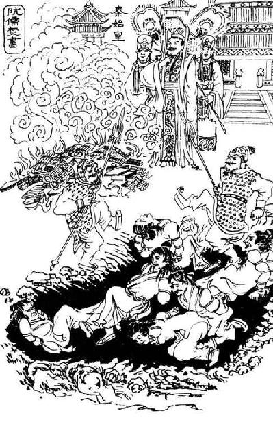

卷五 秦本纪第五
归有光：“《秦本纪》方成一篇文字，秦以前本纪，旧史皆亡，故多凑合。秦虽暴乱，而史职不废，太史公当时有所本也。……又《史记》五帝三代本纪零碎，《秦纪》便好，盖秦原有史，故文字佳。《赵世家》文字周详，亦赵有史，其他想无全书故也。”
本篇记述了秦国从兴起到发展壮大的历史过程，主要取材于已经失传的史书《秦记》。秦国自襄公开始为诸侯，穆公时与晋国争霸，其后一度衰落，到献公、孝公时重新振兴，到昭襄王时完全显露吞并天下的气势，秦始皇即位后终于完成统一大业。由于秦国灭东西二周，最终兼并天下，因此司马迁以其为正统，将秦国列入本纪。
秦之先，帝颛顼之苗裔孙曰女脩。女脩织，玄鸟【玄鸟：《殷本纪》引述《诗经》中“天命玄鸟”的殷人起源传说，秦人起源也有类似传说，综合文献资料和甘肃清水李崖遗址等地的最新考古发现来推测，秦人可能源于一支西迁的东夷民族。】 陨卵，女脩吞之，生子大业。大业取少典之子，曰女华。女华生大费，与禹平水土。已成，帝锡【锡：赐。】 玄圭。禹受曰：“非予能成，亦大费为辅。”帝舜曰：“咨尔费，赞禹功，其赐尔皂游【游：旌旗的旒苏，代指旌旗。】 。尔后嗣将大出。”乃妻之姚姓之玉女。大费拜受，佐舜调驯鸟兽，鸟兽多驯服，是为柏翳【柏翳：也作“伯益”。】 。舜赐姓嬴氏。
大费生子二人：一曰大廉，实鸟俗氏；二曰若木，实费氏。其【其：指继承费氏的若木。】 玄孙曰费昌，子孙或在中国，或在夷狄。费昌当夏桀之时，去夏归商，为汤御，以败桀于鸣条。大廉玄孙曰孟戏、中衍，鸟身人言。帝太戊【帝太戊：即商中宗。】 闻而卜之使御，吉，遂致使御而妻之。自太戊以下，中衍之后，遂世有功，以佐殷国，故嬴姓多显，遂为诸侯。
秦人的祖先，是帝颛顼的后裔叫女脩。女脩纺织的时候，有一只玄鸟生蛋落下来，女脩就把它吃了，生下儿子大业。大业娶少典的女儿为妻，名叫女华。女华生下大费，和禹一起治理水土。治水成功以后，帝舜赐给禹玄圭。禹接受说：“治水不是靠我一个人就能成功的，也得力于大费的辅佐。”帝舜说：“大费，我要告诉你，你帮助禹创建功勋，我要赐给你黑色的旌旗。你的后世子孙将会兴旺。”于是帝舜把一个姚姓的美女嫁给大费。大费叩拜并接受赏赐，从此辅佐舜驯养鸟兽，鸟兽大多被他所驯服，他就是柏翳。舜赐姓嬴氏。
大费生了两个儿子：一个叫大廉，是鸟俗氏；另一个叫若木，是费氏。若木的玄孙名叫费昌，有的子孙在中原，有的在夷狄。费昌正处在夏桀统治的时期，于是他离开夏投奔商，为汤驾车，在鸣条打败了桀。大廉的玄孙名叫孟戏、中衍，长着鸟的身体，说着人的语言。帝太戊听说了，经过占卜让他为自己驾车，占卜的结果是吉，于是让他驾车，并为其娶妻。自太戊以下诸帝，中衍的子孙，世代都有功劳，以此辅佐殷商，所以嬴姓有很多人身居显位，最终成为诸侯。
其玄孙曰中潏，在西戎，保西垂【垂：边疆。】 。生蜚廉。蜚廉生恶来。恶来有力，蜚廉善走，父子俱以材力事殷纣。周武王之伐纣，并杀恶来。是时蜚廉为纣石【石：应作“使”，出使。】 北方，还，无所报，为坛霍太山而报，得石棺，铭曰“帝令处父【处父：蜚廉的字。】 不与殷乱，赐尔石棺以华氏【华氏：光大氏族。】 ”。死，遂葬于霍太山。蜚廉复有子曰季胜。季胜生孟增。孟增幸于周成王，是为宅皋狼。皋狼生衡父，衡父生造父。造父以善御【御：驾车。】 幸于周缪王【周缪王：即周穆王。】 ，得骥、温骊、骅駵、騄耳之驷，西巡狩，乐而忘归。徐偃王作乱，造父为缪王御，长驱归周，一日千里以救乱。缪王以赵城封造父，造父族由此为赵氏。自蜚廉生季胜已下五世至造父，别居赵。赵衰其后也。恶来革者，蜚廉子也，蚤死。有子曰女防。女防生旁皋，旁皋生太几，太几生大骆，大骆生非子。以造父之宠，皆蒙赵城，姓赵氏【姓赵氏：《秦始皇本纪》称秦始皇生于赵国邯郸，“及生，名为政，姓赵氏”，使人误认为其以出生地为氏。据《秦本纪》可知，秦国公族为赵氏，始于造父，并非只有秦始皇一人以赵为氏。】 。
中衍的玄孙名叫中潏，生活在西戎地区，保卫西部边疆。他生了蜚廉，蜚廉又生了恶来。恶来很有力气，蜚廉擅长跑步，父子都凭借自己的才能事奉殷纣。周武王伐纣的时候，一并杀死恶来。这时蜚廉正为纣出使北方，他返回后，无处禀报，就在霍太山筑起祭坛向纣禀报，他找到一个石棺，上面的铭文是“天帝让处父不参与殷商的战乱，赐给你石棺来光大氏族”。蜚廉死后，他就被安葬在霍太山。蜚廉还有一个儿子名叫季胜。季胜生下孟增。孟增受到周成王的重用，这就是宅皋狼。宅皋狼生下衡父，衡父生下造父。造父因为擅长驾车而受到周缪王的重用，得到赤骥、温丽、骅駵、騄耳等骏马，于是驾车到西方去巡视，高兴得忘记返回。徐偃王发动叛乱，造父为周缪王驾车，快速从远方赶回周都，一天走一千里路来挽救乱局。周缪王把赵城封给造父，造父的族人从此为赵氏。自蜚廉生下季胜以后五代人一直到造父，才分出住在赵城。赵衰就是他的后人。恶来革，也是蜚廉的儿子，很早就死了。他有一个儿子名叫女防。女防生下旁皋，旁皋生下太几，太几生下大骆，大骆生下非子。因为造父受到周王室的宠幸，都得以住在赵城，姓赵氏。
非子居犬丘，好马及畜，善养息之。犬丘人言之周孝王，孝王召使主马于汧qiān渭之间，马大蕃息【蕃息：繁衍。】 。孝王欲以为大骆适【适：通“嫡”。】 嗣。申侯之女为大骆妻，生子成为适。申侯乃言孝王曰：“昔我先郦山之女，为戎胥轩妻，生中潏shù，以亲故归周，保西垂，西垂以其故和睦。今我复与大骆妻，生适子成。申骆重婚【重婚：两次联姻。】 ，西戎皆服，所以为王。王其图之。”于是孝王曰：“昔伯翳为舜主畜，畜多息，故有土，赐姓嬴。今其后世亦为朕息马，朕其分土为附庸【附庸：附属于大国的小国，等级低于诸侯。】 。”邑之秦，使复续嬴氏祀，号曰秦嬴。亦不废申侯之女子为骆适者，以和西戎。
秦嬴生秦侯。秦侯立十年，卒。生公伯。公伯立三年，卒。生秦仲。
秦仲立三年，周厉王无道，诸侯或叛之。西戎反王室，灭犬丘大骆之族。周宣王即位，乃以秦仲为大夫，诛西戎。西戎杀秦仲。秦仲立二十三年，死于戎。有子五人，其长者曰庄公。周宣王乃召庄公昆弟五人，与兵七千人，使伐西戎，破之。于是复予秦仲后，及其先大骆地犬丘并有之，为西垂大夫。
非子居住在犬丘，喜好马匹和其他牲畜，他擅长饲养繁育牲畜。犬丘人告诉周孝王这件事，周孝王就召见非子，让他在汧水和渭水之间主管饲养马匹，马匹大量繁殖。周孝王想让非子做大骆的继承人。申侯的女儿嫁给大骆为妻，生下儿子成是大骆的嫡子。申侯于是向周孝王进言说：“以前我的祖先娶骊山氏的女子为妻，生下的女儿嫁给戎胥轩为妻，生下中潏，因为亲近的缘故归顺了周朝，保卫西部边疆，西部边疆因此和睦。现在我再次把女儿嫁给大骆，生下嫡子成。申氏和大骆两次联姻，都让西戎归服王室，大王才得以做天子。大王请慎重考虑。”于是周孝王说：“以前柏翳为舜主管牲畜，牲畜大量繁殖，所以得到封地，获赐嬴姓。现在他的后代也为我驯养马匹，我要分封土地让他做附庸。”周孝王就以秦为封邑赐给非子，让他再次延续嬴姓的祭祀，号称秦嬴。周王室也没有废除申侯的女儿所生大骆的嫡子，以此与西戎和睦相处。
秦嬴生下秦侯。秦侯在位十年，去世。秦侯生下公伯。公伯在位三年，去世。公伯生下秦仲。
秦仲在位三年，周厉王不行正道，有些诸侯背叛王室。西戎反叛王室，灭掉犬丘大骆的家族。周宣王即位以后，就任命秦仲为大夫，讨伐西戎。西戎杀死秦仲。秦仲在位一共二十三年，最后死在西戎。秦仲有五个儿子，最年长的是庄公。周宣王于是召见庄公兄弟五人，给他们士兵七千人，让他们去讨伐西戎，最后打败西戎。于是周宣王再次赏赐秦仲的后人，把当初大骆的领地犬丘一并赏赐给他们，任命庄公为西垂大夫。
庄公居其故西犬丘，生子三人，其长男世父。世父曰：“戎杀我大父仲，我非杀戎王则不敢入邑。”遂将击戎，让其弟襄公。襄公为太子。庄公立四十四年，卒，太子襄公代立。襄公元年，以女弟【女弟：妹妹。】 缪嬴为丰王妻。襄公二年，戎围犬丘，世父击之，为戎人所虏。岁余，复归世父。七年春，周幽王用褒姒废太子，立褒姒子为适，数欺诸侯，诸侯叛之。西戎犬戎与申侯伐周，杀幽王郦山下。而秦襄公将兵救周，战甚力，有功。周避犬戎难，东徙雒邑，襄公以兵送周平王。平王封襄公为诸侯，赐之岐以西之地，曰：“戎无道，侵夺我岐、丰之地，秦能攻逐戎，即有其地。”与誓，封爵之。襄公于是始国，与诸侯通使聘享之礼，乃用駵驹、黄牛、羝羊各三，祠上帝西畤。十二年，伐戎而至岐，卒。生文公。
文公元年，居西垂宫。三年，文公以兵七百人东猎。四年，至汧渭之会，曰：“昔周邑我先秦嬴于此，后卒获为诸侯。”乃卜居之，占曰吉，即营邑之。十年，初为鄜畤，用三牢【三牢：祭祀或宴饮时牛、羊、猪齐备称三牢，又称太牢。羊、猪各一，称少牢，用于级别低于太牢的祭祀。牢，圈养牲畜的栏，代指祭祀用的牺牲。】 。十三年，初有史以纪事，民多化者。十六年，文公以兵伐戎，戎败走。于是文公遂收周余民有之，地至岐，岐以东献之周。十九年，得陈宝。二十年，法初有三族之罪。二十七年，伐南山大梓，丰大特。四十八年，文公太子卒，赐谥为竫【竫：也作“静”。】 公。竫公之长子为太子，是文公孙也。五十年，文公卒，葬西山。竫公子立，是为宁【宁：应作“宪”。】 公。
庄公居住在祖先故地西犬丘，生了三个儿子，最年长的叫世父。世父说：“西戎杀死我的祖父秦仲，我除非杀死西戎王，否则不敢进入封邑。”于是他将要去攻打西戎，让位给他的弟弟襄公。襄公成为太子。庄公在位四十四年，去世，太子襄公继位。襄公元年（前777年），襄公把自己的妹妹缪嬴嫁给丰王。襄公二年（前776年），西戎包围犬丘，世父攻打敌军，被西戎人所俘获。一年多以后，西戎放回世父。襄公七年（前771年）春，周幽王因为宠爱褒姒而废掉太子，改立褒姒的儿子为嫡嗣，多次欺骗诸侯，诸侯背叛了他。西戎的犬戎和申侯讨伐周朝，在骊山下杀死了周幽王。当时秦襄公率领军队救援周王室，作战时出力很多，立下大功。周王室躲避犬戎的祸难，向东迁都到雒邑，襄公率领军队护送周平王。周平王封襄公为诸侯，赏赐给他岐山以西的土地，说：“西戎不行正道，侵占我岐山、丰水一带的土地，秦国如果可以攻打并驱逐西戎，就可以拥有这片土地。”他立下誓言，赐给襄公封地和爵位。襄公从此创建国家，开始和诸侯互通使者，互致聘礼，于是用駵驹、黄牛、羝羊各三只，在西畤祭祀天帝。十二年（前766年），襄公讨伐西戎时来到岐山，去世。襄公生文公。
文公元年（前765年），居住在西部边疆的宫中。三年（前763年），文公率领士兵七百人到东方狩猎。四年（前762年），文公来到汧水和渭水的交会处，说：“以前周朝把这里赐给我的祖先秦嬴为封邑，后来我国终于得到诸侯的封号。”于是他占卜选择地点，得到吉利的结果，就在这里营建都邑。十年（前756年），开始修筑鄜畤，用三牢祭祀。十三年（前753年），开始有史官记录国家大事，很多人民得到教化。十六年（前750年），文公率领士兵讨伐西戎，西戎人战败逃跑。至此文公终于把周都一带的遗民全部收入秦国，势力范围扩大到岐山，把岐山以东的土地献给周王室。十九年（前747年），文公在陈仓得到宝物。二十年（前746年），法律中开始出现诛灭三族的条文。二十七年（前739年），秦国砍伐南山的大梓树，宰杀丰水中的大公牛。四十八年（前718年），文公的太子去世，赐谥号为竫公。竫公的长子被立为太子，就是文公的孙子。五十年（前716年），文公去世，被安葬在西山。竫公的儿子继位，这就是宪公。
宁公二年，公徙居平阳。遣兵伐荡社。三年，与亳战，亳王奔戎，遂灭荡社。四年，鲁公子翚弑【弑：臣杀君，子杀父。】 其君隐公。十二年，伐荡氏，取之。宁公生十岁立，立十二年卒，葬西山。生子三人，长男武公为太子。武公弟德公，同母鲁姬子。生出子【生出子：“生”前脱“王姬”二字。王姬，周天子的女儿。出子，《十二诸侯年表》作“出公”。战国时另有秦惠公之子谥出公。】 。宁公卒，大庶长弗忌、威垒、三父废太子而立出子为君。出子六年，三父等复共令人贼杀【贼杀：杀害。】 出子。出子生五岁立，立六年卒。三父等乃复立故太子武公。
吴汝纶：“此篇为秦有天下作势，通篇趋重末段。有以善御主与分封，见无他功德，襄公得周地，缪公与晋争强，孝公以后与六国争强，皆所以力争天下之渐也。”
武公元年，伐彭戏氏，至于华山下，居平阳封宫。三年，诛三父等而夷三族，以其杀出子也。郑高渠眯杀其君昭公。十年，伐邽、冀戎，初县【县：设立县。】 之。十一年，初县杜、郑。灭小虢。
十三年，齐人管至父、连称等杀其君襄公而立公孙无知。晋灭霍、魏、耿。齐雍廪杀无知、管至父等而立齐桓公。齐、晋为强国。
十九年，晋曲沃【曲沃：晋国旁支曲沃氏，见《晋世家》。】 始为晋侯。齐桓公伯【伯：霸，诸侯盟主。】 于鄄。
二十年，武公卒，葬雍平阳。初以人从死，从死者六十六人。有子一人，名曰白，白不立，封平阳。立其弟德公。
宪公二年（前714年），宪公迁都到平阳。他派兵征伐荡社。三年（前713年），宪公和亳人作战，亳王逃到西戎地区，秦军于是灭掉荡社。四年（前712年），鲁国的公子翚杀死其国君隐公。十二年（前704年），秦国征伐荡氏，攻取那里。宪公十岁时被立为国君，在位十二年去世，安葬在西山。他有三个儿子，长子武公是太子。武公和他的弟弟德公，都是鲁姬的儿子。王姬生了出子。宪公去世以后，大庶长弗忌、威垒、三父废黜太子，改立出子为国君。出子六年（前698年），三父等人又派人杀死出子。出子五岁时被立为国君，在位六年去世。三父等人于是重新拥立原来的太子武公为国君。
武公元年（前697年），秦军讨伐彭戏氏，攻至华山下，武公居住在平阳封宫。三年（前695年），武公诛杀三父等人，并且诛灭他们的三族，因为他们曾经杀死出子。郑国的高渠眯杀死其国君昭公。十年（前688年），秦军讨伐邽、冀等地戎人，开始设立县。十一年（前687年），秦国开始在杜、郑设立县。秦军灭掉小虢。
十三年（前685年），齐国人管至父、连称等人杀死其国君襄公，改立公孙无知。晋国灭掉霍、魏、耿三国。齐国的雍廪杀死公孙无知、管至父等人，改立齐桓公。齐国、晋国成为强大的国家。
十九年（前679年），晋国的曲沃氏开始成为晋侯。齐桓公在鄄邑称霸。
二十年（前678年），武公去世，被安葬在雍邑的平阳。秦国开始用活人殉葬，殉葬的有六十六人。武公有一个儿子，名叫白，白没有继位，被封在平阳。武公的弟弟德公被立为国君。
德公元年，初居雍城大郑宫。以牺三百牢【三百牢：一百副太牢，即牛、羊、猪各三百。】 祠鄜畤。卜居雍，后子孙饮马于河。梁伯、芮伯来朝。二年，初伏，以狗御蛊。德公生三十三岁而立，立二年卒。生子三人：长子宣公，中子成公，少子穆公。长子宣公立。
宣公元年，卫、燕伐周，出惠王，立王子颓。三年，郑伯、虢叔杀子颓而入惠王。四年，作密畤。与晋战河阳，胜之。十二年，宣公卒。生子九人，莫立，立其弟成公。
成公元年，梁伯、芮伯来朝。齐桓公伐山戎，次于孤竹。
成公立四年卒。子七人，莫立，立其弟缪公【缪公：即穆公。】 。
德公元年（前677年），德公开始居住在雍邑的大郑宫。用一百副太牢在鄜畤举行祭祀。通过占卜在雍邑选择地点，得到后世子孙在黄河边饮马的结果。梁伯、芮伯前来朝见。二年（前676年），秦国开始举行进入伏日的祭祀，用杀狗的办法驱除毒热之气。德公三十三岁时被立为国君，在位二年去世。他有三个儿子：大儿子是宣公，二儿子是成公，小儿子是穆公。长子宣公被立为国君。
宣公元年（前675年），卫国、燕国联合攻伐周朝，驱逐周惠王，王子颓被立为天子。三年（前673年），郑伯、虢叔杀死王子颓，并且迎接周惠王进入周都。四年（前672年），秦国修建密畤。秦军和晋军在河阳交战，战胜对方。十二年（前664年），宣公去世。宣公有九个儿子，没有一人被立为国君，他的弟弟成公被立为国君。
成公元年（前663年），梁伯、芮伯前来朝见。齐桓公讨伐山戎，驻扎在孤竹。
成公在位四年去世。他有七个儿子，没有一人被立为国君，他的弟弟缪公被立为国君。
缪公任好【任好：缪公的名。】 元年，自将伐茅津，胜之。四年，迎妇于晋，晋太子申生姊也。其岁，齐桓公伐楚，至邵陵。
五年，晋献公灭虞、虢，虏虞君与其大夫百里傒，以璧马赂【赂：赠送财物。】 于虞故也。既虏百里傒，以为秦缪公夫人媵于秦。百里傒亡秦走宛，楚鄙人执之。缪公闻百里傒贤，欲重赎之，恐楚人不与，乃使人谓楚曰：“吾媵臣百里傒在焉，请以五羖【羖：黑色公羊。】 羊皮赎之。”楚人遂许与之。当是时，百里傒年已七十余。缪公释其囚，与语国事。谢曰：“臣亡国之臣，何足问！”缪公曰：“虞君不用子，故亡，非子罪也。”固问，语三日，缪公大说，授之国政，号曰五羖大夫。百里傒让曰：“臣不及臣友蹇叔，蹇叔贤而世莫知。臣常游困于齐而乞食铚人，蹇叔收臣。臣因而欲事齐君无知，蹇叔止臣，臣得脱齐难，遂之周。周王子颓好牛，臣以养牛干【干：求见。】 之。及颓欲用臣，蹇叔止臣，臣去，得不诛。事虞君，蹇叔止臣。臣知虞君不用臣，臣诚私利禄爵，且留。再用其言，得脱，一不用，及虞君难，是以知其贤。”于是缪公使人厚币迎蹇叔，以为上大夫。
秋，缪公自将伐晋，战于河曲。晋骊姬作乱，太子申生死新城，重耳、夷吾出奔。
九年，齐桓公会诸侯于葵丘。
穆公任好元年（前659年），亲自率领军队攻打茅津，取得胜利。四年（前656年），他到晋国迎娶夫人，夫人是晋国太子申生的姐姐。这一年，齐桓公讨伐楚国，攻至邵陵。
五年（前655年），晋献公灭掉虞、虢两国，俘获虞君和他的大夫百里傒，这就是晋国把璧玉和骏马赠给虞君的原因。百里傒已经被俘获，晋国就以他为秦缪公夫人陪嫁的奴隶送到了秦国。百里傒从秦国逃到宛，被楚国守边的士兵捉住。缪公听说百里傒贤能，想要用重金把他赎回，又害怕楚国人不同意，于是派人对楚国人说：“我国陪嫁的奴隶百里傒在楚国，请让我国用五张黑羊皮把他赎回来。”楚国人就同意把百里傒交给秦国了。在这个时候，百里傒已经七十多岁了。缪公将他释放，和他探讨治理国家的问题。百里傒辞谢说：“我是亡国的臣子，有什么值得探讨的呢！”缪公说：“虞君不重用您，因此亡国，这不是您的罪过。”缪公执意向他请教，于是两个人探讨了三天，缪公非常高兴，就把国政交给他处理，号称五羖大夫。百里傒推让说：“我比不上我的朋友蹇叔，蹇叔贤能而世人却不知道。我曾在齐国游历，因困顿向铚邑人乞讨食物，蹇叔收留了我。我当时想去事奉齐君无知，蹇叔阻止了我，我才躲过了齐国的灾难，于是我来到周王室。周朝的王子颓非常喜欢牛，我就通过养牛来求见他。等到王子颓想要任用我的时候，蹇叔又阻止了我，我离开周都，得以不被诛杀。我去事奉虞君，蹇叔还是阻止我。虽然我知道虞君不会重用我，但是我实在贪恋财利、俸禄和爵位，暂且留在那里。我两次听从蹇叔的劝告，两次脱险，只有一次没听从他的劝告，就遇到虞君的灾难，所以我知道他是贤能的人。”于是缪公派人带着丰厚的礼物去请蹇叔，任命他为上大夫。
秋季，缪公亲自率领军队讨伐晋国，在河曲和晋军交战。这时，晋国的骊姬制造祸乱，太子申生死在新城，公子重耳、夷吾逃亡在外。
九年（前651年），齐桓公在葵丘大会诸侯。
晋献公卒。立骊姬子傒齐，其臣里克杀傒齐。荀息立卓子，克又杀卓子及荀息。夷吾使人请秦，求入晋。于是缪公许之，使百里傒将兵送夷吾。夷吾谓曰：“诚得立，请割晋之河西八城与秦。”及至，已立，而使丕郑谢秦，背约不与河西城，而杀里克。丕郑闻之，恐，因与缪公谋曰：“晋人不欲夷吾，实欲重耳。今背秦约而杀里克，皆吕甥、郄芮之计也。愿君以利急召吕、郄，吕、郄至，则更入重耳便。”缪公许之，使人与丕郑归，召吕、郄。吕、郄等疑丕郑有间，乃言夷吾杀丕郑。丕郑子丕豹奔秦，说缪公曰：“晋君无道，百姓不亲，可伐也。”缪公曰：“百姓苟不便，何故能诛其大臣？能诛其大臣，此其调也。”不听，而阴用豹。
十二年，齐管仲、隰朋死。
晋旱，来请粟。丕豹说缪公勿与，因其饥而伐之。缪公问公孙支，支曰：“饥【饥：指农作物歉收。】 穰【穰：指丰收。】 更事耳，不可不与。”问百里傒，傒曰：“夷吾得罪于君，其百姓何罪？”于是用百里傒、公孙支言，卒与之粟。以船漕【漕：通过水路运粮。】 车转，自雍相望至绛。
晋献公去世。国人立骊姬的儿子傒齐为国君，晋国的大臣里克杀死傒齐。荀息立卓子为国君，里克又杀死卓子和荀息。公子夷吾派人到秦国请求帮助，希望回到晋国继位。于是缪公答应了他，派百里傒率领士兵护送夷吾。夷吾对秦的国君说：“如果我真能继位，请求割让晋国河西的八座城邑送给秦国。”等到他返回晋国，已经继位，就派丕郑到秦国道谢，却违背约定不给秦国河西的八座城邑，并且杀死里克。丕郑听说以后，非常害怕，趁机和秦穆公谋划说：“晋国人不想让夷吾做国君，其实希望重耳回国继位。现在夷吾违背约定，还杀死里克，这都是吕甥、郄芮的计策。希望您用财利召见吕、郄二人，吕、郄二人来了，再护送重耳回晋国就方便了。”缪公同意了，派人护送丕郑回到晋国，召见吕、郄二人。吕、郄等人怀疑丕郑有离间之言，于是建议夷吾杀死丕郑。丕郑的儿子丕豹逃到秦国，劝缪公说：“晋君不行正道，百姓不亲近他，您可以讨伐晋国。”缪公说：“百姓如果不亲近他，他为什么能诛杀大臣呢？既然他能诛杀大臣，这就说明他是可以协调国内各种势力。”他没有听从，却暗自重用丕豹。
十二年（前648年），齐国的管仲、隰朋死去。
晋国发生旱灾，前来请求救济粮食。丕豹劝说缪公不给晋国粮食，利用晋国发生饥荒的时机去讨伐。缪公询问公孙支，公孙支说：“荒年和丰年更替到来罢了，不可以不给他们粮食。”缪公又问百里傒，百里傒说：“夷吾得罪了您，晋国的百姓有什么罪过呢？”于是缪公采纳了百里傒和公孙支的建议，最终给了晋国粮食。用船只和车辆运输，从雍邑到绛邑的路上连续不断。
十四年，秦饥，请粟于晋。晋君谋之群臣。虢射曰：“因其饥伐之，可有大功。”晋君从之。十五年，兴兵将攻秦。缪公发兵，使丕豹将，自往击之。九月壬戌，与晋惠公夷吾合战于韩地。晋君弃其军，与秦争利，还【还：通“旋”，盘旋。】 而马騺【騺：马难以起步。】 。缪公与麾下驰追之，不能得晋君，反为晋军所围。晋击缪公，缪公伤。于是岐下食善马者三百人驰冒晋军，晋军解围，遂脱缪公而反生得晋君。初，缪公亡善马，岐下野人【野人：居住在郊野的人。】 共得而食之者三百余人，吏逐得，欲法之【法之：将他们法办。】 。缪公曰：“君子不以畜产害人。吾闻食善马肉不饮酒，伤人。”乃皆赐酒而赦之。三百人者闻秦击晋，皆求从，从而见缪公窘，亦皆推锋争死，以报食马之德。于是缪公虏晋君以归，令于国：“齐zhāi宿，吾将以晋君祠上帝。”周天子闻之，曰“晋我同姓”，为请晋君。夷吾姊亦为缪公夫人，夫人闻之，乃衰cuī绖跣，曰：“妾兄弟不能相救，以辱君命。”缪公曰：“我得晋君以为功，今天子为请，夫人是忧。”乃与晋君盟，许归之，更舍上舍【上舍：上等房舍。】 ，而馈之七牢。十一月，归晋君夷吾，夷吾献其河西地，使太子圉为质于秦。秦妻子圉以宗女。是时秦地东至河。
十四年（前646年），秦国发生饥荒，向晋国借粮。晋君和群臣商量。虢射说：“利用秦国发生饥荒的时机去讨伐，可以创建大功。”晋君采纳了他的建议。十五年（前645年），晋国征发士兵将要攻打秦国。缪公也调发军队，让丕豹率领，缪公亲自前往迎战。九月壬戌日，秦军和晋惠公夷吾在韩地交战。晋君抛下自己的军队，独自和秦军争胜，在转弯的时候拉车的马难以起步。缪公和部下驱车追赶，没有捉到晋君，反而被晋国的军队所围困。晋国士兵攻击缪公，缪公受伤。这时岐山下曾经偷吃缪公良马的三百个人驱车冲向晋军，晋军的包围圈解除了，最终使缪公脱险，并且活捉了晋君。当初，缪公丢失了一匹良马，生活在岐山下的三百多个郊野之人得到这匹马，并且一同把它的肉吃了，官吏最终捉住这些人，想要按照法律惩处他们。缪公说：“君子不会因为牲畜杀人。我听说吃了良马的肉不喝酒，对人身体有害。”于是他赏赐给这些人酒喝，并且赦免了他们。这三百个人听说秦国要攻打晋国，都请求跟随军队出征，因此看到缪公处境困窘，也都不顾生死地争相冲锋，来报答缪公宽恕他们偷吃马肉的恩德。于是缪公俘获晋君返回，号令全国：“斋戒沐浴，我将要用晋君来祭祀天帝。”周天子听说这件事，说“晋君和我是同姓”，为晋君求情。夷吾的姐姐是缪公的夫人，她听说这件事，就穿上丧服，光着脚，说：“我的兄弟有难，我不能相救，辱没了您的命令。”缪公说：“我俘虏了晋君，以此为功绩，现在有天子为他求情，夫人也因此担忧。”于是他和晋君订立盟约，同意把他放回去，还让他住在上等的馆舍，用七副太牢的规格招待他。十一月，秦国放晋君回国，夷吾把河西的土地献给秦国，派太子圉到秦国做人质。秦国把一名宗室女子嫁给了太子圉。这时秦国的领土已经向东扩展到黄河流域。
十八年，齐桓公卒。
二十年，秦灭梁、芮。
二十二年，晋公子圉闻晋君病，曰：“梁，我母家也，而秦灭之。我兄弟多，即君百岁后，秦必留我，而晋轻，亦更立他子。”子圉乃亡归晋。二十三年，晋惠公卒，子圉立为君。秦怨圉亡去，乃迎晋公子重耳于楚，而妻以故子圉妻。重耳初谢，后乃受。缪公益礼厚遇之。二十四年春，秦使人告晋大臣，欲入重耳。晋许之，于是使人送重耳。二月，重耳立为晋君，是为文公。文公使人杀子圉。子圉是为怀公。
其秋，周襄王弟带以翟伐王，王出居郑。二十五年，周王使人告难于晋、秦。秦缪公将兵助晋文公入襄王，杀王弟带。二十八年，晋文公败楚于城濮。三十年，缪公助晋文公围郑。郑使人言缪公曰：“亡郑厚晋，于晋而得矣，而秦未有利。晋之强，秦之忧也。”缪公乃罢兵归。晋亦罢。三十二年冬，晋文公卒。
十八年（前642年），齐桓公去世。
二十年（前640年），秦国灭掉梁、芮两国。
二十二年（前638年），晋国太子圉听说晋君生病，说：“梁国，是我母亲的娘家，秦国却将其灭掉了。我的兄弟很多，在晋君去世以后，秦国一定会扣留我，而晋国会轻视我，也将改立其他的公子为国君。”太子圉于是逃回晋国。二十三年（前637年），晋惠公去世，太子圉被立为国君。秦国怨恨太子圉逃回晋国，于是从楚国迎接晋国公子重耳，并且把原来太子圉的妻子嫁给他。重耳最初拒绝，后来还是接受了。缪公用更隆重的礼节厚待重耳。二十四年（前636年）的春天，秦国派人告诉晋国的大臣，想要护送公子重耳回到晋国。晋国同意了，于是缪公派人护送重耳回到晋国。二月，重耳被拥立为国君，这就是晋文公。晋文公命人杀死子圉。子圉就是晋怀公。
当年秋季，周襄王的弟弟带勾结翟人攻打周襄王，周襄王出逃到郑国。二十五年（前635年），周襄王派人到晋国、秦国求救。秦缪公率领士兵帮助晋文公护送周襄王进入国都，杀死周襄王的弟弟带。二十八年（前632年），晋文公在城濮打败楚国。三十年（前630年），缪公帮助晋文公围困郑国。郑国派人劝秦穆公说：“灭掉郑国只能对晋国有利，对于晋国是很大的收获，而对于秦国却没有好处。晋国的强大，就是秦国的忧患。”缪公于是撤兵回国。晋国也撤兵了。三十二年（前628年）冬季，晋文公去世。
郑人有卖郑于秦曰：“我主其城门，郑可袭也。”缪公问蹇叔、百里傒，对曰：“径【径：穿行。】 数国千里而袭人，希有得利者。且人卖郑，庸知我国人不有以我情告郑者乎？不可。”缪公曰：“子不知也，吾已决矣。”遂发兵，使百里傒子孟明视、蹇叔子西乞术及白乙丙将兵。行日，百里傒、蹇叔二人哭之。缪公闻，怒曰：“孤【孤：先秦帝王、诸侯常用的自称之一。《老子》说：“人之所恶，惟孤寡不谷，而王公以为称。”孤，指年幼丧父之人，王公多为丧父后继位，所以自称“孤”。寡人，指寡德之人。不谷，指不善之人。都是自谦之辞。】 发兵而子沮【沮：败坏士气。】 哭吾军，何也？”二老曰：“臣非敢沮君军。军行，臣子与往；臣老，迟还恐不相见，故哭耳。”二老退，谓其子曰：“汝军即败，必于殽xiáo【殽：指崤山。】 厄矣。”三十三年春，秦兵遂东，更【更：经过。】 晋地，过周北门。周王孙满曰：“秦师无礼，不败何待？”兵至滑，郑贩卖贾人弦高，持十二牛将卖之周，见秦兵，恐死虏，因献其牛，曰：“闻大国将诛郑，郑君谨修守御备，使臣以牛十二劳军士。”秦三将军相谓曰：“将袭郑，郑今已觉之，往无及已。”灭滑。滑，晋之边邑也。
郑国有个人把郑国出卖给秦国说：“我主管郑国的城门，可以偷袭郑国。”缪公询问蹇叔、百里傒，两个人回答说：“穿行多个国家，经过上千里路去偷袭别人，很少有获得成功的。况且有人可以出卖郑国，怎么知道我国没有人把我们的事情通报给郑国呢？不可以去。”缪公说：“二位不知道内情，我已经决定了。”于是他调发士兵，派百里傒的儿子孟明视、蹇叔的儿子西乞术和白乙丙带兵。军队出发那天，百里傒、蹇叔两个人为将士哭泣。缪公听到后，生气地说：“我调发士兵，可是你们却在这里大哭来败坏我军的士气，这是为什么？”两位老臣说：“我们不敢败坏您军队的士气。大军就要出发了，我们的儿子一同去作战；我们老了，他们回来晚恐怕就不能相见了，所以痛哭罢了。”两位老臣退下，对他们的儿子说：“你们的军队将会战败，一定是在崤山的险要地带了。”三十三年（前627年）的春季，秦国的军队于是向东进发，经过晋国的领地，经过周都的北门。周朝的王孙满说：“秦国的军队不讲礼法，不失败还等什么呢？”秦国的军队来到滑国，遇到贩运货物的郑国商人弦高，他正赶着十二头牛打算到周都去贩卖，看到秦国的士兵，害怕被抓住杀死，就把牛献给秦军，说：“听说大国将惩罚郑国，郑君已经谨慎地做好了防备，派我献上十二头牛来犒劳将士。”秦国的三位将军相互商量说：“我们将要偷袭郑国，郑国现在已经察觉了，我们赶过去也没有机会了。”于是秦军灭掉滑国。滑国，是晋国边境的一个小国。
当是时，晋文公丧尚未葬。太子襄公怒曰：“秦侮我孤，因丧破我滑。”遂墨衰绖【墨衰绖：把丧服染成黑色。军中不宜穿丧服，不穿丧服又违背孝道，所以把丧服染成黑色，是一种变通的做法。】 ，发兵遮秦兵于殽，击之，大破秦军，无一人得脱者。虏秦三将以归。文公夫人【文公夫人：晋襄公嫡母，并非生母。】 ，秦女也，为秦三囚将请曰：“缪公【缪公：“缪”是秦君任好死后的谥号，此处称“缪公”是后世史官的追述。从下文可知，此处应称“我君”。】 之怨此三人入于骨髓，愿令此三人归，令我君得自快烹之。”晋君许之，归秦三将。三将至，缪公素服郊迎，向三人哭曰：“孤以不用百里傒、蹇叔言以辱三子，三子何罪乎？子其悉心雪耻，毋怠。”遂复三人官秩【官秩：官职和俸禄。】 如故，愈益厚之。
三十四年，楚太子商臣【商臣：即楚穆王。】 弑其父成王代立。缪公于是复使孟明视等将兵伐晋，战于彭衙。秦不利，引兵归。
在这个时候，晋文公的遗体还没有安葬。太子襄公生气地说：“秦国欺负我这个孤儿，利用国内有丧事的时机攻破我边境的滑国。”于是他把丧服染成黑色，调发士兵在崤山截击秦军，发起攻击，大败秦军，秦国的士兵没有一个人得以逃脱。晋国俘虏秦国的三位将军后返回。晋文公的夫人，是秦国女子，她为被俘虏的三位秦军将领求情说：“我君怨恨这三个人已经深入骨髓，希望把这三个人放回秦国，让我君亲自烹杀他们来解恨。”晋君同意了，于是释放三位将领回国。三位将军回到秦国，缪公就穿着白色的衣服到郊外迎接，面对三位将军哭着说：“我因为没有听从百里傒、蹇叔的话而让三位蒙受耻辱，三位哪里有罪过呢？你们准备洗雪耻辱，不要懈怠。”于是他恢复三个人的官职和俸禄，更加厚待他们。
三十四年（前626年），楚国的太子商臣杀死他的父亲成王，自立为楚王。缪公在这一年再次命令孟明视等人带兵攻打晋国，在彭衙和晋军交战。秦军没有获胜，领兵撤回。
戎王使由余于秦。由余，其先晋人也，亡入戎，能晋言。闻缪公贤，故使由余观秦。秦缪公示以宫室、积聚。由余曰：“使鬼为之，则劳神矣；使人为之，亦苦民矣。”缪公怪之，问曰：“中国以诗书、礼乐、法度为政，然尚时乱，今戎夷无此，何以为治，不亦难乎？”由余笑曰：“此乃中国所以乱也。夫自上圣黄帝作为礼乐、法度，身以先之，仅以小治。及其后世，日以骄淫。阻法度之威，以责督【责督：责罚监督。】 于下，下罢pí极则以仁义怨望于上，上下交争怨而相篡弑，至于灭宗，皆以此类也。夫戎夷不然。上含淳德以遇其下，下怀忠信以事其上，一国之政犹一身之治，不知所以治，此真圣人之治也。”于是缪公退而问内史廖曰：“孤闻邻国有圣人，敌国之忧也。今由余贤，寡人之害，将奈之何？”内史廖曰：“戎王处辟匿，未闻中国之声。君试遗其女乐，以夺其志；为由余请，以疏其间；留而莫遣，以失其期。戎王怪之，必疑由余。君臣有间，乃可虏也。且戎王好乐，必怠于政。”缪公曰：“善。”因与由余曲席【曲席：坐席相连，指不分上下。】 而坐，传器而食，问其地形与其兵势尽察【察：同“察”，详细了解。】 ，而后令内史廖以女乐二八【二八：十六。】 遗戎王。戎王受而说之，终年不还。于是秦乃归由余。由余数谏不听，缪公又数使人间要由余，由余遂去降秦。缪公以客礼礼之，问伐戎之形。
戎王派由余出使秦国。由余，他的祖先是晋国人，逃到西戎，会说晋国的语言。戎王听说缪公贤德，因此派由余到秦国去考察。秦缪公让由余参观了秦国的宫室、储备，由余说：“如果让鬼神来打造，他们也会觉得劳心了；如果让人去制作，百姓也会很辛苦了。”缪公感到奇怪，问道：“中原用诗书、礼乐、法度来治理国家，然而还是经常有混乱局面，现在戎夷没有这些，用什么治理国家，不也是很困难吗？”由余笑着说：“这就是中原各国出现混乱局面的原因。自从上古的圣人黄帝制定了礼乐、法度，他率先遵行，只能实现小规模的安定局面。等到后世，逐渐骄奢淫逸。为政者自己阻碍了法度的威严，却用法度责罚监督下级，下级疲困到极点就会怨恨上级不行仁义，上下相互争斗怨恨，并且篡位弑君，甚至诛灭宗族，都是这样的情况。而戎夷就不会这样。上级能够用淳厚的美德来对待下级，下级能够用忠诚和信用来事奉上级，一个国家的政治就像一个人的修养，尽管不知道是如何治理的，但这才是真正的圣人之治。”于是缪公退朝并询问内史廖说：“我听说邻国有圣人，就是敌国的忧患。现在由余的贤能，就是我的祸害，应该怎么办呢？”内史廖回答说：“戎王身处偏僻闭塞的地方，从没听过中原的音乐。您可以尝试送他一些歌舞艺人，以此削弱他的心志；再为由余向戎王请求，来疏远他们的关系；我们留住他不让他回去，来拖延他回国的期限。戎王怪罪由余，就一定会怀疑他。君臣之间产生嫌隙，我们就可以俘虏戎王了。况且戎王喜好音乐，一定荒废政务。”缪公说：“很好。”他就和由余席垫相连而坐，共享餐具而食，向他询问西戎的地理形势和兵力配备而全部详细了解，然后派内史廖把十六名歌舞艺人送给戎王。戎王接受后很高兴，一整年也不理朝政。这时秦国才让由余回去。由余多次劝谏，戎王都不听从，缪公又多次派人暗中邀请由余，由余终于归降了秦国。缪公用宾客的礼节招待由余，向他询问讨伐西戎的事情。
三十六年，缪公复益厚孟明等，使将兵伐晋，渡河焚船，大败晋人，取王官及鄗，以报殽之役。晋人皆城守不敢出。于是缪公乃自茅津渡河，封殽中尸，为发丧，哭之三日。乃誓于军曰：“嗟，士卒！听无哗，余誓告汝。古之人谋黄发番pó番【黄发番番：指老人。番，通“皤”，白色。】 ，则无所过。”以申思不用蹇叔、百里傒之谋，故作此誓，令后世以记余过。君子闻之，皆为垂涕，曰：“嗟乎！秦缪公之与人周也，卒得孟明之庆。”
三十七年，秦用由余谋伐戎王，益国十二，开地千里，遂霸西戎。天子使召公过贺缪公以金鼓【金鼓：用金属制成的钲，因其外形像鼓，故得名金鼓。】 。
三十九年，缪公卒，葬雍。从死者百七十七人，秦之良臣子舆氏三人名曰奄息、仲行、针虎，亦在从死之中。秦人哀【哀：同情。】 之，为作歌《黄鸟》之诗。君子曰：“秦缪公广地益国，东服强晋，西霸戎夷，然不为诸侯盟主，亦宜哉！死而弃民，收其良臣而从死。且先王崩，尚犹遗德垂法，况夺之善人良臣百姓所哀者乎？是以知秦不能复东征也。”缪公子四十人，其太子 代立，是为康公。
三十六年（前624年），缪公更加厚待孟明视等人，派他们带兵攻打晋国，渡过黄河就烧毁船只，大败晋军，夺取王官和鄗邑，以此报崤山战败之仇。晋人都固守在城中不敢出来。于是缪公亲自从茅津渡过黄河，安葬了崤山中的尸体，为他们举办丧事，痛哭致哀三天。于是他在军中发布誓词说：“啊，将士们！听着，不要喧哗，我要向你们发布誓词。古时候的人总是会向白发的老人请教，那样就不会犯错。”他以此申明反思没有听从蹇叔、百里傒建议的错误，所以发布这篇誓词，让后世记住他的错误。君子听说以后，都为此流下眼泪，说：“啊！秦缪公在用人方面考虑得非常周到，最终得到了孟明视取胜的喜讯。”
三十七年（前623年），秦国采用由余的计策讨伐戎王，增加了十二国的土地，开拓了一千里的疆域，终于称霸西戎。周天子派召公过带着金鼓向缪公道贺。
三十九年（前621年），缪公去世，被安葬在雍邑。殉葬的人有一百七十七人，秦国良臣子舆氏的三个人，名叫奄息、仲行、针虎，也在殉葬之列。秦国人同情他们，为他们作诗歌《黄鸟》。君子说：“秦缪公开疆拓土，在东方制服强大的晋国，在西方称霸戎夷地区，然而没有成为诸侯盟主，也是合理的啊！他死后就抛弃臣民，让他的良臣殉葬。而且古代圣王去世，还能留下美德和法度，怎么能强迫百姓所同情的好人和良臣去殉葬呢？因此可以知道秦国不会再向东征讨了。”缪公有四十个儿子，太子 继位，这就是康公。
康公元年，往岁缪公之卒，晋襄公亦卒，襄公之弟名雍，秦出也，在秦。晋赵盾欲立之，使随会来迎雍，秦以兵送至令狐。晋立襄公子【襄公子：名夷皋，即晋灵公。】 而反击秦师，秦师败，随会来奔。二年，秦伐晋，取武城，报令狐之役。四年，晋伐秦，取少梁。六年，秦伐晋，取羁马。战于河曲，大败晋军。晋人患【患：忧虑。】 随会在秦为乱，乃使魏雠余详【详：通“佯”，假装。】 反，合谋会，诈而得会，会遂归晋。康公立十二年卒，子共公立。
共公二年，晋赵穿弑其君灵公。三年，楚庄王强，北兵至雒，问周鼎【问周鼎：楚庄王问王孙满九鼎的大小和轻重，表明其取代周王室号令天下的野心，此时详见《周本纪》《楚世家》和《左传·宣公三年》。周鼎，相传大禹铸九鼎，象征九州，传至周朝，为王权的象征。】 。共公立五年卒，子桓公立。
桓公三年，晋败我一将。十年，楚庄王服郑，北败晋兵于河上。当是之时，楚霸，为会盟合诸侯。二十四年，晋厉公初立，与秦桓公夹河而盟。归而秦倍盟，与翟合谋击晋。二十六年，晋率诸侯伐秦，秦军败走，追至泾而还。桓公立二十七年卒，子景公立。
康公元年（前620年），前一年缪公去世的时候，晋襄公也去世了，晋襄公的弟弟名叫雍，他的母亲是秦国人，他住在秦国。晋国的赵盾想要立他为国君，派随会到秦国迎接雍，秦国派兵护送他到令狐。晋国却立襄公的儿子为国君，反而派兵攻击秦军，秦军战败，随会逃到秦国。二年（前619年），秦国讨伐晋国，攻取武城，报令狐战败之仇。四年（前617年），晋国讨伐秦国，攻取少梁。六年（前615年），秦国讨伐晋国，攻取羁马。秦军与对方在河曲交战，大败晋军。晋国人担心随会在秦国扰乱晋国，于是派魏雠余假装反叛晋国，和随会合谋，使诈而劫持了随会，随会于是回到晋国。康公在位十二年去世，他的儿子共公继位。
共公二年（前607年），晋国的赵穿杀死其国君灵公。三年（前606年），楚庄王势力强大，带兵北上来到雒邑，询问九鼎的大小和重量。共公在位五年去世，他的儿子桓公继位。
桓公三年（前601年），晋国打败秦国的一位将领。十年（前594年），楚庄王征服郑国，带兵北上在黄河边打败晋军。在这个时候，楚国称霸，举行会盟召集诸侯。二十四年（前580年），晋厉公刚继位，和秦桓公隔着黄河订立盟约。桓公返回后秦国就背弃了盟约，和翟人合谋攻打晋国。二十六年（前578年），晋国带领诸侯攻打秦国，秦军战败逃跑，诸侯的军队追到泾水才返回。桓公在位二十七年去世，他的儿子景公继位。
景公四年，晋栾书弑其君厉公。十五年，救郑，败晋兵于栎。是时晋悼公为盟主。十八年，晋悼公强，数会诸侯，率以伐秦，败秦军。秦军走，晋兵追之，遂渡泾，至棫林而还。二十七年，景公如晋，与平公盟，已而背之。三十六年，楚公子围弑其君而自立，是为灵王。景公母弟后子针有宠，景公母弟富，或谮【谮：说坏话。】 之，恐诛，乃奔晋，车重千乘。晋平公曰：“后子富如此，何以自亡？”对曰：“秦公无道，畏诛，欲待其后世乃归。”三十九年，楚灵王强，会诸侯于申，为盟主，杀齐庆封。景公立四十年卒，子哀公立。后子复来归秦。
哀公八年，楚公子弃疾弑灵王而自立，是为平王。十一年，楚平王来求秦女为太子建妻。至国，女好而自娶之。十五年，楚平王欲诛建，建亡。伍子胥奔吴。晋公室卑而六卿强，欲内相攻，是以久秦晋不相攻。三十一年，吴王阖闾与伍子胥伐楚，楚王【楚王：指楚昭王。】 亡奔随，吴遂入郢。楚大夫申包胥来告急，七日不食，日夜哭泣。于是秦乃发五百乘救楚，败吴师。吴师归，楚昭王乃得复入郢。哀公立三十六年卒。太子夷公，夷公蚤死，不得立，立夷公子，是为惠公。
景公四年（前573年），晋国的栾书杀死其国君厉公。十五年（前562年），秦国援救郑国，在栎邑将晋军打败。当时晋悼公是诸侯盟主。十八年（前559年），晋悼公的势力强大，多次和诸侯会盟，率领军队讨伐秦国，打败秦军。秦军战败逃跑，晋军追击，一直渡过泾水，追到棫林才带兵撤回。二十七年（前550年），景公到晋国，和晋平公订立盟约，不久又背弃了盟约。三十六年（前541年），楚国的公子围杀死其国君而自立，这就是楚灵王。景公的同母弟后子针深受宠信，景公的同母弟富有，就有人说他的坏话，他害怕被诛杀，于是逃到晋国，他的资财装满了一千辆车。晋平公说：“后子这样富有，为什么要逃亡呢？”他回答说：“秦君不行正道，我害怕被诛杀，我想等他去世以后再返回秦国。”三十九年（前538年），楚灵王的势力强大，和诸侯在申地会盟，成为盟主，杀死齐国的庆封。景公在位四十年去世，他的儿子哀公继位。后子针重新回到秦国。
哀公八年（前529年），楚国的公子弃疾杀死灵王而自立，他就是楚平王。哀公十一年（前526年），楚平王使人前来求娶秦国女子为太子建的妻子。接回楚国，平王看到秦女长得漂亮，就自己娶了她。十五年（前522年），楚平王想要诛杀太子建，太子建逃跑。伍子胥逃到吴国。晋国公室衰落而六卿势力强大，他们想要在内部相互争权，所以很长时间秦国和晋国都没有发生战争。三十一年（前506年），吴王阖闾和伍子胥讨伐楚国，楚昭王逃到随国，吴军于是进入郢。楚国的大夫申包胥来到秦国求救，他七天不吃东西，从早到晚哭泣。于是秦国就调发五百辆兵车去救援楚国，打败吴军。吴军撤退以后，楚昭王才得以重新回到郢。哀公在位三十六年去世。太子是夷公，夷公死得很早，没能继位，夷公的儿子被立为国君，这就是秦惠公。
惠公元年，孔子行鲁相事。五年，晋卿中行、范氏反晋，晋使智氏、赵简子攻之，范、中行氏亡奔齐。惠公立十年卒，子悼公立。
悼公二年，齐臣田乞弑其君孺子，立其兄阳生，是为悼公。六年，吴败齐师。齐人弑悼公，立其子简公。九年，晋定公与吴王夫差盟，争长于黄池，卒先吴。吴强，陵中国。十二年，齐田常【田常：本名恒，《史记》避汉文帝刘恒讳改其名为常。】 弑简公，立其弟平公，常相之。十三年，楚灭陈。秦悼公立十四年卒，子厉共公立。孔子以悼公十二年卒。
厉共公二年，蜀人来赂。十六年，堑【堑：防御用的壕沟。这里作动词。】 河旁。以兵二万伐大荔，取其王城。二十一年，初县频阳。晋取武成。二十四年，晋乱，杀智伯，分其国与赵、韩、魏。二十五年，智开与邑人来奔。三十三年，伐义渠，虏其王。三十四年，日食。厉共公卒，子躁公立。
躁公二年，南郑反。十三年，义渠来伐，至渭南。十四年，躁公卒，立其弟怀公。
怀公四年，庶长晁与大臣围怀公，怀公自杀。怀公太子曰昭子，蚤死，大臣乃立太子昭子之子，是为灵公。灵公，怀公孙也。
惠公元年（前500年），孔子出任鲁国的傧相。五年（前496年），晋国六卿中的中行氏、范氏反叛晋国，晋国派智氏、赵简子去攻打两家，范氏、中行氏逃到齐国。惠公在位十年去世，他的儿子悼公继位。
悼公二年（前489年），齐国大臣田乞杀死其国君孺子，立孺子的哥哥阳生为国君，这就是齐悼公。六年（前485年），吴军打败齐军。齐国人杀死其国君齐悼公，立他的儿子简公为国君。九年（前482年），晋定公和吴王夫差举行会盟，在黄池为盟主之位而争执，最后吴国排在前面。吴国势力强大，经常欺凌中原各国。十二年（前479年），齐国的田常杀死简公，立简公的弟弟平公为国君，田常辅佐他。十三年（前478年），楚国灭掉陈国。秦悼公在位十四年去世，他的儿子厉共公继位。孔子在秦悼公十二年去世。
厉共公二年（前475年），蜀国人来到秦国进献礼物。十六年（前461年），在黄河边挖堑壕。秦国派士兵两万人攻打大荔戎，攻取大荔王城。二十一年（前456年），秦国开始在频阳设县。晋国攻取武城。二十四年（前453年），晋国发生内乱，智伯被杀，赵、韩、魏三家瓜分他的封地。二十五年（前452年），智开和他封地的属民前来投奔。三十三年（前444年），秦国攻打义渠戎，俘获义渠王。三十四年（前443年），发生日食。厉共公去世，他的儿子躁公继位。
躁公二年（前441年），南郑反叛。十三年（前430年），义渠戎攻打秦国，攻到渭水以南。十四年（前429年），躁公去世，他的弟弟怀公继位。
怀公四年（前425年），庶长晁和大臣围攻打怀公，怀公自杀。怀公的太子叫昭子，很早就死了，大臣于是立昭子的儿子为国君，这就是灵公。灵公，是怀公的孙子。
灵公六年，晋城少梁，秦击之。十三年【十三年：秦灵公共在位十年。】 ，城籍姑。灵公卒，子献公不得立，立灵公季父悼子，是为简公。简公，昭子之弟而怀公子也。
简公六年，令吏初带剑。堑洛。城重泉。十六年【十六年：秦简公共在位十五年。】 ，卒，子惠公立。
惠公十二年，子出子生。十三年，伐蜀，取南郑。惠公卒，出子立。
出子二年，庶长改迎灵公之子献公于河西而立之。杀出子及其母，沉之渊旁。秦以往者数易君，君臣乖乱【乖乱：变乱，混乱。】 ，故晋复强，夺秦河西地。
献公元年，止从死。二年，城栎阳。四年正月庚寅，孝公生。十一年，周太史儋见献公曰：“周故与秦国合而别，别五百岁复合，合十七岁而霸王出。”十六年，桃冬花。十八年，雨金栎阳。二十一年，与晋【晋：指魏国，下同。】 战于石门，斩首六万，天子贺以黼黻【黼黻：绣有华美花纹的礼服。】 。二十三年，与魏晋战少梁，虏其将公孙痤。二十四年，献公卒【献公卒：按《六国年表》，秦献公死于少梁之战当年。先秦有新君继位当年改元和逾年改元两种方法，且因诸侯混战而无定制，故《史记》关于战国时期的纪年多有谬误和矛盾之处。】 ，子孝公立，年已二十一岁矣。
秦灵公六年（前419年），晋国在少梁筑城，秦国攻打那里。十年（前415年），秦国在籍姑筑城。灵公去世，他的儿子献公没有被立为国君，灵公的叔父悼子继位，这就是简公。简公是昭子的弟弟，也是怀公的儿子。
简公六年（前409年），秦国开始命令官吏带剑。在洛水挖堑壕。在重泉筑城。十五年（前400年），简公去世，他的儿子惠公继位。
惠公十二年（前388年），他的儿子出子出生。十三年（前387年），秦国讨伐蜀国，攻取南郑。惠公去世，他的儿子出子继位。
出子二年（前385年），庶长改在河西迎接灵公的儿子献公并立他为国君。献公杀死出子和他的母亲，把尸体沉到深渊中。秦国此前多次更换国君，君臣关系紧张混乱，因此晋国的势力再次强大，夺取秦国河西的土地。
献公元年（前384年），废止殉葬的制度。二年（前383年），秦国在栎阳筑城。四年（前381年）正月庚寅日，孝公出生。十一年（前374年），周朝的太史儋拜见秦献公说：“周朝原来和秦国合一而后来分开，分开五百年以后又会合在一起，合在一起十七年后会有霸主出现。”十六年（前369年），桃树在冬季开花。十八年（前367年），栎阳降下金雨。二十一年（前364年），秦军和晋军在石门交战，斩首六万人，周天子赠送黼黻之服表示祝贺。二十三年（前362年），秦军和魏军在少梁交战，俘获魏国的将领公孙痤。二十四年（前361年），献公去世，他的儿子孝公继位，孝公已经二十一岁了。
孝公元年，河山【河山：黄河和崤山。】 以东强国六，与齐威、楚宣、魏惠、燕悼【燕悼：又称燕文侯。】 、韩哀、赵成侯并。淮泗之间小国十余。楚、魏与秦接界。魏筑长城，自郑滨洛以北，有上郡。楚自汉中南有巴、黔中。周室微，诸侯力政，争相并。秦僻在雍州，不与中国诸侯之会盟，夷翟遇之。孝公于是布惠，振孤寡，招战士，明功赏。下令国中曰：“昔我缪公自岐雍之间，修德行武，东平晋乱，以河为界，西霸戎翟，广地千里，天子致伯，诸侯毕贺，为后世开业，甚光美。会往者厉、躁、简公、出子之不宁，国家内忧，未遑外事，三晋【三晋：指赵、魏、韩三国。】 攻夺我先君河西地，诸侯卑秦，丑莫大焉。献公即位，镇抚边境，徙治栎阳，且欲东伐，复缪公之故地，修缪公之政令。寡人思念先君之意，常痛于心。宾客群臣有能出奇计强秦【强秦：使秦强盛。】 者，吾且尊官【尊官：提升他的官职。】 ，与之分土。”于是乃出兵东围陕城，西斩戎之獂王。
卫鞅闻是令下，西入秦，因景监求见孝公。
二年，天子致胙。
孝公元年（前361年），黄河和崤山以东的强国有六个，孝公和齐威王、楚宣王、魏惠王、燕悼侯、韩哀侯、赵成侯并称七雄。在淮水和泗水之间还有小国十几个。楚国、魏国和秦国的领土相接。魏国修筑长城，从郑县沿洛水向北延伸，占有上郡。楚国从汉中向南占有巴郡、黔中郡。周王室衰微，诸侯凭借武力对外征伐，争相兼并。秦国地处偏远的雍州，不参与中原诸侯的会盟，被视为夷狄国家。孝公于是施行恩惠，赈济孤寡，招募士兵，严明奖赏。他在全国颁布命令说：“当年我的祖先缪公在岐山和雍州之间，修持文德，创建武功，在东方平定晋国的内乱，以黄河为国界，在西方称霸戎狄地区，扩展疆土一千里，周天子任命他为方伯，诸侯都来庆贺，他为后世开创的基业，是光辉美好的。可是后来的厉公、躁公、简公、出子在位时政治不安宁，国家内部存在忧患，没有时间顾及外部的事务，赵、魏、韩三国攻取了我先君的河西疆土，诸侯鄙视秦国，没有比这更大的耻辱了。献公即位以后，镇守安抚边境，迁都到栎阳，并且想要向东征伐，收复缪公时的土地，重修缪公时的政令。每当我想到先君的遗愿，总是感到心痛。宾客和群臣中，如果有人能够进献妙计使秦国强大，我就提升他的官职，分封给他土地。”于是他派兵向东围困陕城，向西斩杀西戎的獂王。
卫鞅听说秦国发布这一命令以后，就西行来到秦国，通过景监求见孝公。
二年（前360年），周天子送给孝公祭肉。
三年，卫鞅说孝公变法修刑，内务耕稼，外劝战死【劝战死：主要指二十等军功爵制度。新法规定，士兵斩获敌人首级，可以得到爵位，无军功者不得继承官爵。二十等爵是：一公士，二上造，三簪袅，四不更，五大夫，六官大夫，七公大夫，八公乘，九五大夫，十左庶长，十一右庶长，十二左更，十三中更，十四右更，十五少良造，十六大良造，十七驷车庶长，十八大庶长，十九关内侯，二十彻侯。】 之赏罚，孝公善之。甘龙、杜挚等弗然，相与争之。卒用鞅法，百姓苦之；居三年，百姓便之。乃拜鞅为左庶长。其事在《商君》语中。
七年，与魏惠王会杜平。八年，与魏战元里，有功。十年，卫鞅为大良造，将兵围魏安邑，降之。
十二年，作为咸阳，筑冀阙【冀阙：宫门外的观楼。】 ，秦徙都之。并诸小乡聚，集为大县，县一令，四十一县。为田开阡陌【阡陌：纵横交错的田界。】 。东地渡洛。十四年，初为赋。
十九年，天子致伯。二十年，诸侯毕贺。秦使公子少官率师会诸侯逢泽，朝天子。
二十一年，齐败魏马陵。
二十二年，卫鞅击魏，虏魏公子卬。封鞅为列侯，号商君。
二十四年，与晋战雁门，虏其将魏错。
孝公卒，子惠文君立。是岁，诛卫鞅。鞅之初为秦施法，法不行，太子犯禁。鞅曰：“法之不行，自于贵戚。君必欲行法，先于太子。太子不可黥【黥：在犯人脸上刺字的刑罚。】 ，黥其傅师。”于是法大用，秦人治。及孝公卒，太子立，宗室多怨鞅，鞅亡，因以为反，而卒车裂以徇【徇：示众。】 秦国。
三年（前359年），卫鞅劝说孝公推行变法，修整刑罚，对内大力发展农业，对外用相应的赏罚鼓励作战效死，孝公非常赞赏。甘龙、杜挚等人认为不好，一同和卫鞅争论。最终孝公还是任用卫鞅推行变法，百姓为此感到苦恼；过了三年，百姓就认为很好了。于是孝公任命卫鞅为左庶长。他的详细事迹在《商君列传》中。
七年（前355年），孝公和魏惠王在杜平会面。八年（前354年），秦军和魏军在元里交战，创建战功。十年（前352年），卫鞅升任大良造，率领士兵围攻魏国的安邑，迫使守军投降。
十二年（前350年），秦国修筑咸阳城，在宫门外建造观楼，秦国迁都到那里。卫鞅合并小村落，集结为大县，每个县设一名县令，全国共设四十一个县。打破田亩间的界限。秦国的疆土向东扩展到洛水以东。十四年（前348年），秦国开始征收赋税。
十九年（前343年），周天子任命孝公为方伯。二十年（前342年），诸侯都来庆贺。秦国派公子少官带兵到逢泽和诸侯举行会盟，朝见周天子。
二十一年（前341年），齐军在马陵打败魏军。
二十二年（前340年），卫鞅带兵攻打魏国，俘虏魏国的公子卬。孝公封卫鞅为列侯，封号是商君。
二十四年（前338年），秦军和魏军在雁门交战，俘虏对方的将领魏错。
秦孝公去世，他的儿子惠文君继位。这一年，秦国诛杀卫鞅。卫鞅最初在秦国开展变法，法令不能通行，太子违犯禁令。卫鞅说：“法令无法推行的原因，正是由于贵戚的阻挠。您一定要推行变法的话，就先惩治太子。对太子无法动用黥刑，就对他的师傅动用黥刑。”于是法令很快得以推行，秦国民众被治理得很好。等到孝公去世以后，太子继位，宗室很多人怨恨卫鞅，卫鞅逃亡，太子趁机为他定下反叛的罪名，最终对他施以车裂之刑，在秦国示众。
惠文君元年，楚、韩、赵、蜀人来朝。二年，天子贺。三年，王冠【冠：男子成人礼，在二十岁左右举行。】 。四年，天子致文武胙。齐、魏为王。
五年，阴晋人犀首【犀首：指魏国人公孙衍。】 为大良造。六年，魏纳阴晋，阴晋更名宁秦。七年，公子卬与魏战，虏其将龙贾，斩首八万。八年，魏纳河西地。九年，渡河，取汾阴、皮氏。与魏王会应。围焦，降之。十年，张仪相秦。魏纳上郡十五县。十一年，县义渠【县义渠：秦昭襄王三十五年（前272年），秦国灭义渠，而此时不可能在义渠设县。】 。归魏焦、曲沃。义渠君为臣。更名少梁曰夏阳。十二年，初腊【腊：腊祭，即冬至后第三个戌日祭祀众神。】 。十三年四月戊午，魏君为王【魏君为王：此条记载有明确的年月日，次年又改元，可知此处应为“秦君为王”。魏君称王在秦惠文君四年，并非十三年。】 ，韩亦为王。使张仪伐取陕，出其人与魏。
惠文君元年（前337年），楚国、韩国、赵国、蜀国派人前来朝见。二年（前336年），周天子派人前来祝贺。三年（前335年），惠文王举行冠礼。四年（前334年），周天子送来祭祀文王和武王的牲肉。齐君、魏君称王。
五年（前333年），阴晋人犀首任大良造。六年（前332年），魏国将阴晋割让给秦国，阴晋改名为宁秦。七年（前331年），公子卬带兵和魏军交战，俘虏魏国的将领龙贾，斩首八万人。八年（前330年），魏国将河西的土地割让给秦国。九年（前329年），秦军渡过黄河，攻取汾阴、皮氏。惠文君和魏王在应邑会面。秦军包围焦邑，迫使其守军投降。十年（前328年），张仪担任秦国的相国。魏国割让上郡的十五个县。十一年（前327），秦国在义渠设置县。将焦邑、曲沃归还魏国。义渠君向秦国称臣。将少梁改名为夏阳。十二年（前326年），开始举行腊祭。十三年（前325年）四月戊午日，惠文君称王，韩君也称王。秦国派张仪攻取陕县，把当地民众驱逐到魏国。
十四年，更为元年。二年，张仪与齐、楚大臣会啮桑。三年，韩、魏太子来朝。张仪相魏。五年，王游至北河。七年，乐池相秦。韩、赵、魏、燕、齐帅匈奴共攻秦。秦使庶长疾【庶长疾：即樗里疾，庶长是其官爵。】 与战修鱼，虏其将申差，败赵公子渴、韩太子奂，斩首八万二千。八年，张仪复相秦。九年，司马错伐蜀，灭之。伐取赵中都、西阳。十年，韩太子苍来质。伐取韩石章。伐败赵将泥。伐取义渠二十五城。十一年，樗里疾攻魏焦，降之。败韩岸门，斩首万，其将犀首走。公子通封于蜀。燕君让其臣子之。十二年，王与梁王会临晋。庶长疾攻赵，虏赵将庄。张仪相楚。十三年，庶长章【庶长章：即魏章。】 击楚于丹阳，虏其将屈匄gài，斩首八万；又攻楚汉中，取地六百里，置汉中郡。楚围雍氏，秦使庶长疾助韩而东攻齐，到满助魏攻燕。十四年，伐楚，取召陵。丹、犁臣。蜀相壮【蜀相壮：陈壮，又名庄。】 杀蜀侯来降。
十四年（前324年），改为元年。二年（前323年），张仪和齐国、楚国的大臣在啮桑会面。三年（前322年），韩国、魏国的太子前来朝见。张仪担任魏国的相国。五年（前321年），惠文王巡游到北河。七年（前319年），乐池担任秦国的相国。韩国、赵国、魏国、燕国、齐国率领匈奴军队联合攻打秦国。秦国派庶长樗里疾和敌军在修鱼交战，俘虏敌将申差，打败赵国的公子渴、韩国的太子奂，斩首八万二千人。八年（前318年），张仪再次担任秦国的相国。九年（前317年），司马错攻打蜀国，将其灭掉。秦军攻取赵国的中都、西阳。十年（前316年），韩国的太子苍前来做人质。秦军攻取韩国的石章。打败赵国的将领泥。攻取义渠的二十五座城。十一年（前315年），樗里疾攻打魏国的焦邑，迫使其守军投降。在岸门打败韩军，斩首一万人，敌将犀首逃跑。公子通被封为蜀侯。燕君让位给他的大臣子之。十二年（前314年），惠文王和梁王在临晋会面。庶长樗里疾攻打赵国，俘虏赵将庄。张仪担任楚国的相国。十三年（前313年），庶长魏章在丹阳攻打楚国，俘虏敌将屈匄，斩首八万人；又攻打楚国的汉中，夺取土地六百里，设置汉中郡。楚国包围雍氏，秦国派庶长樗里疾援助韩国而向东攻打齐国，派到满援助魏国攻打燕国。十四年（前312年），秦国讨伐楚国，攻取召陵。丹戎、犁戎向秦国称臣。蜀相陈壮杀死蜀侯前来归降。
惠王卒，子武王立。韩、魏、齐、楚、越皆宾从【宾从：服从，归顺。】 。
武王元年，与魏惠王会临晋。诛蜀相壮。张仪、魏章皆东出之魏。伐义渠、丹、犁。二年，初置丞相，樗里疾、甘茂为左、右丞相。张仪死于魏。三年，与韩襄王会临晋外。南公揭卒，樗里疾相韩。武王谓甘茂曰：“寡人欲容车【容车：送葬时运载死者衣冠、画像的车。】 通三川，窥周室，死不恨【恨：遗憾。】 矣。”其秋，使甘茂、庶长封伐宜阳。四年，拔宜阳，斩首六万。涉河，城武遂。魏太子来朝。武王有力好戏，力士任鄙、乌获、孟说皆至大官。王与孟说举鼎，绝膑。八月，武王死。族【族：灭族。】 孟说。武王取魏女为后，无子。立异母弟，是为昭襄王。昭襄母楚人，姓芈氏，号宣太后。武王死时，昭襄王为质于燕，燕人送归，得立。
惠王去世，他的儿子武王继位。韩国、魏国、齐国、楚国、越国都服从秦国。
武王元年（前310年），和魏惠王在临晋会面。秦军诛杀蜀相陈壮。张仪、魏章都离开秦国向东前往魏国。秦国讨伐义渠、丹、犁。二年（前309年），秦国开始设置丞相，樗里疾、甘茂分别担任左、右丞相。张仪死在魏国。三年（前308年），武王和韩襄王在临晋城外会面。南公揭去世，樗里疾担任韩国的相国。武王对甘茂说：“我想要为自己的丧车在三川地区打通一条路，到周王室看一看，就算死去也不会有遗憾了。”当年秋季，武王派甘茂、庶长封攻打宜阳。四年（前307年），秦军攻下宜阳，斩首六万人。渡过黄河，修筑武遂城。魏国的太子前来朝见。武王很有力气，爱好与人比赛，力士任鄙、乌获、孟说都当上了大官。武王和孟说在洛阳举鼎，砸断了腿。八月，武王去世。秦国将孟说灭族。武王娶魏国女子为王后，没有生下子嗣。立异母弟为王，这就是昭襄王。昭襄王的母亲是楚国人，姓芈氏，号宣太后。武王死的时候，昭襄王在燕国做人质，燕国人将他护送回国，得以继位。
昭襄王元年，严君疾【严君疾：即樗里疾，封严君。】 为相。甘茂出之魏。二年，彗星见。庶长壮与大臣、诸侯、公子为逆，皆诛，及惠文后皆不得良死。悼武王后出归魏。三年，王冠。与楚王会黄棘，与楚上庸。四年，取蒲坂。彗星见。五年，魏王来朝应亭，复与魏蒲坂。六年，蜀侯辉反，司马错定蜀。庶长奂伐楚，斩首二万。泾阳君质于齐。日食，昼晦。七年，拔新城。樗里子卒。八年，使将军芈戎攻楚，取新市。齐使章子，魏使公孙喜，韩使暴鸢，共攻楚方城，取唐眛。赵破中山，其君亡，竟死齐。魏公子劲、韩公子长为诸侯【诸侯：这里指封君，战国封君制度是春秋时期分封卿大夫的延续。秦国二十等军功爵，最高者为彻侯，汉武帝以后改称列侯，当时诸侯国内部分封制度与此大体相近，封号为某侯、某君、某公。】 。九年，孟尝君薛文【薛文：孟尝君为齐国田氏，封薛公，又称薛氏。】 来相秦。奂攻楚，取八城，杀其将景快。十年，楚怀王入朝秦，秦留之。薛文以金受免。楼缓为丞相。十一年，齐、韩、魏、赵、宋、中山五国【五国：应为“六国”。】 共攻秦，至盐氏而还。秦与韩、魏河北及封陵以和。彗星见。楚怀王走之赵，赵不受，还之秦，即死，归葬。十二年，楼缓免，穰侯魏冉为相。予楚粟五万石。
昭襄王元年（前306年），严君疾担任相国。甘茂离开秦国前往魏国。二年（前305年），彗星出现。庶长壮与大臣、诸侯、公子叛乱，都被诛杀，连累惠文后都不得善终。悼武王后离开秦国回到魏国。三年（前304年），昭襄王举行冠礼。昭襄王和楚王在黄棘会面，将上庸还给楚国。四年（前303年），秦国攻取蒲坂。彗星出现。五年（前302年），魏王到应亭前来朝见，昭襄王把蒲坂归还魏国。六年（前301年），蜀侯辉反叛，司马错平定蜀国。庶长奂攻打楚国，斩首两万人。泾阳君到齐国做人质。出现日食，白天变得非常昏暗。七年（前300年），秦国攻取新城。樗里子去世。八年（前299年），秦国派将军芈戎攻打楚国，夺取新市。齐国派章子，魏国派孙喜，韩国派暴鸢，联合攻打楚国的方城，夺取唐眜。赵国攻破中山，中山君逃亡，最后死在齐国。魏国的公子劲、韩国的公子长被封为侯。九年（前298年），孟尝君薛文来到秦国担任丞相。庶长奂攻打楚国，夺取八座城，杀死楚将景快。十年（前297年），楚怀王来到秦国朝见，秦国将他扣留。薛文因为金受的缘故被免去官职。楼缓担任丞相。十一年（前296年），齐、韩、魏、赵、宋、中山六国联合攻打秦国，攻到盐氏才返回。秦国将黄河以北的土地以及封陵归还韩国、魏国来求和。彗星出现。楚怀王逃到赵国，赵国不收留，他又回到秦国，不久死去，尸体被运回楚国安葬。十二年（前295年），楼缓被免去官职，穰侯魏冉担任丞相。秦国送给楚国五万石粮食。
十三年，向寿伐韩，取武始。左更白起攻新城。五大夫礼出亡奔魏。任鄙为汉中守。十四年，左更白起攻韩、魏于伊阙，斩首二十四万，虏公孙喜，拔五城。十五年，大良造白起攻魏，取垣，复予之。攻楚，取宛。十六年，左更错取轵及邓。冉免，封公子巿宛，公子悝邓，魏冉陶，为诸侯。十七年，城阳君入朝，及东周君来朝。秦以垣为蒲坂、皮氏。王之宜阳。十八年，错攻垣、河雍，决桥取之。十九年，王为西帝，齐为东帝，皆复去之。吕礼来自归。齐破宋，宋王在魏，死温。任鄙卒。二十年，王之汉中，又之上郡、北河。二十一年，错攻魏河内。魏献安邑，秦出其人，募徙河东赐爵，赦罪人迁之。泾阳君封宛。二十二年，蒙武伐齐。河东为九县。与楚王会宛，与赵王会中阳。
十三年（前294年），向寿攻打韩国，夺取武始。左更白起攻打新城。五大夫吕礼离开秦国逃到魏国。任鄙担任汉中郡守。十四年（前293年），左更白起在伊阙攻打韩、魏两国军队，斩首二十四万人，俘虏公孙喜，夺取五座城。十五年（前292年），大良造白起攻打魏国，夺取垣邑，又归还了。秦国攻打楚国，夺取宛邑。十六年（前291年），左更司马错攻取轵邑和邓邑。魏冉被免去官职，秦国封公子巿于宛，封公子悝于邓，封魏冉于陶，都受封为侯。十七年（前290年），城阳君前来朝见，东周君也前来朝见。秦国用垣县换取蒲坂、皮氏。昭襄王来到宜阳。十八年（前289年），司马错攻打垣县、河雍，拆掉桥梁后攻取两地。十九年（前288年），昭襄王称西帝，齐王称东帝，不久又都去掉帝号。吕礼回到秦国。齐国攻破宋国，宋王逃到魏国，死在温县。任鄙去世。二十年（前287年），昭襄王来到汉中，又到上郡、北河。二十一年（前286年），司马错攻打河内。魏国献出安邑，秦国把当地居民驱赶出去，从河东招募迁徙军民，赐给他们爵位，赦免罪犯迁到安邑。泾阳君被封于宛。二十二年（前285年），蒙武讨伐齐国。秦国在河东设置九个县。昭襄王和楚王在宛县会面，和赵王在中阳会面。
二十三年，尉斯离与三晋、燕伐齐，破之济西。王与魏王会宜阳，与韩王会新城。二十四年，与楚王会鄢，又会穰。秦取魏安城，至大梁，燕、赵救之，秦军去。魏冉免相。二十五年，拔赵二城。与韩王会新城，与魏王会新明邑。二十六年，赦罪人迁之穰。侯冉复相。二十七年，错攻楚。赦罪人迁之南阳。白起攻赵，取代光狼城。又使司马错发陇西，因蜀攻楚黔中，拔之。二十八年，大良造白起攻楚，取鄢、邓，赦罪人迁之。二十九年，大良造白起攻楚，取郢为南郡，楚王走。周君【周君：不知是西周君还是东周君。】 来。王与楚王会襄陵。白起为武安君。三十年，蜀守若伐楚，取巫郡，及江南为黔中郡。三十一年，白起伐魏，取两城。楚人反我江南。三十二年，相穰侯攻魏，至大梁，破暴鸢，斩首四万，鸢走，魏入三县请和。三十三年，客卿胡阳攻魏卷、蔡阳、长社，取之。击芒卯华阳，破之，斩首十五万。魏入南阳以和。三十四年，秦与魏、韩上庸地为一郡【秦与魏、韩上庸地为一郡：此句语意不通，历史学家杨宽认为，“秦把所占韩、魏的南阳和楚的上庸地合建为郡”。】 ，南阳免臣【免臣：免罪的奴隶。】 迁居之。三十五年，佐韩、魏、楚伐燕。初置南阳郡。三十六年，客卿灶攻齐，取刚、寿，予穰侯。三十八年，中更胡阳攻赵阏与，不能取。
二十三年（前284年），国尉斯离和韩、魏、赵、燕等国的军队讨伐齐国，在济水以西打败齐军。昭襄王和魏王在宜阳会面，和韩王在新城会面。二十四年（前283年），昭襄王和楚王在鄢会面，又在穰会面。秦国攻取了魏国的安城，进军至大梁，燕国、赵国派兵救援，秦军撤走。魏冉被免去丞相之职。二十五年（前282年），秦国攻下赵国的两座城。昭襄王和韩王在新城会面，和魏王在新明邑会面。二十六年（前281年），秦国赦免罪犯迁到穰邑。穰侯魏冉再次担任丞相。二十七年（前280年），司马错攻打楚国。秦国赦免罪犯迁到南阳。白起攻打赵国，夺取光狼城。秦国又派司马错征发陇西的士兵，途经蜀郡去攻打楚国的黔中，攻下那里。二十八年（前279年），大良造白起攻打楚国，夺取鄢、邓两邑，秦国赦免罪犯迁到那里。二十九年（前278年），大良造白起攻打楚国，攻取郢设为南郡，楚王逃跑。周君前来。昭襄王和楚王在襄陵会面，白起被封为武安君。三十年（前277年），蜀郡守张若攻打楚国，夺取巫郡，占领江南地区设置黔中郡。三十一年（前276年），白起攻打魏国，夺取两座城。楚国人在江南地区反叛。三十二年（前275年），丞相穰侯攻打魏国，到达大梁，打败暴鸢，斩首四万人，暴鸢逃跑，魏国割让三个县以求和。三十三年（前274年），客卿胡阳攻打魏国的卷邑、蔡阳、长社，夺取三地。秦国在华阳进攻芒卯，打败魏军，斩首十五万人。魏国割让南阳以求和。三十四年（前273年），秦国将所占韩国、魏国的土地与上庸合建为一个郡，把南阳免罪的奴隶迁到那里。三十五年（前272年），秦国帮助韩国、魏国、楚国攻打燕国。秦国开始设置南阳郡。三十六年（前271年），客卿灶攻打齐国，夺取刚、寿两邑，昭襄王将其赐予穰侯。三十八年（前269年），中更胡阳攻打赵国的阏与，不能夺取。
四十年，悼太子死魏，归葬芷阳。四十一年夏，攻魏，取邢丘、怀。四十二年，安国君为太子。十月，宣太后薨，葬芷阳郦山。九月，穰侯出之陶。四十三年，武安君白起攻韩，拔九城，斩首五万。四十四年，攻韩南阳，取之。四十五年，五大夫贲攻韩，取十城。叶阳君悝出之国【之国：前往封地。公子悝的封地在邓县。】 ，未至而死。四十七年，秦攻韩上党，上党降赵，秦因攻赵，赵发兵击秦，相距。秦使武安君白起击，大破赵于长平，四十余万尽杀之。四十八年十月【四十八年十月：此处时间有误。昭襄王四十八年以十月开始，其后有正月，又有十月，四十九年则以正月开始。秦始皇以十月为岁首，而昭襄王时仍以正月为岁首，可能致使后世修史时产生错误，《史记》则如实抄录。】 ，韩献垣雍。秦军分为三军【秦军分为三军：《白起王翦列传》记载“秦分军为二”，分别由王龁、司马梗率领。可知另有一军由白起带领返回秦国。】 。武安君归。王龁将伐赵武安、皮牢，拔之。司马梗北定太原，尽有韩上党。正月，兵罢，复守上党。其十月，五大夫陵攻赵邯郸。四十九年正月，益发卒佐陵。陵战不善，免。王龁代将。其十月，将军张唐攻魏，为蔡尉捐【捐：弃，丢失。】 弗守，还斩之。五十年十月，武安君白起有罪，为士伍【士伍：士兵。】 ，迁阴密。张唐攻郑【郑：郑为韩国都城，此处应为“邺”。】 ，拔之。十二月，益发卒军汾城旁。武安君白起有罪，死。龁攻邯郸，不拔，去，还奔汾军二月余。攻晋军，斩首六千，晋、楚流死河二万人。攻汾城，即从唐拔宁新中，宁新中更名安阳。初作河桥。
四十年（前267年），悼太子死在魏国，尸体被运回秦国葬在芷阳。四十一年（前266年）夏季，秦国攻打魏国，夺取邢丘、怀邑。四十二年（前265年），昭襄王立安国君为太子。十月，宣太后去世，葬在芷阳的郦山。九月，穰侯离开都城前往陶邑。四十三年（前264年），武安君白起攻打韩国，攻下九座城，斩首五万人。四十四年（前263年），白起攻打韩国的南阳，夺取那里。四十五年（前262年），五大夫贲攻打韩国，夺取十座城。叶阳君悝离开都城前往封地，未能到达就死在了路上。四十七年（前260年），秦国攻打韩国的上党，上党投降赵国，秦国趁机攻打赵国，赵国发兵抗击秦军，双方相持。秦国派武安君白起发动进攻，在长平大破赵军，四十多万名士兵全部被杀。四十八年（前259年）十月，韩国割让垣雍县。秦军兵分三路。武安君返回。王龁带兵攻打赵国的武安、皮牢，攻下两地。司马梗向北平定太原，秦国完全占有韩国的上党。正月，秦国收兵，重新在上党集结。当年十月，五大夫王陵攻打赵国的邯郸。四十九年（前258年）正月，秦国增兵援助王陵。王陵作战不利，被免去职务。王龁代替王陵带兵作战。当年十月，将军张唐攻打魏国，守将蔡尉弃城不守，逃回魏国被斩首。五十年（前257年）十月，武安君白起犯罪，被降职为士兵，流放到阴密。张唐攻打邺县，攻下那里。十二月，秦国增兵驻扎在汾城的附近。武安君白起犯罪，赐死。王龁攻打邯郸，不能攻下，于是撤兵，返回投奔驻扎在汾城的部队，休整两个多月。秦军进攻魏军，斩首六千人，魏国、楚国的士兵逃跑时落入黄河而死的有两万人。秦军攻打汾城，此后随张唐夺取宁新中，宁新中改名为安阳。秦国开始在黄河架桥。
五十一年，将军摎攻韩，取阳城、负黍，斩首四万。攻赵，取二十余县，首虏【首虏：敌人的首级。】 九万。西周君背秦，与诸侯约从，将天下锐兵出伊阙攻秦，令秦毋得通阳城。于是秦使将军摎攻西周。西周君走来自归，顿首受罪，尽献其邑三十六城，口三万。秦王受献，归其君于周。五十二年，周民东亡，其器九鼎入秦。周初亡【周初亡：此时东周国尚存。】 。
五十三年，天下来宾。魏后，秦使摎伐魏，取吴城。韩王入朝，魏委国听令。五十四年，王郊见上帝于雍。五十六年秋，昭襄王卒，子孝文王立。尊唐八子【八子：嫔妃的封号。】 为唐太后，而合其葬于先王。韩王衰绖入吊祠【吊祠：吊唁祭祀。】 ，诸侯皆使其将相来吊祠，视丧事。
孝文王元年，赦罪人，修先王功臣，褒厚亲戚，弛苑囿。孝文王除丧，十月己亥即位，三日辛丑卒，子庄襄王立。
五十一年（前256年），将军摎攻打韩国，夺取阳城、负黍，斩首四万人。秦国攻打赵国，夺取二十多个县，斩杀九万人。西周君背叛秦国，和诸侯约定合纵，率领天下的精锐士兵从伊阙山出发攻打秦国，使秦国不能打通前往阳城的道路。于是秦国派将军摎攻打西周。西周君逃跑后亲自来谢罪，叩头请求受罚，献出其全部领地三十六座城，民户三万口。秦王接受西周君的进献，让他回到周都。五十二年（前255年），西周的百姓向东逃亡，周朝的宝器九鼎被送到秦国。周朝基本灭亡了。
五十三年（前254年），天下诸侯都来归顺。魏国来晚了，秦国就派摎去攻打魏国，夺取吴城。韩王前来朝见，魏国把政权交出，完全听命于秦国。五十四年（前253年），昭襄王在雍县南郊举行祭祀天帝的仪式。五十六年（前251年）秋季，昭襄王去世，他的儿子孝文王继位。他尊唐八子为唐太后，将她和昭襄王合葬在一处。韩王穿着丧服前来吊祭，诸侯都派各自的将相前来吊祭，参加丧礼。
孝文王元年（前250年），赦免罪人，嘉奖先王时的功臣，厚待宗室的亲属，向民众开放苑囿。孝文王服丧期满后，十月己亥日即位，在第三天辛丑日就去世了，他的儿子庄襄王继位。
庄襄王元年，大赦罪人，修先王功臣，施德厚骨肉【骨肉：指至亲。】 而布惠于民。东周君与诸侯谋秦，秦使相国吕不韦诛之，尽入其国。秦不绝其祀，以阳人地赐周君，奉其祭祀。使蒙骜伐韩，韩献成皋、巩。秦界至大梁，初置三川郡。二年，使蒙骜攻赵，定太原。三年，蒙骜攻魏高都、汲，拔之。攻赵榆次、新城、狼孟，取三十七城。四月，日食。王龁攻上党。初置太原郡。魏将无忌【无忌：即信陵君。】 率五国兵击秦，秦却于河外。蒙骜败，解而去。五月丙午，庄襄王卒，子政立，是为秦始皇帝。
秦王政立二十六年，初并天下为三十六郡，号为始皇帝。始皇帝五十一年【五十一年：指五十一岁。】 而崩，子胡亥立，是为二世皇帝。三年，诸侯并起叛秦，赵高杀二世，立子婴。子婴立月余，诸侯诛之，遂灭秦。其语在《始皇本纪》中。
庄襄王元年（前249年），大规模赦免罪人，嘉奖先王时的功臣，施恩德厚待至亲，并且向民众施仁惠。东周君和诸侯图谋攻打秦国，秦国派相国吕不韦前去惩治东周君，完全吞并东周国。秦国人没有断绝周朝的祭祀，将阳人地赏赐给东周君，让他供奉祖先的祭祀。秦国派蒙骜攻打韩国，韩国割让成皋、巩邑。秦国的疆界扩展到大梁，开始设置三川郡。二年（前248年），庄襄王派蒙骜攻打赵国，平定太原。三年（前247年），蒙骜攻打魏国的高都、汲邑，攻下两地。又去攻打赵国的榆次、新城、狼孟，夺取三十七座城。四月，出现日食。王龁攻打上党。秦国开始设置太原郡。魏将无忌率领五国军队抗击秦国，秦军撤退到河外。蒙骜战败，诸侯联军解除包围撤回。五月丙午日，庄襄王去世，他的儿子政继位，这就是秦始皇帝。
秦王政在位二十六年时，开始兼并天下而设置三十六个郡，号称始皇帝。始皇帝五十一岁时去世，他的儿子胡亥继位，这就是二世皇帝。三年（前207年），诸侯联合起兵反叛秦朝，赵高杀死二世，立子婴为王。子婴在位一个多月，被诸侯杀死，秦朝最终灭亡。这些事情记录在《始皇本纪》中。
太史公曰：秦之先为嬴姓。其后分封，以国为姓【以国为姓：应为“以国为氏”。徐、江、黄、秦、赵等都是嬴姓国，而氏是姓的分支，所以上述诸侯国同姓而不同氏。秦汉时，姓、氏合一，很多人混淆了二者的概念，南宋史学家郑樵在《通志·氏族略》中说：“虽子长（司马迁）、知几（刘知几）二良史犹昧于此。”】 ，有徐氏、郯氏、莒氏、终黎氏、运奄氏、菟裘氏、将梁氏、黄氏、江氏、修鱼氏、白冥氏、蜚廉氏、秦氏。然秦以其先造父封赵城，为赵氏。
太史公说：秦国的祖先是嬴姓。其后代被分封在各地，以封国为姓，有徐氏、郯氏、莒氏、终黎氏、运奄氏、菟裘氏、将梁氏、黄氏、江氏、修鱼氏、白冥氏、蜚廉氏、秦氏。然而秦国由于祖先造父被封在赵城，因此为赵氏。
卷六 秦始皇本纪第六
本篇是秦朝帝王的本纪，记述了秦始皇统一天下到秦朝灭亡的历史。秦始皇被誉为“千古一帝”，他开创了中国历史上的大一统局面，并且推行了统一文字、货币、度量衡等政策，在中华文明发展的历程中有着深远的影响。然而秦朝二世而亡，确实值得深思。司马迁在篇末借贾谊的《过秦论》分析了秦朝兴亡的原因。
秦始皇帝者，秦庄襄王子也。庄襄王为秦质子【质子：被派到别国做人质的人，多为诸侯之子。质子外交源于春秋，盛于战国，质子成为各国之间表明信用的凭证。】 于赵，见吕不韦姬，悦而取之，生始皇。以秦昭王四十八年正月生于邯郸。及生，名为政，姓赵氏。年十三岁，庄襄王死，政代立为秦王。当是之时，秦地已并巴、蜀、汉中，越宛有郢，置南郡矣；北收上郡以东，有河东、太原、上党郡；东至荥阳，灭二周，置三川郡。吕不韦为相，封十万户，号曰文信侯。招致宾客游士，欲以并天下。李斯为舍人【舍人：门客。】 ，蒙骜、王齮yǐ、麃biāo公等为将军。王年少，初即位，委【委：委托。】 国事大臣。
晋阳反，元年，将军蒙骜击定之。二年，麃公将卒攻卷，斩首三万。三年，蒙骜攻韩，取十三城。王齮死。十月，将军蒙骜攻魏氏畼chàng、有诡。岁大饥。四年，拔畼、有诡。三月，军罢。秦质子归自赵，赵太子出归国。十月庚寅，蝗虫从东方来，蔽天。天下疫。百姓内nà【内：同“纳”，缴纳。】 粟千石，拜爵一级。五年，将军骜攻魏，定酸枣、燕、虚、长平、雍丘、山阳城，皆拔之，取二十城。初置东郡。冬雷。六年，韩、魏、赵、卫、楚共击秦，取寿陵。秦出兵，五国兵罢。拔卫，迫东郡，其君角率其支属【支属：亲属。】 徙居野王，阻其山以保魏之河内。七年，彗星先出东方，见北方，五月见西方。将军骜死，以攻龙、孤、庆都，还兵攻汲。彗星复见西方十六日。夏太后死。八年，王弟长安君成蟜jiǎo将军击赵，反，死屯留，军吏皆斩死，迁其民于临洮。将军壁死，卒屯留、蒲、鶮hú【蒲、鶮：一说为名叫蒲的士卒，一说为蒲、二邑，这里采用后种一说法。】 反，戮其尸。河鱼大上，轻车重【重：大。】 马东就食【就食：到有食物的地方去。】 。
秦始皇帝，是秦庄襄王的儿子。庄襄王身为秦国的质子在赵国，见到吕不韦的姬妾，十分喜欢就娶了她，生下始皇。始皇在秦昭王四十八年（前259年）正月出生于邯郸。等到他出生之后，取名为政，姓赵氏。十三岁的时候，庄襄王去世，赵政被立为秦王。在这个时候，秦国已经吞并巴、蜀、汉中，跨越宛县占有郢都，设置了南郡；秦军向北攻取上郡以东地区，占有河东、太原、上党三郡；向东进军到荥阳，灭掉东西二周，设置了三川郡。吕不韦担任相国，封邑十万户，封号是文信侯。吕不韦招揽宾客游士，想要借此兼并天下。李斯是他的门客，蒙骜、王齮、麃公等人担任将军。秦王年纪还小，刚即位，把国事托付给大臣。
晋阳发生叛乱，元年（前246年），将军蒙骜前往平定。二年（前245年），麃公带领士兵攻打卷邑，斩首三万人。三年（前244年），蒙骜攻打韩国，攻取十三座城。王齮死去。十月，将军蒙骜攻打魏国的畼邑、有诡。这一年发生饥荒。四年（前243年），蒙骜攻下畼邑、有诡。三月，蒙骜撤军。秦国的质子从赵国返回，赵国的太子离开秦国返回本国。十月庚寅日，蝗虫从东方飞来，遮蔽天空。天下瘟疫肆虐。百姓缴纳一千石粟米，就可以授予一级爵位。五年（前242年），将军蒙骜攻打魏国，平定酸枣、燕邑、虚邑、长平、雍丘、山阳城，全部攻下，夺取二十座城。秦国开始设置东郡。冬季有雷声响起。六年（前241年），韩、魏、赵、卫、楚五国联合攻打秦国，夺取寿陵。秦国出兵，五国联军撤退。秦国攻下卫国，逼近东郡，卫君角率领他的亲属迁居到野王，凭借山势的险阻来保护魏国的河内地区。七年（前240年），彗星先出现在东方，又出现在北方，五月出现在西方。蒙骜将军死去，是在攻打龙邑、孤邑、庆都，又回军攻打汲邑的时候死去的。彗星再次出现在西方十六天。夏太后死去。八年（前239年），秦王的弟弟长安君成蟜带领军队攻打赵国，发动叛乱，死在屯留，他的军吏都被斩杀，秦王把他封地的民众迁徙到临洮。将军壁死去，屯留、蒲邑、鶮邑的士兵叛乱，鞭戮壁的尸体。大量黄河里的鱼被冲到岸上，人们用高头大马拉着轻便的车子赶到东方去寻找食物。
嫪lào毐ǎi封为长信侯。予之山阳地，令毐居之，宫室、车马、衣服、苑囿、驰猎恣毐，事无小大皆决于毐。又以河西、太原郡更为毐国。九年，彗星见，或竟天【竟天：划过天空。】 。攻魏垣、蒲阳。四月，上宿雍。己酉，王冠【冠：男子成人礼，在二十岁左右举行。】 ，带剑。长信侯毐作乱而觉，矫王御玺及太后玺以发县卒及卫卒、官骑、戎翟君公、舍人，将欲攻蕲qí年宫为乱。王知之，令相国、昌平君、昌文君发卒攻毐。战咸阳，斩首数百，皆拜爵，及宦者皆在战中，亦拜爵一级。毐等败走。即令国中：“有生得【生得：活捉。】 毐，赐钱百万，杀之，五十万。”尽得毐等。卫尉竭、内史肆、佐弋竭、中大夫令齐等二十人皆枭首【枭首：斩首示众。】 。车裂以徇，灭其宗。及其舍人，轻者为鬼薪【鬼薪：在宗庙服劳役。】 。及夺爵迁蜀四千余家，家房陵。是月寒冻，有死者。杨端和攻衍氏。彗星见西方，又见北方，从斗以南八十日。十年，相国吕不韦坐嫪毐免。桓齮为将军。齐、赵来置酒。齐人茅焦说秦王曰：“秦方以天下为事，而大王有迁母太后之名，恐诸侯闻之，由此倍【倍：通“背”，背叛。】 秦也。”秦王乃迎太后于雍而入咸阳，复居甘泉宫。
嫪毐被封为长信侯。秦王赐给他山阳为封地，让他居住，宫室、车马、服饰、苑囿、游猎任由嫪毐享受，事情无论大小都由嫪毐决断。秦王又把河西、太原二郡改为嫪毐的封地。九年（前238年），彗星出现，有的划过天空。秦国攻打魏国的垣邑、蒲阳。四月，秦王留宿雍县。己酉日，秦王举行冠礼，佩带宝剑。长信侯嫪毐叛乱却被发现，伪造秦王的御玺和太后印玺来调发各县的士兵和宫中的侍卫、秦王的骑兵、戎狄的首领、门下的食客，将要攻打蕲年宫发动叛乱。秦王得知这个消息后，命令相国、昌平君、昌文君调发士兵进攻嫪毐。双方在咸阳交战，斩首几百人，立功的将士都赐予爵位，连参加战斗的宦官，也得到一级爵位。嫪毐等人战败逃跑。秦王就在全国下令：“有能生擒嫪毐的人，赏钱一百万；有能杀死嫪毐的人，赏钱五十万。”因而将嫪毐等人全部抓获。卫尉竭、内史肆、佐弋竭、中大夫令齐等二十人都被斩首示众。秦王又将嫪毐车裂以示众，诛灭他的宗族。连及嫪毐的门客，罪行轻的为宗庙服劳役。有四千多家被剥夺爵位流放到蜀郡，定居房陵。这个月天寒地冻，有人被冻死。杨端和攻打衍氏。彗星出现在西方，又出现在北方，跟随北斗向南运行了八十天。十年（前237年），相国吕不韦因为嫪毐之乱获罪被罢免。桓齮担任将军。齐国、赵国的使者前来，秦王摆酒款待。齐国人茅焦劝秦王说：“秦国以统一天下为事业，可是大王有流放母太后的恶名，恐怕诸侯听说这件事后，会因此背叛秦国。”秦王于是把太后从雍县迎接回咸阳，让她重新居住在甘泉宫。
大索，逐客，李斯上书说，乃止逐客令。李斯因说秦王，请先取韩以恐他国，于是使斯下【下：使屈服。】 韩。韩王患之，与韩非谋弱秦。大梁人尉缭来，说秦王曰：“以秦之强，诸侯譬如郡县之君，臣但恐诸侯合从，翕【翕：闭合，引申为隐秘。】 而出不意，此乃智伯【智伯：晋国上卿，被赵、魏、韩所灭。】 、夫差【夫差：末代吴王，为越国所灭。】 、愍王【愍王：齐王，被燕将乐毅击败。】 之所以亡也。愿大王毋爱财物，赂其豪臣，以乱其谋，不过亡三十万金，则诸侯可尽。”秦王从其计，见尉缭亢礼【亢礼：也作“抗礼”，指用平等的礼节相待。】 ，衣服、食饮与缭同。缭曰：“秦王为人，蜂准，长目，挚【挚：通“鸷”，勐禽。】 鸟膺，豺声，少恩而虎狼心，居约【约：穷困。】 易出人下，得志亦轻食人。我布衣，然见我常身自下我。诚使秦王得志于天下，天下皆为虏矣。不可与久游。”乃亡去。秦王觉，固止，以为秦国尉，卒用其计策。而李斯用事。
秦国大举搜查，驱逐宾客，李斯上书劝说，秦王才废止逐客令。李斯趁机劝说秦王，请求先攻取韩国来震慑其他国家，于是秦王派李斯迫使韩国屈服。韩王很担心这件事，与韩非商议削弱秦国的办法。大梁人尉缭来到秦国，劝秦王说：“以秦国的强盛，诸侯就像郡县的长官，我只担心诸侯合纵，隐秘而出其不意，这就是智伯、夫差、愍王败亡的原因。希望大王不要吝惜财物，以此贿赂各国有权势的大臣，来破坏他们的计划，这样只不过损失三十万金，却能够将诸侯彻底消灭。”秦王听从了尉缭的建议，每次接见他的时候都平礼相待，服饰、饮食也与他一样。尉缭说：“秦王这个人，长着高鼻梁，长眼睛，勐禽一样的胸膛，豺狼一样的声音，少恩德而有虎狼一样的心肠，在穷困时不难屈居人下，在得志后也能轻易将人吞食。我是一个平民，然而他接见我时经常居我之下。假如秦王能够如愿统一天下，那么天下人就都变成他的俘虏了。不能和他长期相处。”尉缭于是逃跑了。秦王发现之后，坚决挽留他，任命他为秦国的国尉，最终采用了他的计策。当时李斯在朝中当政。
十一年，王翦、桓齮、杨端和攻邺，取九城。王翦攻阏与、橑liáo杨，皆并为一军。翦将十八日，军归斗食【斗食：指军吏的俸禄。】 以下，什推二人从军取邺、安阳，桓齮将。十二年，文信侯不韦死，窃葬。其舍人临者，晋【晋：三晋，即赵、魏、韩。】 人也逐出之；秦人六百石以上夺爵，迁；五百石以下不临，迁，勿夺爵。自今以来，操国事不道如嫪毐、不韦者籍其门，视此。秋，复嫪毐舍人迁蜀者。当是之时，天下大旱，六月至八月乃雨。
十三年，桓齮攻赵平阳，杀赵将扈辄，斩首十万。王之河南。正月，彗星见东方。十月，桓齮攻赵。十四年，攻赵军于平阳，取宜安，破之，杀其将军。桓齮定平阳、武城。韩非使秦，秦用李斯谋，留非，非死云阳。韩王请为臣。
十五年，大兴兵，一军至邺，一军至太原，取狼孟。地动。十六年九月，发卒受地韩南阳假守腾。初令男子书年。魏献地于秦。秦置丽邑。十七年，内史腾攻韩，得韩王安，尽纳其地，以其地为郡，命曰颍川。地动。华阳太后卒。民大饥。
十一年（前236年），王翦、桓齮、杨端和攻打邺县，夺取九座城。王翦攻打阏与、橑杨，将所有士兵合并成一支军队。王翦指挥军队十八天，遣返俸禄一斗以下的军吏，从十个人中选拔两个人跟随军队攻取邺县、安阳，由桓齮率领。十二年（前235年），文信侯吕不韦死去，私下举行葬礼。他门下前来致哀的食客，是三晋的人就全部驱逐出境；是秦国人，俸禄在六百石以上的官员就剥夺爵位，将他们流放；俸禄在五百石以下的官员，没有前来致哀，只是流放，不剥夺爵位。从此以后，像嫪毐、吕不韦一样执掌国政不行正道的人，都会抄没全家，像这样处理。秋季，赦免被迁徙到蜀郡的嫪毐门客。在这个时候，全国发生严重的旱灾，从六月持续到八月才下雨。
十三年（前234年），桓齮攻打赵国的平阳，杀死赵将扈辄，斩首十万人。秦王前往黄河以南。正月，彗星出现在东方。十月，桓齮攻打赵国。十四年（前233年），在平阳进攻赵国军队，夺取宜安，击败敌军，杀死对方的将军。桓齮平定平阳、武城。韩非出使秦国，秦王采用李斯的计谋，扣留韩非，韩非死在云阳。韩王请求向秦国称臣。
十五年（前232年），秦国大举出兵，一路军队来到邺县，一路军队来到太原，攻取狼孟。发生地震。十六年（前231年）九月，秦国派兵接收韩国的南阳地区，任命腾为代理郡守。秦国开始命令全国男子登记年龄。魏国割让土地给秦国。秦国设置丽邑。十七年（前230年），内史腾攻打韩国，擒获韩王安，韩王献出全部国土，秦国将韩地设置为郡，命名为颍川。发生地震。华阳太后去世。民间发生严重的饥荒。
十八年，大兴兵攻赵，王翦将上地，下井陉，端和将河内，羌瘣huì伐赵，端和围邯郸城。十九年，王翦、羌瘣尽定取赵地东阳，得赵王。引兵欲攻燕，屯中山。秦王之邯郸，诸尝与王生赵时母家有仇怨，皆坑【坑：也作“坑”，一说为活埋，一说为把人杀死后将尸首堆积起来。白起坑杀赵军四十万降卒，项羽坑杀秦军二十万降卒，活埋之说显然不合理。春秋时，战争胜利一方就有堆积敌人尸首筑为京官的做法，以此炫耀武功。而秦王政坑杀仇家、诸生，并不是作战之后所为，筑京官之说似乎也不合理。所以此处只译为“坑杀”，以求折中。】 之。秦王还，从太原、上郡归。始皇帝母太后崩。赵公子嘉率其宗数百人之代，自立为代王，东与燕合兵，军上谷。大饥。
二十年，燕太子丹患秦兵至国，恐，使荆轲刺秦王。秦王觉之，体解轲以徇，而使王翦、辛胜攻燕。燕、代发兵击秦军，秦军破燕易水之西。
二十一年，王贲攻荆【荆：指楚国。秦始皇的父亲庄襄王名楚，秦国史书为避讳，改称楚国为荆国。】 。乃益发卒诣王翦军，遂破燕太子军，取燕蓟城，得太子丹之首。燕王东收辽东而王之。王翦谢病老归。新郑反。昌平君徙于郢。大雨雪，深二尺五寸。
二十二年，王贲攻魏，引河沟灌大梁，大梁城坏，其王请降，尽取其地。
二十三年，秦王复召王翦，强起之，使将击荆。取陈以南至平舆，虏荆王。秦王游至郢陈【郢陈：指陈县，楚国曾定都于此。】 。荆将项燕立昌平君为荆王【项燕立昌平君为荆王：据《六国年表》《楚世家》，项燕死于秦王政二十三年，而楚王负刍被俘于二十四年，与《秦本纪》矛盾。】 ，反秦于淮南。二十四年，王翦、蒙武攻荆，破荆军，昌平君死，项燕遂自杀。
二十五年，大兴兵，使王贲将，攻燕辽东，得燕王喜。还攻代，虏代王嘉。王翦遂定荆江南地，降越君，置会稽郡。五月，天下大酺pú【酺：聚会宴饮。】 。
二十六年，齐王建与其相后胜发兵守其西界，不通秦。秦使将军王贲从燕南攻齐，得齐王建。
十八年（前229年），秦国大举发兵攻打赵国，王翦带领上郡的军队，攻下井陉，杨端和带领河内的军队，羌瘣攻打赵国，杨端和包围邯郸。十九年（前228年），王翦、羌瘣完全平定并攻取赵国的东阳，擒获赵王。王翦带兵想要攻打燕国，驻扎在中山。秦王来到邯郸，那些曾经和他出生在赵国时母家有仇怨的人，全部被坑杀。秦王返回，经过太原、上郡回到国都。始皇帝母太后去世。赵国的公子嘉带领宗族几百人来到代郡，自立为代王，向东与燕国的军队联合，驻扎在上谷。秦国发生严重的饥荒。
二十年（前227年），燕国的太子丹担心秦国军队打到他的国家，非常恐惧，派荆轲去刺杀秦王。秦王发觉后，将荆轲肢解来示众，并且派王翦、辛胜攻打燕国。燕国、代国出兵迎击秦军，秦军在易水以西打败燕军。
二十一年（前226年），王贲攻打楚。秦王于是增派兵力前往支持王翦的军队，最终打败了燕国太子丹的军队，攻取燕都蓟城，得到太子丹的首级。燕王向东收拢辽东的残部而在那里称王。王翦称病告老回乡。新郑反叛。昌平君被迁到郢。天降大雪，积雪深达二尺五寸。
二十二年（前225年），王贲攻打魏国，引黄河水淹灌大梁城，大梁城墙被水冲毁，魏王请求投降，秦国完全占领魏国的土地。
二十三年（前224年），秦王再次召见王翦，坚持要任用他，派他去攻打楚国。秦军夺取陈县以南一直到平舆的土地，擒获楚王。秦王到郢陈巡游。楚将项燕立昌平君为楚王，在淮水以南反抗秦军。二十四年（前223年），王翦、蒙武进攻楚国，打败楚军，昌平君死去，项燕最终自杀。
二十五年（前222年），秦国大举发兵，派王贲带兵，攻打燕国的辽东，擒获燕王喜。秦军掉头兵锋攻打代国，俘虏代王嘉。王翦最终平定了楚国的江南地区，降服越君，设置会稽郡。五月，秦王下令天下欢聚宴饮。
二十六年（前221年），齐王建和他的相国后胜调发士兵防守齐国的西部边界，不与秦国往来。秦王派将军王贲从燕国以南攻打齐国，擒获齐王建。
秦初并天下，令丞相、御史曰：“异日韩王纳地效玺，请为藩臣，已而倍约，与赵、魏合从畔秦，故兴兵诛之，虏其王。寡人以为善，庶几【庶几：或许。】 息兵革。赵王使其相李牧来约盟，故归其质子。已而倍盟，反我太原，故兴兵诛之，得其王。赵公子嘉乃自立为代王，故举兵击灭之。魏王始约服入秦，已而与韩、赵谋袭秦，秦兵吏诛，遂破之。荆王献青阳以西，已而畔约，击我南郡，故发兵诛，得其王，遂定其荆地。燕王昏乱，其太子丹乃阴令荆轲为贼，兵吏诛，灭其国。齐王用后胜计，绝秦使，欲为乱，兵吏诛，虏其王，平齐地。寡人以眇miǎo眇【眇眇：渺小，自谦之词。眇，同“渺”。】 之身，兴兵诛暴乱，赖宗庙之灵，六王咸伏其辜，天下大定。今名号不更，无以称成功，传后世。其议帝号。”丞相绾、御史大夫劫、廷尉斯等皆曰：“昔者五帝地方千里，其外侯服【侯服：九服之一，指王畿外五百里之地。】 、夷服【夷服：九服之一，指王畿外三千五百里之地。】 诸侯或朝或否，天子不能制。今陛下兴义兵，诛残贼，平定天下，海内为郡县，法令由一统，自上古以来未尝有，五帝所不及。臣等谨与博士议曰：‘古有天皇，有地皇，有泰皇，泰皇最贵。’臣等昧死上尊号，王为‘泰皇’，命为‘制’，令为‘诏’，天子自称曰‘朕’。”王曰：“去‘泰’，着‘皇’，采上古‘帝’位号，号曰‘皇帝’。他如议。”制曰：“可。”追尊庄襄王为太上皇。制曰：“朕闻太古有号毋谥，中古有号，死而以行为谥。如此，则子议父，臣议君也，甚无谓，朕弗取焉。自今已来，除谥法。朕为始皇帝，后世以计数，二世、三世至于万世，传之无穷。”
秦国刚刚兼并天下，秦王对丞相、御史下令说：“昔日韩王进献土地，交出印玺，请求成为秦国的藩臣，不久就违背了约定，与赵国、魏国合纵反叛秦国，所以我发兵讨伐韩国，俘虏韩王。我认为这样做很好，或许可以平息战争。赵王派他的相国李牧前来缔结盟约，因此我归还赵国的质子。不久赵国违背盟约，在我国太原反叛，因此我发兵惩罚赵国，擒获赵王。赵国的公子嘉于是自立为代王，因此我发兵去消灭他。魏王最初约定向秦国臣服，不久又同韩国、赵国谋划袭击秦国，秦国的将士前往惩罚他们，于是将他们打败。楚王割让青阳以西的土地，不久也违背约定，攻打我国的南郡，因此我发兵惩罚楚国，擒获楚王，最终平定楚地。燕王昏庸悖乱，他的太子丹暗中指使荆轲为刺客，我派出将士惩罚他们，灭掉燕国。齐王采用后胜的计谋，断绝与秦国的往来，想要作乱，我派出将士惩罚他们，俘虏齐王，平定齐地。我凭借微不足道的身躯，发兵讨伐暴乱的国家，仰赖祖宗的威灵，六国之王都认罪伏法，天下完全平定了。现在不改变名号，就无法颂扬我所创建的功勋，从而流传后世。群臣商议帝王称号的事情。”丞相王绾、御史大夫冯劫、廷尉李斯等人都说：“从前五帝统治方圆千里的地方，外围侯服、夷服等地的诸侯是否前来朝贡，天子不能控制。现在陛下发动正义之师，诛杀乱臣贼子，平定天下，四海之内都成为郡县，法令都由陛下一人发布，自从上古以来也没有这样的事情，是五帝所不能比的。我们谨慎地与博士商议说：‘古时候有天皇，有地皇，有泰皇，泰皇最尊贵。’我们冒死献上尊号，大王称‘泰皇’，教命称‘制’，号令称‘诏’，天子自称‘朕’。”秦王说：“去掉‘泰’字，保留‘皇’字，采用上古时代的‘帝’这一称号，称为‘皇帝’。其他的都按照群臣商议的办。”制命说：“可以。”始皇追尊庄襄王为太上皇。制命说：“我听说远古时代有名号而没有谥号，中古时代有名号，死后根据他生前的行为追加谥号。像这样，就是儿子议论父亲，大臣议论君主，很没有意义，我不采取这种做法。从现在开始，废除追加谥号的做法。我是始皇帝，后世用数字计算，二世、三世一直到万世，永远传承下去。”
始皇推终始五德【五德：战国时期形成的阴阳学说以五行为五德，以其生克关系为王朝更替之应。相克关系为金克木、木克土、土克水、水克火、火克金，相生关系为金生水、水生木、木生火、火生土、土生金。阴阳家认为黄帝至虞舜为土德，夏为木德，商为金德，周为火德，秦取代周，因此为水德，崇尚黑色。】 之传，以为周得火德，秦代周德，从所不胜【胜：克。】 ，方今水德之始，改年始，朝贺【朝贺：官员在元旦入朝庆贺。】 皆自十月朔。衣服、旄旌、节旗皆上【上：同“尚”，崇尚。】 黑。数以六为纪【数以六为纪：五行中水的成数是六。《周易·系辞上》说：“天一，地二；天三，地四；天五，地六；天七，地八；天九，地十。”天一生水，地二生火，天三生木，地四生金，天五生土，以上为生数。地六成水，天七成火，地八成木，天九成金，地十成土，以上为成数。】 ，符、法冠【法冠：御史所戴之冠，又称獬豸冠。】 皆六寸，而舆六尺，六尺为步，乘六马。更名河曰德水，以为水德之始。刚毅戾深，事皆决于法，刻削毋仁恩和义，然后合五德之数。于是急法，久者不赦。
秦始皇大营宫室，选自《帝鉴图说》。
丞相绾等言：“诸侯初破，燕、齐、荆地远，不为置王，毋以填【填：通“镇”，安定。】 之。请立诸子，唯上幸许。”始皇下其议于群臣，群臣皆以为便。廷尉李斯议曰：“周文武所封子弟同姓甚众，然后属疏远，相攻击如仇仇，诸侯更相诛伐，周天子弗能禁止。今海内赖陛下神灵一统，皆为郡县，诸子功臣以公赋税重赏赐之，甚足易制。天下无异意，则安宁之术也。置诸侯不便。”始皇曰：“天下共苦战斗不休，以有侯王。赖宗庙，天下初定，又复立国，是树兵也，而求其宁息，岂不难哉！廷尉议是。”
始皇推演五德终始的次序，认为周朝得到火德，秦朝取代周朝火德，根据火德所不能克制的属性，现在应该是水德的开始，改变每年开始的月份，规定官员入朝庆贺都在十月初一日。服饰、旌旗、符节都崇尚黑色。数字以六为标准，兵符、法冠都是六寸，而舆车宽六尺，以六尺为一步，用六匹马驾车。把黄河改名为德水，以此为水德的开始。始皇刚强坚毅，暴戾严苛，所有的事情都用法令来解决，刻薄而不讲仁爱道义，认为这样才能符合五德终始的规律。于是他急于推行法令，有的罪犯囚禁很长时间也没有被赦免。
丞相王绾等人进言：“诸侯刚被消灭，燕、齐、楚等地非常偏远，如果不在那里设置藩王，就无法安定当地民众。请求立皇子为王，希望皇帝能够批准。”始皇把他们的建议下交群臣商议，群臣都觉得很适当。廷尉李斯提议说：“周文王和武王所分封的同姓子弟非常多，可是后代血缘关系变得疏远，彼此攻击好像仇敌，诸侯相互征战，周天子没有办法制止。现在四海之内仰赖陛下的神武威灵得以统一，都设置为郡县，皇子和功臣用国家的赋税来施以重赏，局面很容易控制。天下人没有二心，这就是使国家安定的办法。分封诸侯不妥当。”始皇说：“天下人都为战乱不止而苦恼，就是因为有诸侯的缘故。仰赖祖先的保佑，我刚刚平定天下，如果再去创建诸侯国，这是给自己树敌，再想要求得安宁，岂不是很难做到吗！廷尉的建议是正确的。”
杨慎：“诸铭直致无华采，颇杂以吏牍，自是秦时一样文字。钟惺曰：诸铭横而大，在工拙之外求之。有韵之文，只如信口序事，妙手。”顾炎武：“按《国语》《吴越春秋》，句践栖会稽后，惟恐国人之不蕃，不复禁其淫佚，其风至六国末犹在。故始皇为之厉禁，着于石刻。繁而不杀，此亦防民正俗之意也。”
分天下以为三十六郡，郡置守、尉、监。更名民曰“黔首”。大酺。收天下兵，聚之咸阳，销以为钟鐻jù【钟鐻：编钟和钟架。】 ，金人十二，重各千石，置廷宫中。一法度衡石丈尺，车同轨，书同文字。地东至海暨朝鲜，西至临洮、羌中，南至北乡户【北乡户：窗户朝北开的地方，指南方极远之处。乡，同“向”。】 ，北据河为塞，并阴山至辽东。徙天下豪富于咸阳十二万户。诸庙及章台、上林皆在渭南。秦每破诸侯，写放【写放：仿照。放，通“仿”。】 其宫室，作之咸阳北坂上，南临渭，自雍门以东至泾、渭，殿屋复道【复道：楼阁间架设的信道。】 周阁相属。所得诸侯美人钟鼓，以充入之。
二十七年，始皇巡陇西、北地，出鸡头山，过回中。焉作信宫【信宫：长信宫。】 渭南，已更命信宫为极庙，象天极。自极庙道通郦山，作甘泉前殿。筑甬yǒng道【甬道：两旁有遮蔽物的信道。】 ，自咸阳属之。是岁，赐爵一级。治驰道【驰道：供天子车马行驶的道路。】 。
始皇将全国划分为三十六个郡，每个郡设置守、尉、监。将民众改称为“黔首”。下令欢聚宴饮。始皇将全国的兵器都收聚到一起，集中在咸阳，熔化后铸成编钟，以及十二个金属人像，每一个重达一千石，放置在宫廷之中。始皇统一法令制度和度量衡标准，统一车轨的距离，统一用于书写的文字。秦朝的疆域向东到大海和朝鲜，向西到临洮、羌中，向南到窗户朝北开的地方，向北拒守黄河为屏障，从阴山一直到辽东。始皇将国内的十二万户沃尓沃迁徙到咸阳。秦国历代帝王的宗庙和章台、上林都在渭水以南。秦国每消灭一个诸侯国，就会模仿其宫殿样式，在咸阳以北山坡上建造一座，向南临近渭水，从雍门以东到泾水、渭水一带，宫殿复道和环廊连续不绝。始皇从诸侯国抢来的美女、钟鼓，都安置在这里。
二十七年（前220年），始皇巡视陇西、北地，来到鸡头山，经过回中。于是在渭水以南建造了长信宫，不久又将长信宫改名为极庙，象征天上的北极星。从极庙铺设一条通往骊山的道路，又建造了甘泉宫前殿。修筑甬道，使咸阳与此相连。这一年，始皇赏赐天下人爵位一级。修筑驰道。
二十八年，始皇东行郡县，上邹峄山，立石，与鲁诸儒生议，刻石颂秦德，议封禅望祭山川之事。乃遂上泰山，立石，封，祠祀。下，风雨暴至，休于树下，因封其树为五大夫。禅梁父。刻所立石，其辞曰：
皇帝临位，作制明法，臣下修饬【修饬：行为端正，不违礼义。】 。二十有六年，初并天下，罔不宾服。亲巡远方黎民，登兹泰山，周览东极。从臣思迹，本原【本原：推究。】 事业，祗诵功德。治道运行，诸产得宜，皆有法式。大义休明，垂于后世，顺承勿革。皇帝躬圣，既平天下，不懈于治。夙兴夜寐，建设长利，专隆教诲。训经宣达，远近毕理，咸承圣志。贵贱分明，男女礼顺，慎遵职事。昭隔内外，靡不清净，施于后嗣。化及无穷，遵奉遗诏，永承重戒。
于是乃并勃海【勃海：渤海。】 以东，过黄、腄，穷成山，登之罘fú，立石颂秦德焉而去。
二十八年（前219年），始皇向东巡视郡县，登上邹峄山，树立石碑，和鲁郡的儒生们商议，在石碑上镌刻颂扬秦朝功德的文字，还讨论了封禅和望祭名山大川的事情。于是始皇登上泰山，树立石碑，积土为祭坛，祭祀上天。下山的时候，忽然遭遇狂风暴雨，始皇在一棵树下休息，因此他封这棵树为五大夫。始皇在梁父山祭祀大地。在所立的石碑上镌刻文字，上面的碑文说：
皇帝即位，立下制度，严明法令，臣下严谨整饬。二十六年时，刚刚兼并天下，没有人不臣服。亲自巡视远方黎民，登上泰山，便览东方边疆。随行大臣追忆往昔，探求事业本源，恭敬赞颂功德。皇帝治国有道，各项生产安排得当，所有事务都有规范。大义美善明晰，作为后世榜样，沿袭不要改变。皇帝贤明通达，已经平定天下，治国仍然不懈。每天早起晚睡，为国长远谋划，尤其重视教导。宣明政令，各地井然有序，遵循皇帝意志。等级分明，男女有别，谨慎遵行职事。内外不同，无不清静，恩泽施于后代。教化所及，没有穷尽，遵守皇帝诏令，永遵重要告诫。
始皇于是沿着渤海向东，经过黄县、腄县，走到成山的尽头，登上之罘山，树立赞颂秦朝功德的石碑后离去。
南登琅邪，大乐之，留三月。乃徙黔首三万户琅邪台下，复十二岁。作琅邪台，立石刻，颂秦德，明得意。曰：
维二十八年，皇帝作始。端平法度，万物之纪。以明人事，合同父子。圣智仁义，显白道理。东抚东土，以省卒士。事已大毕，乃临于海。皇帝之功，勤劳本事。上农除末，黔首是富。普天之下，抟【抟：专一。】 心揖【揖：通“辑”，会集。】 志。器械一量，同书文字。日月所照，舟舆所载。皆终其命，莫不得意。应时动事，是维皇帝。匡饬异俗，陵水经地。忧恤黔首，朝夕不懈。除疑定法，咸知所辟。方伯分职，诸治经易。举错必当，莫不如画。皇帝之明，临察四方。尊卑贵贱，不逾次行。奸邪不容，皆务贞良。细大尽力，莫敢怠荒。远迩ěr辟隐，专务肃庄。端直敦忠，事业有常。皇帝之德，存定四极。诛乱除害，兴利致福。节事以时，诸产繁殖。黔首安宁，不用兵革。六亲相保，终无寇贼。欢欣奉教，尽知法式。六合之内，皇帝之土。西涉流沙，南尽北户。东有东海，北过大夏【大夏：指太原。】 。人迹所至，无不臣者。功盖五帝，泽及牛马。莫不受德，各安其宇。
王世贞：“始皇既平六国，欲无不遂，所必不可得者寿耳。故方士以长生不死之说中之，遂遣徐福率童男女入海，为微行以辟恶鬼，幸梁山而捕中人，卒致山鬼持璧，捐馆沙邱。长生不死者，今安在哉！”顾炎武：“始皇崩于沙邱，乃又徙井陉抵九原，然后从直道至咸阳，回绕三四千里而归者，盖始皇先使蒙恬信道，自九原抵甘泉千八百里，若径归咸阳，不果行游，恐人疑揣，故载辒辌而北行。但以欺天下，虽君父之尸臭腐而不顾，亦残忍无人心之极矣。”
始皇向南巡视登上琅邪山，非常喜欢那里，在那里停留三个月。于是他迁徙三万户黔首到琅邪台下，免除他们十二年的赋役。他下令建造琅邪台，树立石碑，歌颂秦朝的功德，表明心意。碑文说：
二十八年，皇帝刚刚登基。制定公正法律，整治万物纲纪。以此明确人事，父子齐心协力。皇帝圣明仁义，明白事物道理。安抚东部地区，以此检阅士卒。巡视完全结束，来到海滨之地。皇帝功勋卓著，操劳国家大事。推行重农抑商，百姓富裕生活。举国上下齐心，一心一意跟随。统一器械度量，还有书写文字。日月所照之地，舟车所至之处，全部听从命令，没有忤逆之意。办事时机适当。整顿不良风俗，跨越千山万水。忧怀体恤百姓，早晚不懈努力。消除各种疑虑，制定法令制度，人人遵纪守法。郡守分工合作，政务简单易行。措施采取得当，全都整齐划一。皇帝神明伟大，明察秋毫四方。尊卑贵贱有别，不得逾越等级。除掉奸邪现象，百姓务必淳良。大事小情尽力，不敢懈怠荒废。不论远处近处，还是偏僻地方，一律肃穆庄重，品德正直忠厚，办事遵守规则。皇帝德泽无边，保佑安定四方。除害惩处暴乱，兴利造福于民。做事依从时令，发展各种产业。黔首安定和睦，不再发动战争。六亲彼此相安，再也没有盗贼。欣然接受教化，通晓法令制度。天下四海之内，尽是皇帝国土。向西连及沙漠，向南门户北开。向东直到东海，向北越过太原。人迹所到之地，无人不来臣服。皇帝功盖五帝，恩泽惠及牲畜。无人不受德化，各自安居乐业。
维秦王兼有天下，立名为皇帝，乃抚东土，至于琅邪。列侯武城侯王离、列侯通武侯王贲、伦侯【伦侯：爵位低于列侯，没有封邑。】 建成侯赵亥、伦侯昌武侯成、伦侯武信侯冯毋择、丞相隗wěi林、丞相王绾、卿李斯、卿王戊、五大夫赵婴、五大夫杨樛从，与议于海上，曰：“古之帝者，地不过千里，诸侯各守其封域，或朝或否，相侵暴乱，残伐不止，犹刻金石，以自为纪。古之五帝三王【三王：夏禹、商汤、周武王。】 ，知教不同，法度不明，假威鬼神，以欺远方，实不称名，故不久长。其身未殁，诸侯倍叛，法令不行。今皇帝并一海内，以为郡县，天下和平。昭明宗庙，体道行德，尊号大成。群臣相与诵皇帝功德，刻于金石，以为表经【表经：表率，典范。】 。”
既已，齐人徐巿fú等上书，言海中有三神山，名曰蓬莱、方丈、瀛yíng洲，仙人居之。请得斋戒，与童男女求之。于是遣徐巿发童男女数千人，入海求仙人。
秦王兼并天下，设立皇帝称号，于是巡视东方疆土，来到琅邪郡。列侯武城侯王离、列侯通武侯王贲、伦侯建成侯赵亥、伦侯昌武侯成、伦侯武信侯冯毋择、丞相隗林、丞相王绾、卿李斯、卿王戊、五大夫赵婴、五大夫杨樛随行，与皇帝在海边商议，说：“古时候称帝的人，领地不超过一千里，诸侯分别守护自己的封地，有的朝贡，有的不来，相互侵扰，犯上作乱，残害生民，征战不止，却仍会立下石碑，用来记录自己的功业。古时候的五帝和三王，推行的教化不一致，施用的法令不明确，借助鬼神的威力，来欺骗远方的民众，名不副实，因此国运不长。这些帝王自己还没有死去，诸侯就已经背叛他们了，法令无法通行。现在皇帝统一四海之内，设置为郡县，天下太平安定。将祖先的美德发扬光大，实践正道而推行德化，尊号得以完备。群臣共同颂扬皇帝的功德，铭刻在金石上，以此为后世的表率。”
事情过后，齐郡人徐巿等人上书，说海中有三座神山，名叫蓬莱、方丈、瀛洲，是仙人居住的地方。徐巿等人请求斋戒沐浴，带领童男童女前往寻找神山。于是始皇派徐巿挑选童男童女几千人，进入海中去寻找仙人。
始皇还，过彭城，斋戒祷祠【祷祠：泛指祭祀。】 ，欲出周鼎泗水。使千人没水求之，弗得。乃西南渡淮水，之衡山、南郡。浮江，至湘山祠。逢大风，几不得渡。上问博士曰：“湘君何神？”博士对曰：“闻之，尧女，舜之妻，而葬此。”于是始皇大怒，使刑徒三千人皆伐湘山树，赭zhě其山。上自南郡由武关归。
二十九年，始皇东游。至阳武博狼沙中，为盗所惊【为盗所惊：指张良行刺之事。】 。求弗得，乃令天下大索十日。
登之罘，刻石。其辞曰：
维二十九年，时在中春，阳和方起。皇帝东游，巡登之罘，临照于海。从臣嘉观，原念休烈，追诵本始。大圣作治，建定法度，显箸【箸：同“着”，显明。】 纲纪。外教诸侯，光【光：通“广”。】 施文惠，明以义理。六国回辟【回辟：奸回邪僻。】 ，贪戾无厌，虐杀不已。皇帝哀众，遂发讨师，奋扬武德。义诛信行，威燀chǎn旁达，莫不宾服。烹灭强暴，振救黔首，周定四极。普施明法，经纬天下，永为仪则。大矣哉！宇县之中，承顺圣意。群臣诵功，请刻于石，表垂于例程。
其东观曰：
维二十九年，皇帝春游，览省远方。逮于海隅，遂登之罘，昭临朝阳。观望广丽，从臣咸念，原道至明。圣法初兴，清理疆内，外诛暴强。武威旁畅，振【振：同“震”。】 动四极，禽灭六王。阐并天下，甾害【甾害：灾害。甾，通“灾”。】 绝息，永偃戎兵。皇帝明德，经理宇内，视听不怠。作立大义，昭设备器，咸有章旗。职臣遵分，各知所行，事无嫌疑。黔首改化，远迩同度，临古绝尤。常职既定，后嗣循业，长承圣治。群臣嘉德，祗诵圣烈，请刻之罘。
旋，遂之琅邪，道上党入。
始皇返回，经过彭城，在那里斋戒祭祀，想要从泗水中打捞周朝的九鼎。他派出上千人潜入水中寻找，没有找到。于是向西南渡过淮水，前往衡山郡、南郡。泛舟长江，来到湘山祭祀。遭遇大风，几乎不能渡过长江。始皇问博士说：“湘君是什么神仙？”博士回答说：“我听说，湘君是尧的女儿，舜的妻子，死后埋葬在这里。”于是始皇十分生气，命令服役的罪犯三千人砍光湘山上的树木，露出红褐色的山岩。始皇从南郡经武关回到国都。
二十九年（前218年），始皇到东方巡视。来到阳武博狼沙，被盗贼所惊吓。始皇下令追捕，却没有抓到人，就下令在全国大规模搜查十天。
始皇登上之罘山，镌刻石碑。碑文说：
二十九年，仲春时节，天气回暖。皇帝到东方巡视，登上之罘山，面朝大海。随行众臣观看美景，回想皇帝伟业，追念祖先事迹。伟大圣明的皇帝治理国家，创建法令制度，彰明纲常纪律。对外教化诸侯，广泛布施恩泽，使其明白义理。六国奸回邪僻，贪婪乖戾不休，残酷暴虐不止。皇帝同情民众，终于发兵征讨，发扬以武除暴的威德。正义的诛伐，诚信的行动，声威光大远播，没有人不臣服。消灭残暴的强敌，拯救天下的黔首，四海之内得以安定。推行严明的法令，经营治理天下，永远以此为典范。伟大啊！天下万民，遵行皇帝的旨意。群臣歌功颂德，请求将皇帝的功绩刻在石碑上，永为后世的法则。
东面台阁的碑文说：
二十九年，皇帝在春季出游，巡视远方。来到海边，登上之罘山，面向朝阳。皇帝远望辽阔秀丽的景色，随行众臣都在追念往事，想到创业初始的圣明。皇帝制定的法律刚刚施行，对内清除奸邪，对外诛伐暴乱。军威远扬，震动四方，擒获六国之王。皇帝兼并天下，消除灾祸，永远平息战乱。皇帝圣明仁德，治理国家大事，视听从不懈怠。创立伟大道义，统一器量标准，使其都有规范。大臣遵守本分，都知道自己的职责，做事没有疑虑。黔首移风易俗，各地制度统一，自古绝无仅有。人们职分已定，后代遵循旧业，永远承袭英明的制度。群臣赞赏皇帝的美德，恭敬地歌颂他的伟大功勋，请求在之罘山上立下石碑。
不久，始皇就前往琅邪郡，经上党郡回到国都。
三十年，无事。
三十一年十二月，更名腊【腊：腊祭，即冬至后第三个戌日祭祀众神。】 曰“嘉平”。赐黔首里六石米，二羊。始皇为微行咸阳，与武士四人俱，夜出逢盗兰池，见窘，武士击杀盗，关中大索二十日。米石千六百。
三十二年，始皇之碣石，使燕人卢生求羡门、高誓。刻碣石门。坏城郭，决通堤防。其辞曰：
遂兴师旅，诛戮无道，为逆灭息。武殄暴逆，文复无罪，庶心咸服。惠论功劳，赏及牛马，恩肥土域。皇帝奋威，德并诸侯，初一泰平。堕【堕：同“隳”，毁。】 坏城郭，决通川防，夷去险阻。地势既定，黎庶【黎庶：百姓。】 无繇【繇：徭役。】 ，天下咸抚。男乐其畴，女修其业，事各有序。惠被诸产，久并来田【久并来田：本地和外来的农户。】 ，莫不安所。群臣诵烈，请刻此石，垂着仪矩【仪矩：法度、规矩。】 。
因使韩终、侯公、石生求仙人不死之药。始皇巡北边，从上郡入。燕人卢生使入海还，以鬼神事，因奏录图书，曰“亡秦者胡也”。始皇乃使将军蒙恬发兵三十万人北击胡，略取河南地【河南地：指河套以南地区。】 。
三十三年，发诸尝逋亡人【逋亡人：亡命之人。】 、赘zhuì婿、贾人略取陆梁地，为桂林、象郡、南海，以适遣戍。西北斥逐匈奴。自榆中并河以东，属之阴山，以为四十四县，城河上为塞。又使蒙恬渡河取高阙、阳山、北假中，筑亭障【亭障：在边塞设置的堡垒。】 以逐戎人。徙谪，实之初县。禁不得祠。明星出西方。三十四年，适治狱吏不直者，筑长城及南越地。
三十年（前217年），没有重大事件。
三十一年（前216年）十二月，把腊祭改名为“嘉平”。赏赐黔首每里六石米，两只羊。始皇微服出行巡视咸阳，有四名武士随行，夜晚出来在兰池遭遇盗贼，处境危险，武士杀死盗贼，于是在关中大规模搜捕二十天。米价达到每石一千六百钱。
三十二年（前215年），始皇前往碣石山，派燕人卢生寻找羡门、高誓两位仙人。在碣石门上镌刻文字。始皇下令毁坏城墙，挖通堤防。铭文说：
调兵遣将，诛伐无道，消灭叛逆。用武力铲除残暴的逆贼，用文德保护无罪的好人，这都是民心所向。赏赐有功劳的人，恩惠遍及牲畜，滋养了境内的土地。皇帝奋发声威，用德化兼并诸侯，首次实现天下的统一安定。摧毁城墙，挖通堤防，铲平险阻。地理形势已经确定，百姓无需再服徭役。男子快乐地种田，女子操持家业，各项事情井然有序。皇帝的恩惠遍及各项产业，本地和外来的农民，没有人不安居乐业。群臣称赞皇帝的功绩，请求在这里镌刻石碑，为后世彰明法度。
始皇于是派韩终、侯公、石生去寻找仙人不死的灵药。始皇到北方边境巡视，经由上郡回到国都。燕人卢生从海上返回，述说神鬼之事，趁机献上他所抄录的图书，上面写着“亡秦者胡也”。始皇于是派将军蒙恬调发士兵三十万人向北攻打胡人，攻取了河南之地。
三十三年（前214年），始皇下令征发曾经逃亡在外的犯人、入赘妻家的男子、商人去攻打陆梁地区，在那里设置桂林郡、象郡、南海郡，遣送罪犯去戍守。在西北驱逐匈奴。从榆中沿黄河向东，一直到阴山，在那里设置四十四个县，在黄河边筑城为要塞。始皇又派蒙恬渡过黄河占领高阙、阳山、北假中，修筑堡垒来驱逐戎人。迁徙被贬谪的犯人，让他们充实刚创建的县。禁止民间祭祀。彗星出现在西方。三十四年（前213年），有断案不公的官吏，就会被送去修筑长城或戍守南越地区。
始皇置酒咸阳宫，博士七十人前为寿。仆射周青臣进颂曰：“他时秦地不过千里，赖陛下神灵明圣，平定海内，放逐蛮夷，日月所照，莫不宾服。以诸侯为郡县，人人自安乐，无战争之患，传之万世。自上古不及陛下威德。”始皇悦。博士齐人淳于越进曰：“臣闻殷周之王千余岁，封子弟功臣，自为枝辅。今陛下有海内，而子弟为匹夫，卒有田常【田常：春秋时齐国权臣，陈国公子完后裔，谥号成，本名恒，汉代避文帝刘恒讳改称其名为常。他当政期间杀齐简公，其曾孙田和最终篡夺齐国君位，史称“田氏代齐”。】 、六卿【六卿：春秋时晋国权臣。晋文公时设三军，每军设一将一佐，称六卿。春秋末期，赵、魏、韩、范、智、中行为六卿，经过兼并，赵、魏、韩最终瓜分晋国，史称“三家分晋”。】 之臣，无辅拂，何以相救哉？事不师古而能长久者，非所闻也。今青臣又面谀以重陛下之过，非忠臣。”始皇下其议。丞相李斯曰：“五帝不相复，三代【三代：夏、商、周。】 不相袭，各以治，非其相反，时变异也。今陛下创大业，建万世之功，固非愚儒所知。且越言乃三代之事，何足法也？异时诸侯并争，厚招游学。今天下已定，法令出一，百姓当家则力农工，士则学习法令辟禁。今诸生不师今而学古，以非当世，惑乱黔首。丞相臣斯昧死言：古者天下散乱，莫之能一，是以诸侯并作，语皆道古以害今，饰虚言以乱实，人善其所私学，以非上之所创建。今皇帝并有天下，别黑白而定一尊。私学而相与非法教，人闻令下，则各以其学议之，入则心非，出则巷议，夸主以为名，异取【异取：也作“异趣”，表达不同的观点。】 以为高，率群下以造谤。如此弗禁，则主势降乎上，党与成乎下。禁之便。臣请史官非《秦记》皆烧之。非博士官所职，天下敢有藏《诗》《书》、百家语者，悉诣守、尉杂烧之。有敢偶语《诗》《书》者弃市【弃市：在闹市执行死刑，表示与众共弃。】 。以古非今者族。吏见知不举者与同罪。令下三十日不烧，黥为城旦【城旦：罚罪犯筑城四年的劳役。】 。所不去者，医药、卜筮、种树之书。若欲有学法令，以吏为师。”制曰：“可。”
始皇在咸阳宫中摆酒设宴，博士七十人上前祝福始皇长寿。仆射周青臣进献颂辞说：“从前秦国的土地不超过一千里，仰赖陛下的神灵圣明，得以平定四海之内，驱逐戎狄蛮夷，太阳和月亮能够照耀到的地方，没有人不臣服。将诸侯的封国设置为郡县，每个人都安居乐业，没有战争的忧患，这样的伟业可以流传万世。自上古以来都没有人能够赶得上陛下的威德。”始皇非常高兴。博士齐人淳于越进言说：“我听说殷周称王一千多年，分封子弟和功臣，让他们辅佐王室。现在陛下拥有四海之内的土地，可是王室子弟却是普通人，突然出现田常、六卿一样的乱臣，没有其他人的辅佐，靠谁来拯救呢？做事不效仿古法却能够长久的，我没有听说过。现在周青臣又当面阿谀来加重陛下的过错，不是忠臣。”始皇将二人的议论下交群臣讨论。丞相李斯说：“五帝不相重复，三代不相沿袭，各按自己的方法治理国家，不是后者要与前者相违背，只是时代不同罢了。现在陛下开创伟大的事业，创建万世的功勋，本来就不是愚蠢的儒生所能够理解的。况且淳于越说的只是三代的事情，有什么值得效仿呢？从前诸侯并立竞争，以优厚的待遇招揽周游列国的学者。现在天下已经平定，法令都陛下统一颁布，百姓在家就应该努力务农做工，士人就应该学习法律回避禁令。现在的儒生们不学习当今的法令却学习古代的制度，以此指责当代的政治，来迷惑黔首。丞相臣李斯冒死直言：古时候天下分离混乱，没有人能够统一号令，所以诸侯并立，都崇尚称道古代来危害当今的学说，用虚伪的言论来掩盖事情的本质，人们赞美自己所偏爱的学说，以此指责陛下所创建的制度。现在皇帝兼并天下，辨别黑白而尊崇陛下一个人。私人办学而共同非议国家的法令，人们听见命令下达后，就用各自所学的知识来议论，入朝时在心里指责，出门候在街巷议论，夸奖主上来博取名声，表达异议来抬高自己，率领众人来造谣生事。像这样却不禁止，就会在上降低君主的威望，在下结党营私。禁止是正确的。我请求将《秦记》以外的史书都烧掉。除身居博士的官职外，天下有人敢私藏《诗》《书》、诸子百家著作，都要上交到郡守、县尉那里烧毁。有人敢偶尔谈论《诗》《书》就斩首示众。用古代的制度来指责当今法令的人灭族。官吏知情不举报就与罪犯同罪。命令下达三十天而不烧掉书籍的人，在脸上刺字，罚为城旦。禁令不需要销毁的，是医药、卜筮、种植方面的书籍。如果有人想要学习法令，可以向官吏学习。”制命说：“可以。”
三十五年，除【除：整治，开辟。】 道，道九原抵云阳，堑山堙谷，直通之。于是始皇以为咸阳人多，先王之宫廷小：“吾闻周文王都丰，武王都镐，丰、镐之间，帝王之都也。”乃营作朝宫渭南上林苑中。先作前殿阿房，东西五百步，南北五十丈，上可以坐万人，下可以建五丈旗。周驰为阁道，自殿下直抵南山。表南山之颠【颠：同“巅”，顶。】 以为阙。为复道，自阿房渡渭，属之咸阳，以象天极阁道绝汉抵营室【营室：二十八宿中北方七宿之一。】 也。阿房宫未成，成，欲更择令名名之。作宫阿房，故天下谓之阿房宫。隐宫【隐宫：一说指宫刑，一说应为“隐官”。服役者七十多万都是受宫刑者，似乎不可能，这里采用后一种说法。隐官，秦汉时收容刑徒以服劳役的官署。】 徒刑者七十余万人，乃分作阿房宫，或作丽山。发北山石椁【椁：疑似衍文。】 ，乃写【写：运输。】 蜀、荆地材皆至。关中计宫三百，关外四百余。于是立石东海上朐界中，以为秦东门。因徙三万家丽邑，五万家云阳，皆复不事十岁。
三十五年（前212年），始皇下令开信道路，从九原通到云阳，凿开大山，填平深谷，开通一条笔直的大道。这个时候始皇认为咸阳人口众多，先王的宫廷太小：“我听说周文王建都于丰，武王建都于镐，丰、镐一带，正是帝王建都的地方。”于是在渭水以南的上林苑中兴建宫殿。先兴建的是前殿阿房宫，东西长五百步，南北宽五十丈，殿上可以坐一万人，殿下可以竖起五丈高的旗杆。四周环绕可以驾车驰骋的阁道，从殿下一直通到南山。在南山顶修建观楼为标记。在空中架设复道，从阿房宫可以渡过渭水，与咸阳相连，以此象征天极阁道越过银河直通营室。阿房宫还没有完工，完工后，想要另取一个好听的名字。这座宫殿是在阿房建造的，所以天下人称其为阿房宫。隐官服役的罪犯七十多万人，分批去修建阿房宫，或者修建丽山陵墓。从北山采下石头，从蜀地、楚地运来木材，都送到阿房宫。关中的宫殿一共有三百座，关外有四百多座。于是在东海边的朐县境内立下石碑，以此为秦地东方的门户。因而迁徙三万户百姓到丽邑居住，五万户到云阳居住，都免除十年的徭役。
卢生说始皇曰：“臣等求芝奇药仙者常弗遇，类物有害之者。方中，人主时为微行以辟恶鬼，恶鬼辟，真人至。人主所居而人臣知之，则害于神。真人者，入水不濡【濡：沾湿。】 ，入火不爇ruò【爇：烧。】 ，陵云气，与天地久长。今上治天下，未能恬倓。愿上所居宫毋令人知，然后不死之药殆可得也。”于是始皇曰：“吾慕真人，自谓‘真人’，不称‘朕’。”乃令咸阳之旁二百里内宫观二百七十复道甬道相连，帷帐、钟鼓、美人充之，各案署不移徙。行所幸，有言其处者，罪死。始皇帝幸梁山宫，从山上见丞相车骑众，弗善也。中人【中人：阉宦。】 或告丞相，丞相后损车骑。始皇怒曰：“此中人泄吾语。”案问莫服。当是时，诏捕诸时在旁者，皆杀之。自是后莫知行之所在。听事，群臣受决事，悉于咸阳宫。
卢生劝始皇说：“我们寻找灵药和仙人总是找不到，可能有什么东西妨碍了这件事。仙方上说，人主经常微服出巡可以躲避恶鬼，恶鬼避开了，真人就出现了。人主所居住的地方被人臣知道了，就会妨碍神仙到来。真人，进入水中不会沾湿衣服，进入火中不会烧伤身体，能够腾云驾雾，寿命与天地一样长久。现在皇帝治理天下，还不能做到清静无为。希望皇帝所居住的宫室不要让其他人知道，然后长生不死的灵药大概就能够得到了。”于是始皇说：“我很羡慕那些真人，以后我就自称‘真人’，不再自称‘朕’了。”于是他下令将咸阳附近二百里以内的二百七十座宫殿都用复道和甬道连接起来，用帷帐、钟鼓、美人充实其中，各自按照登记的位置居处，不得擅自移动。皇帝所到之处，如果有人向外说出地点，就会论罪处死。始皇帝亲临梁山宫，从山上看见丞相的随行车马众多，认为不好。有宦者告知丞相，以后丞相出门就减少了车马的数量。始皇生气地说：“一定是宦者泄露了我说过的话。”他下令追查，却没有人认罪。在这个时候，始皇下诏将当时在他身旁的人拘捕起来，全都杀掉。从此以后就没有人知道皇帝的行踪了。始皇处理事务，群臣领受命令，都在咸阳宫中进行。
侯生、卢生相与谋曰：“始皇为人，天性刚戾自用，起诸侯，并天下，意得欲从，以为自古莫及己。专任狱吏，狱吏得亲幸。博士虽七十人，特备员弗用。丞相诸大臣皆受成事，倚辨【辨：通“办”，办理，办事。】 于上。上乐以刑杀为威，天下畏罪持禄，莫敢尽忠。上不闻过而日骄，下慑伏谩欺以取容。秦法，不得兼方，不验辄死。然候星气者至三百人，皆良士，畏忌讳谀，不敢端言其过。天下之事无小大皆决于上，上至以衡石量书，日夜有呈，不中呈不得休息。贪于权势至如此，未可为求仙药。”于是乃亡去。始皇闻亡，乃大怒曰：“吾前收天下书不中用者尽去之。悉召文学方术士甚众，欲以兴太平，方士欲练【练：同“炼”，熔炼。】 以求奇药。今闻韩众去不报，徐巿fú等费以巨万计，终不得药，徒奸利相告日闻。卢生等吾尊赐之甚厚，今乃诽谤我，以重吾不德也。诸生在咸阳者，吾使人廉问，或为妖言以乱黔首。”于是使御史悉案问诸生，诸生传相告引，乃自除犯禁者四百六十余人，皆坑之咸阳，使天下知之，以惩后。益发谪徙边。始皇长子扶苏谏曰：“天下初定，远方黔首未集，诸生皆诵法孔子，今上皆重法绳之，臣恐天下不安。唯上察之。”始皇怒，使扶苏北监蒙恬tián于上郡。
侯生、卢生一起商量说：“始皇这个人，生性刚毅残暴，自以为是，以诸侯的身份起兵，兼并天下，事情都称心如意，认为古往今来没有人能比得上他。他只重用断案的官吏，断案的官吏都受到宠幸。虽然博士有七十人，却只是充数的官员而不受重用。丞相和众大臣都是接受制定好的命令，按照他的意志做事情。皇帝喜欢用刑罚杀戮来树立威严，天下的官员都害怕犯罪而想要保住俸禄，没有人敢竭尽忠诚。皇帝听不到自己的过错而日益骄横，群臣害怕威刑而欺骗皇帝来求得安身。秦朝的法律规定，不准兼用两种方术，方术不能应验就处以死刑。然而占候星象云气的有三百多人，都是好人，他们害怕禁忌而委婉地奉承皇帝，不敢直言他的过错。天下的事情无论大小都由皇帝决断，皇帝甚至用称量奏书的重量，从早到晚都有奏书呈上，其间不可以呈上，不批阅完毕就不休息。他贪恋权势到了这种地步，我们不能为他寻找仙药。”于是他们就逃走了。始皇听说方士逃走了，生气地说：“我以前收集天下的书籍，将没有用处的都销毁了。我又招揽了很多文学方术之士，想要实现天下太平的局面，方士想要炼制灵丹妙药。现在听说韩众等人逃跑不回来复命，徐巿等人耗费巨资，最后也没能找到仙药，每天只有一些小人为谋取私利向我奏报。我对卢生等人待遇优厚，现在他们却诽谤我，来加重我的不仁。那些在咸阳的儒生们，我将派人去审问，也许有人在用妖言迷惑黔首。”于是始皇派御史审问儒生们，儒生们相互指责检举，始皇就亲自挑选出触犯禁令的儒生四百六十多人，将他们全部在咸阳坑杀，让天下人都知道这件事，以此惩戒后人。始皇又征发更多的人去戍守边境。始皇的长子扶苏劝谏说：“天下刚刚平定，远方的黔首还没有安定，儒生们都是歌颂和效法孔子的人，当今圣上却用严酷的刑罚来惩治他们，我担心天下人心中不安。希望皇帝明察。”始皇很生气，派扶苏到北方的上郡去做蒙恬的监军。
三十六年，荧惑【荧惑：火星。】 守心【心：二十八宿中东方七宿之一。】 。有坠星下东郡，至地为石，黔首或刻其石曰“始皇帝死而地分”。始皇闻之，遣御史逐问，莫服，尽取石旁居人诛之，因燔销其石。始皇不乐，使博士为《仙真人诗》，及行所游天下，传令乐人【乐人：善歌舞的艺人。】 歌弦之。秋，使者从关东夜过华阴平舒道，有人持璧遮使者曰：“为吾遗滈池君。”因言曰：“今年祖龙【祖龙：暗指秦始皇。】 死。”使者问其故，因忽不见，置其璧去。使者奉璧具以闻。始皇默然良久，曰：“山鬼固不过知一岁事也。”退言曰：“祖龙者，人之先也。”使御府视璧，乃二十八年行渡江所沉璧也。于是始皇卜之，卦得游徙吉。迁北河、榆yú中三万家，拜爵一级。
三十六年（前211年），荧惑星接近心宿。有一颗星在东郡陨落，到地面上变成一块石头，黔首中有人在石头上刻“始皇帝死而地分”的文字。始皇听说后，派御史前去审问，没有人认罪，就把居住在石头附近的居民都抓起来处死，用火销熔这块石头。始皇不高兴，让博士创作《仙真人诗》，记述他出行巡游天下的事件，传令乐工谱曲演唱。秋季，一位使者从关东来，在夜晚经过华阴平舒，有人拿着玉璧拦住使者说：“替我把它送给滈池君。”他趁机说：“今年祖龙死。”使者问他其中的缘故，这个人忽然不见了，只留下他的玉璧。使者捧着玉璧上奏朝廷。始皇沉默了很长时间，说：“山鬼只不过知道一年的事情。”他退朝后说：“祖龙，是人们的首领。”始皇派御府来看玉璧，竟然是二十八年出行渡江时落入水中的那一块。于是始皇命人占卜，卦象显示出游迁徙就会吉利。于是他命令迁徙北河、榆中三万户百姓，赏赐爵位一级。
三十七年十月癸丑，始皇出游。左丞相斯从，右丞相去疾守。少子胡亥爱慕请从，上许之。十一月，行至云梦，望祀虞舜于九疑山。浮江下，观籍柯，渡海渚。过丹阳，至钱唐。临浙江，水波恶，乃西百二十里从狭中渡。上会稽，祭大禹，望于南海，而立石刻颂秦德。其文曰：
皇帝休烈，平一宇内，德惠脩长。三十有七年，亲巡天下，周览远方。遂登会稽，宣省【宣省：体察。】 习俗，黔首斋庄【斋庄：虔诚庄重。】 。群臣诵功，本原事迹，追首高明。秦圣临国，始定刑名，显陈旧章。初平法式，审别职任，以立恒常。六王专倍，贪戾傲勐，率众自强。暴虐恣行，负力而骄，数动甲兵。阴通间使，以事合从，行为辟方【辟方：放纵，胡作非为。辟，同“僻”。方，通“放”。】 。内饰诈谋，外来侵边，遂起祸殃。义威诛之，殄tiǎn熄暴悖，乱贼灭亡。圣德广密，六合之中，被泽无疆。皇帝并宇，兼听万事，远近毕清。运理群物，考验事实，各载其名。贵贱并通，善否陈前，靡有隐情。饰省【饰省：粉饰过失。省，通“眚”，过失。】 宣义，有子而嫁，倍死不贞。防隔内外，禁止淫泆，男女絜诚。夫为寄豭jiā【寄豭：借人用于配种的公猪，比喻与人通奸的男子。】 ，杀之无罪，男秉义程。妻为逃嫁，子不得母，咸化廉清。大治濯俗，天下承风，蒙被休经。皆遵度轨，和安敦勉，莫不顺令。黔首修絜，人乐同则，嘉保太平。后敬奉法，常治无极，舆舟不倾。从臣诵烈，请刻此石，光垂休铭【休铭：美好的铭文。】 。
三十七年（前210年）十月癸丑日，始皇出外巡游。左丞相李斯跟随，右丞相冯去疾留守。始皇的小儿子胡亥非常羡慕，请求随行，始皇答应了。十一月，始皇一行人走到云梦泽，朝九疑山方向遥祭虞舜。在长江上顺流而下，观览籍柯，渡过海渚。途经丹阳，来到钱唐。面向浙江，波涛汹涌，于是向西行进一百二十里，从狭窄的地方渡过。始皇登上会稽山，祭祀大禹，望祭南海，并且在山上立石碑赞颂秦朝的功德。碑文说：
皇帝创建伟业，平定统一海内，仁德恩惠长久。在位三十七年，亲自巡视天下，遍览遥远之地。此时登上会稽，体察民间风俗，黔首虔诚庄重。群臣歌功颂德，回顾创业始末，追溯英明决策。秦国圣人治国，首创法令刑律，彰明旧有典章。初定制度规范，审核官吏职事，以此创建常法。六王独断专行，贪婪乖戾傲慢，率领民众图强。肆意暴虐行凶，骄纵自以为是，屡次挑起战乱。暗中派遣间谍，谋求合纵抗秦，做法邪僻放纵。对内虚伪狡诈，对外侵扰边境，终于引来灾难。皇帝兴起义兵，征伐平定暴虐，剿灭乱臣贼子。圣德宏大缜密，天下四海之内，蒙受无限恩泽。皇帝兼并天下，处理各项事务，远近井然有序。运筹治理万物，查验事情本质，各自确立名分。无论高低贵贱，不管善恶黑白，丝毫没有隐瞒。假意宣扬道义，生子改嫁他人，背叛亡夫不忠。内外隔离开来，禁止过度放纵，男女洁身自爱。丈夫与人通奸，杀他也不犯罪，男人遵守规范。妻子与人私奔，子不认她为母，风气正直清白。大治移风易俗，天下接受教化，得到良好治理。人人奉公守法，平和安定敦厚，无人不遵法令。黔首修身养性，乐于遵守法制，共同保有太平。后世遵纪守法，以此长治久安，车船不会倾覆。群臣赞颂伟业，请求刻石立碑，铭文永垂后世。
还过吴，从江乘渡。并海上，北至琅邪。方士徐巿等入海求神药，数岁不得，费多，恐谴，乃诈曰：“蓬莱药可得，然常为大鲛【鲛：鲨鱼。】 鱼所苦，故不得至，愿请善射与俱，见则以连弩射之。”始皇梦与海神战，如人状。问占梦，博士曰：“水神不可见，以大鱼蛟龙为候。今上祷祠备谨，而有此恶神，当除去，而善神可致。”乃令入海者赍jī捕巨鱼具，而自以连弩候大鱼出射之。自琅邪北至荣成山，弗见。至之罘，见巨鱼，射杀一鱼。遂并海西。
始皇返回时途经吴县，乘船渡过长江。沿海岸而上，向北来到琅邪。方士徐巿等人到海中寻找神药，多年过去仍未找到，耗费大量财物，担心受到惩罚，就欺骗始皇说：“蓬莱的神药是可以找到的，然而我总被一条大鲨鱼所困扰，所以不能到达蓬莱，希望派一些擅长射箭的人与我同行，见到大鲨鱼就用连弩射它。”始皇在梦中与海神交战，海神长着人的相貌。始皇命人占卜此梦，博士说：“水神是看不到的，他以大鱼和蛟龙为征兆。现在陛下虔诚地祷告和祭祀，却梦见这样一个凶神，应当将其除掉，然后善神就能出现了。”于是始皇命令海上的人携带捕杀大鱼的器具，并且自己带上连弩等待大鱼出现时射它。从琅邪向北行进到荣成山，都没有遇见大鱼。到了之罘山，终于看见大鱼，射死了一条。于是始皇沿海岸西行。
至平原津而病。始皇恶言死，群臣莫敢言死事。上病益甚，乃为玺书赐公子扶苏曰：“与丧会咸阳而葬。”书已封，在中车府令赵高行符玺事所，未授使者。七月丙寅，始皇崩于沙丘平台。丞相斯为上崩在外，恐诸公子及天下有变，乃秘之，不发丧。棺载辒凉车【辒凉车：可以供人躺下休息的车子，有帷帐。】 中，故幸宦者参乘【参乘：陪乘的人。古代乘车，御者居中，尊者在左，参乘在右。】 ，所至上食。百官奏事如故，宦者辄从辒凉车中可其奏事。独子胡亥、赵高及所幸宦者五六人知上死。赵高故尝教胡亥书及狱律令法事，胡亥私幸之。高乃与公子胡亥、丞相斯阴谋破去始皇所封书赐公子扶苏者，而更诈为丞相斯受始皇遗诏沙丘，立子胡亥为太子。更为书赐公子扶苏、蒙恬，数以罪，其赐死。语具在《李斯传》中。行，遂从井陉抵九原。会暑，上辒车臭，乃诏从官令车载一石鲍鱼【鲍鱼：咸鱼。】 ，以乱其臭。
始皇来到平原津就生病了。他厌恶说死，群臣没有敢提到死的事情。始皇的病情日益加重，于是就写了一封盖有御玺的书信赐给公子扶苏说：“回来护送我的灵柩回咸阳下葬。”书信已经封好，放在掌管符节印玺的中车府令赵高那里，没有交给使者。七月丙寅日，始皇在沙丘平台去世。丞相李斯认为皇帝在外地去世，担心众皇子和天下百姓会生出变故，就封锁了消息，不举办丧事。始皇的棺材用辒凉车运载，由原来受到宠幸的宦者在右侧陪乘，随时进献饮食。百官也照常奏报政事，宦者总是从辒凉车里批准他们所奏之事。始皇去世的事情只有公子胡亥、赵高和五六个亲近的宦者知道。赵高过去曾经教胡亥学习写字和刑狱法令之事，胡亥私下里与他很亲近。赵高就与公子胡亥、丞相李斯暗中商议毁掉始皇所封好的赐给公子扶苏的诏书，而谎称丞相李斯在沙丘接受始皇遗诏，立儿子胡亥为太子。他们又另写了诏书赐给公子扶苏、蒙恬，列举他们的罪状，命令他们自杀。这些事情在《李斯列传》中。众人继续前行，最终从井陉来到九原。当时正值暑天，始皇的辒凉车散发出腐臭的气味，李斯以诏书命令随行官员每车载一石咸鱼，用来混淆始皇尸体的气味。
行从直道至咸阳，发丧。太子胡亥袭位，为二世皇帝。九月，葬始皇郦山。始皇初即位，穿治郦山。及并天下，天下徒送诣七十余万人，穿三泉，下铜【下铜：以铜汁灌地，防止渗水。】 而致椁，宫观、百官、奇器、珍怪徙臧满之。令匠作机弩矢，有所穿近者辄射之。以水银为百川江河大海，机相灌输，上具天文，下具地理。以人鱼膏【人鱼膏：一说为娃娃鱼的油脂，一说为鲸鱼的油脂，由于年代久远，缺少可靠的记载，难以断定。】 为烛，度不灭者久之。二世曰：“先帝后宫非有子者，出焉不宜。”皆令从死，死者甚众。葬既已下，或言工匠为机，臧皆知之，臧重即泄。大事毕，已臧，闭中羡yán，下外羡门【羡门：墓道之门。】 ，尽闭工匠臧者，无复出者。树草木以象山。

秦始皇焚书坑儒，选自《帝鉴图说》。
众人经由直道回到咸阳，这才公布始皇的死讯。太子胡亥承袭帝位，成为二世皇帝。九月，在郦山安葬始皇。始皇刚即位时，就开凿郦山修建陵墓。等到他兼并天下，从全国征发七十多万刑徒，挖地至三重泉水的深度，用铜汁灌地为外棺，陵墓内部宫室、官署、奇珍、异宝充斥其中。始皇命令工匠制造机关弓弩，有人挖开陵墓接近墓室就会遭到射击。墓室里用水银做成江河湖海的样子，用机关使其相互灌注流通，上方有日月星辰，下方有山川景观。用人鱼的油脂做成蜡烛，估计可以点燃很长时间。二世说：“先帝后宫中没有儿子的嫔妃，放出宫外不合适。”他下令让她们都为始皇殉葬，死去的人非常多。下葬完毕，有人说工匠制造了机关，对里面所藏的珍宝很清楚，藏有珍宝的消息恐怕会泄漏出去。丧事办完以后，把珍宝封藏好，又把墓道的门关闭起来，把工匠和珍宝都关在里面，没有一个人逃出来。又在坟丘上种植草木，使其看上去像山丘一样。
二世皇帝元年，年二十一。赵高为郎中令，任用事【任用事：掌握大权。】 。二世下诏，增始皇寝庙牺牲及山川百祀之礼，令群臣议尊始皇庙。群臣皆顿首言曰：“古者天子七庙【七庙：指天子七代祖先之庙。始祖居中，其余按父子顺序分居两侧，左称昭，右称穆。传承数代以后，在位天子只保留与自己世代较近祖宗的庙，除始祖和个别功勋卓著的祖先外，与其世代相隔太远的庙就要毁弃，而将神主移至始祖庙中，始终保持七庙的数量。】 ，诸侯五，大夫三，虽万世世不轶毁。今始皇为极庙，四海之内皆献贡职，增牺牲，礼咸备，毋以加。先王庙或在西雍，或在咸阳。天子仪当独奉酌祠始皇庙。自襄公已下轶毁，所置凡七庙。群臣以礼进祠，以尊始皇庙为帝者祖庙。皇帝复自称‘朕’。”
二世与赵高谋曰：“朕年少，初即位，黔首未集附。先帝巡行郡县，以示强，威服海内。今晏然【晏然：安定的样子。】 不巡行，即见弱，毋以臣畜天下。”春，二世东行郡县，李斯从。到碣石，并海，南至会稽，而尽刻始皇所立刻石，石旁着大臣从者名，以章先帝成功盛德焉：
皇帝曰：“金石刻尽始皇帝所为也。今袭号而金石刻辞不称始皇帝，其于久远也如后嗣为之者，不称成功盛德。”丞相臣斯、臣去疾、御史大夫臣德昧死言：“臣请具刻诏书刻石，因明白矣。臣昧死请。”制曰：“可。”
遂至辽东而还。
二世皇帝元年（前209年），胡亥二十一岁。赵高担任郎中令，受重用执掌政事。二世下诏书，增加始皇陵寝和宗庙用的牲畜数量，提高对名山大川的祭祀等级，让群臣议论尊崇始皇庙的方法。群臣都叩头进言说：“古时候天子有七座宗庙，诸侯有五座宗庙，大夫有三座宗庙，即使经过万世也不能毁坏。现在始皇庙是级别最高的庙，四海之内都进献贡物，增加祭祀用的牲畜，礼仪都很完备，不需要再增加了。先王庙有的在西雍，有的在咸阳。按照天子的礼仪，陛下应该亲自捧着酒杯去祭拜始皇庙。自襄公以下的宗庙都已毁掉，所设置的一共七座宗庙。群臣按照礼仪进献祭品，以此尊崇始皇庙为皇帝的祖庙。皇帝应该重新自称‘朕’。”
二世和赵高商议说：“我年龄小，刚登上帝位，黔首还没有归顺。先帝巡视郡县，以此显示强大，用威势让海内民众臣服。现在天下安定而不出去巡游，就是显示弱小，无法让天下人臣服。”春季，二世向东巡视郡县，李斯随行。到达碣石后，沿海岸行进，向南到达会稽，并且在始皇所立的石碑上都刻了文字，石碑旁还刻有随行大臣的名字，来彰显先帝的丰功伟绩：
皇帝说：“这些石碑都是始皇帝所立的。现在我继承了皇帝的称号，可是这些石碑所刻文字不称始皇帝，等到很久以后看起来就像是后来继位的人所立的，配不上始皇帝的丰功伟绩。”丞相臣李斯、臣冯去疾、御史大夫臣德冒死进言：“我们请求将诏书全部刻在石碑上，这样就清楚了。我们冒死提出这一请求。”制命说：“可以。”
二世到达辽东后返回国都。
于是二世乃遵用赵高，申法令。乃阴与赵高谋曰：“大臣不服，官吏尚强，及诸公子必与我争，为之奈何？”高曰：“臣固愿言而未敢也。先帝之大臣，皆天下累世名贵人也，积功劳世以相传久矣。今高素小贱，陛下幸称举，令在上位，管中事。大臣鞅鞅【鞅鞅：同“怏怏”，不满意的样子。】 ，特以貌从臣，其心实不服。今上出，不因此时案郡县守尉有罪者诛之，上以振威天下，下以除去上生平所不可者。今时不师文而决于武力，愿陛下遂从时毋疑，即群臣不及谋。明主收举余民【余民：遗民，亡国之人。】 ，贱者贵之，贫者富之，远者近之，则上下集而国安矣。”二世曰：“善。”乃行诛大臣及诸公子，以罪过连逮少近官三郎【少近官三郎：指近侍、郎官。】 ，无得立者，而六公子戮死于杜。公子将闾昆弟三人囚于内宫，议其罪独后。二世使使令将闾曰：“公子不臣，罪当死，吏致法焉。”将闾曰：“阙廷之礼，吾未尝敢不从宾赞【宾赞：司仪。】 也；廊庙之位，吾未尝敢失节也；受命应对，吾未尝敢失辞【失辞：说错话。】 也。何谓不臣？愿闻罪而死。”使者曰：“臣不得与谋，奉书从事。”将闾乃仰天大呼天者三，曰：“天乎！吾无罪！”昆弟三人皆流涕拔剑自杀。宗室振恐。群臣谏者以为诽谤，大吏持禄取容，黔首振恐。
这时二世就采用赵高的建议，申明法令。他私下里和赵高谋划说：“大臣不顺服，官吏的势力还很强大，皇子们一定会与我争夺帝位，怎么办呢？”赵高说：“我本来就想说却没敢说。先帝的大臣，都是天下世代享有声望的权贵，他们创建功勋世代传承已经很久了。现在我向来身份卑贱，承蒙陛下的信任抬举，才让我身居高位，得以掌管宫中事务。大臣心里都很不满意，特意在表面上很顺从我，他们心里其实不服气。现在陛下外出，不如趁这个时机调查郡县守尉，如果有罪就将他处死，对上能够用声威震慑天下，对下能够铲除陛下平生所不满意的人。当今时代不能采用文治的方法而要采用武力的手段，希望陛下能够顺应时势而不要犹豫，在群臣还没来得及谋划的时候动手。圣明的君主可以收养遗民，使卑贱的人高贵，使贫穷的人富有，使远方的人归顺，那么上下就会和睦，而国家就会安定了。”二世说：“很好。”于是他诛杀很多大臣和众皇子，因罪株连近侍郎官，没有能够保住官位的人，并且始皇的其他六个儿子都在杜县被处死。公子将闾兄弟三人囚禁在内宫，最后单独审议他们的罪行。二世派使者对将闾说：“公子没有尽到大臣的职责，论罪应当处死，官吏将会施以法律制裁。”将闾说：“宫廷的礼仪，我从来不敢不服从司仪的指挥；朝廷的位次，我从来不敢不遵守礼节；接受命令回应质询，我从来不敢有言语的差错。为什么说我没有尽到大臣的职责呢？希望让我知道自己所犯下的罪行之后再死去。”使者说：“我没有参与谋划，只是奉诏事。”将闾于是仰天大喊三声，说：“苍天啊！我没有罪！”兄弟三人都流着眼泪拔剑自杀。宗室子弟都非常害怕。群臣进谏的就会被认为是诽谤，大臣拿着俸禄以求安身，黔首都很害怕。
四月，二世还至咸阳，曰：“先帝为咸阳朝廷小，故营阿房宫为室堂。未就，会上崩，罢其作者，复土郦山。郦山事大毕，今释阿房宫弗就，则是章先帝举事过也。”复作阿房宫。外抚四夷，如始皇计。尽征其材士五万人为屯卫咸阳，令教射，狗马禽兽，当食者多，度不足，下调郡县转输菽粟刍藁【刍藁：牲畜吃的草料。】 ，皆令自赍粮食，咸阳三百里内不得食其谷。用法益刻深。
七月，戍卒陈胜等反故荆地，为“张楚”。胜自立为楚王，居陈，遣诸将徇地。山东郡县少年苦秦吏，皆杀其守尉令丞反，以应陈涉【陈涉：陈胜，字涉。】 ，相立为侯王，合从西乡，名为伐秦，不可胜数也。谒者【谒者：官名，负责传达政令。】 使东方来，以反者闻二世。二世怒，下吏。后使者至，上问，对曰：“群盗，郡守尉方逐捕，今尽得，不足忧。”上悦。武臣自立为赵王，魏咎为魏王，田儋dān为齐王。沛公起沛。项梁举兵会kuài稽jī郡。
四月，二世回到咸阳，说：“先帝因为咸阳宫廷狭小，所以兴建阿房宫作为居室和堂屋。宫殿还没有建成，就赶上先帝去世，停止动工，调去郦山建造墓地。郦山的工程已经完毕，现在搁置阿房宫不去完成，就是表明先帝做的事情是错的。”于是继续修建阿房宫。二世对外安抚四方夷狄，沿用始皇的策略。他征集强壮的士兵五万人来驻守咸阳，教习射箭，加上狗马牲畜，每天都要消耗很多粮食，估计存储不够，就向下令从郡县转运粮食和草料，负责运送的人都需要自带粮食，咸阳三百里以内的百姓不能吃运来的谷物。二世推行的法令更加严苛。
七月，戍守边境的士卒陈胜等人在楚国故地反叛，创建“张楚”。陈胜自立为楚王，居住在陈县，派众将领攻取土地。山东郡县的年轻人深受秦朝官吏的折磨，都杀死当地的守尉和令丞反叛，来响应陈涉，相继被封为诸侯王，联合向西进军，以讨伐暴秦为名，人数多得无法计算。谒者出使东部回来后，将反叛的事情报告给二世。二世大怒，把谒者下交狱吏治罪。后派出的使者回来后，二世问他情况，使者回答说：“这些盗贼，郡里的守尉正在追捕，现在已经全部抓获了，不足以担忧。”二世很高兴。武臣自立为赵王，魏咎自立为魏王，田儋自立为齐王。沛公在沛县起兵。项梁在会稽起兵。
二年冬，陈涉所遣周章等将西至戏，兵数十万。二世大惊，与群臣谋曰：“奈何？”少府章邯曰：“盗已至，众强，今发近县不及矣。郦山徒多，请赦之，授兵以击之。”二世乃大赦天下，使章邯将，击破周章军而走，遂杀章曹阳。二世益遣长史司马欣、董翳yì佐章邯击盗，杀陈胜城父，破项梁定陶，灭魏咎临济。楚地盗名将已死，章邯乃北渡河，击赵王歇等于钜鹿。
赵高说二世曰：“先帝临制天下久，故群臣不敢为非，进邪说。今陛下富于春秋，初即位，奈何与公卿廷决事？事即有误，示群臣短也。天子称朕【朕：有征兆的意思。】 ，固不闻声。”于是二世常居禁中，与高决诸事。其后公卿希得朝见，盗贼益多，而关中卒发东击盗者毋已。
二年（前208年）冬季，陈涉所派遣的周章等将领向西行进到戏水，兵力数十万。二世非常吃惊，和群臣商议说：“怎么办呢？”少府章邯说：“盗贼已经到来，人多势强，现在调发附近县里的军队已经来不及了。郦山有很多刑徒，请求赦免他们，发给他们兵器来迎击盗贼。”二世于是大赦天下，派章邯率领刑徒，打退了周章的军队，最终在曹阳杀死了周章。二世又派长史司马欣、董翳协助章邯攻打盗贼，在城父杀死了陈胜，在定陶打败了项梁，在临济消灭了魏咎。楚地盗贼中有名的将领都已经死了，章邯就向北渡过黄河，在钜鹿攻打赵王歇等人。
赵高劝二世说：“先帝统治天下时间很长，因此群臣不敢做坏事，说坏话。现在陛下年轻，刚登上帝位，怎么能和公卿在朝堂上决断事情呢？如果事情有差错，就把自己的短处在群臣面前暴露了。天子自称朕，本来就不能让人轻易听到声音。”于是二世经常住在宫里，和赵高决断各种政务。从此以后公卿就很少有机会见到皇帝了，盗贼越来越多，朝廷不断从关中调发士卒向东攻打盗贼。
右丞相去疾、左丞相斯、将军冯劫进谏曰：“关东群盗并起，秦发兵诛击，所杀亡甚众，然犹不止。盗多，皆以戌xū漕转作事苦，赋税大也。请且止阿房宫作者，减省四边戍转。”二世曰：“吾闻之韩子【韩子：韩非。引文出自《韩非子·五蠹》。】 曰：‘尧舜采椽不刮，茅茨不翦【翦：同“剪”。】 ，饭土塯liù，啜chuò土形【形：通“型”，一种瓦器。】 ，虽监门之养，不觳【觳：薄。】 于此。禹凿龙门，通大夏，决河亭【亭：同“停”，停滞。】 水，放之海，身自持筑臿，胫毋毛，臣虏之劳不烈于此矣。’凡所为贵有天下者，得肆意极欲，主重明法，下不敢为非，以制御海内矣。夫虞、夏之主，贵为天子，亲处穷苦之实，以徇百姓，尚何于法？朕尊万乘，毋其实，吾欲造千乘之驾，万乘之属，充吾号名。且先帝起诸侯，兼天下，天下已定，外攘四夷以安边竟【竟：同“境”。】 ，作宫室以章得意，而君观先帝功业有绪。今朕即位二年之间，群盗并起，君不能禁，又欲罢先帝之所为，是上毋以报先帝，次不为朕尽忠力，何以在位？”下去疾、斯、劫吏，案责他罪。去疾、劫曰：“将相不辱。”自杀。斯卒囚，就五刑。
右丞相冯去疾、左丞相李斯、将军冯劫进谏说：“关东各路盗贼同时起兵，秦国发兵镇压，已经杀死很多人了，可是叛乱依然没有平息。盗贼太多，正是因为戍守转运和劳役使百姓过于辛苦，赋税过于沉重。请求暂时停止阿房宫的兴建，减少四方的戍守和转运。”二世说：“我听韩子说：‘尧舜的屋椽不加整治，屋顶的茅草不加修葺，吃饭用土碗，喝水用瓦盆，现在即使是看守城门的人，也不会比这更节俭了。大禹开凿龙门，打通华夏的道路，疏导黄河的积水，将其引入大海，亲自拿着板筑和土锸，磨光了小腿的汗毛，现在奴仆的劳苦也不会比这更厉害了。’那些尊贵而拥有天下的人，应该为所欲为，主要是严明法令，下面的人就不敢做坏事，就能控制四海之内了。像虞、夏的君主，尽管贵为天子，却亲自从事穷苦的工作，为百姓做表率，这样还要法令干什么？我贵为万乘之君，却名不副实，我要制造千乘的车驾，设置万乘的臣属，以此符合的名号。况且先帝出身于诸侯，后来兼并天下，现在天下已经平定，对外能够驱逐四方夷狄来安定边境，对内兴修宫殿来显示得意，而各位都看到了先帝功业的开创过程。现在我即位两年之内，各路盗贼同时起兵，各位不能够制止，又想要废除先帝推行的政策，首先无法报答先帝，其次也不能对我尽忠效力，凭什么身居高位？”他把冯去疾、李斯、冯劫下交狱吏，追究他们的各种罪行。冯去疾、冯劫说：“将相不能受到侮辱。”于是他们自杀了。李斯最后被囚禁，遭受了各种刑罚。
三年，章邯等将其卒围钜鹿，楚上将军项羽将楚卒往救钜鹿。冬，赵高为丞相，竟案李斯杀之。夏，章邯等战数却，二世使人让邯，邯恐，使长史欣请事。赵高弗见，又弗信。欣恐，亡去，高使人捕追不及。欣见邯曰：“赵高用事于中，将军有功亦诛，无功亦诛。”项羽急击秦军，虏王离，邯等遂以兵降诸侯。
八月己亥，赵高欲为乱，恐群臣不听，乃先设验，持鹿献于二世，曰：“马也。”二世笑曰：“丞相误邪？谓鹿为马。”问左右，左右或默，或言马以阿顺赵高，或言鹿。高因阴中诸言鹿者以法。后群臣皆畏高。
三年（前207年），章邯等人率领他们的士兵包围了钜鹿，楚国的上将军项羽率领楚国的士兵前往救援钜鹿。冬季，赵高担任丞相，最终将李斯审问后杀死。夏季，章邯等人作战屡次败退，二世派人责备章邯，章邯心里很害怕，派长史司马欣向朝廷请示。赵高不接见他，又不信任他。司马欣也很害怕，就逃走了，赵高派人追捕却没有抓到。司马欣见到章邯说：“赵高在朝中独揽大权，将军有功会被处死，无功也会被处死。”项羽勐攻秦军，俘虏了王离，章邯等人于是带领军队向诸侯投降。
八月己亥日，赵高想要作乱，担心群臣不服，就事先做了一个试验，他找来一只鹿献给二世，说：“这是一匹马。”二世笑着说：“丞相错了吧？把鹿说成是马。”赵高问身边的大臣，有的沉默不语，有的为了迎合赵高就说是马，也有人说是鹿。赵高趁机把那些说是鹿的人暗中治罪。后来群臣都很畏惧赵高。
高前数言“关东盗毋能为也”，及项羽虏秦将王离等钜鹿下而前，章邯等军数却，上书请益助，燕、赵、齐、楚、韩、魏皆立为王，自关以东，大氐【氐：同“抵”。】 尽畔秦吏应诸侯，诸侯咸率其众西乡。沛公将数万人已屠武关，使人私于高，高恐二世怒，诛及其身，乃谢病不朝见。二世梦白虎啮其左骖马，杀之，心不乐，怪问占梦。卜曰：“泾jīng水为祟。”二世乃斋于望夷宫，欲祠泾，沉四白马。使使责让高以盗贼事。高惧，乃阴与其婿咸阳令阎乐、其弟赵成谋曰：“上不听谏，今事急，欲归祸于吾宗。吾欲易置上，更立公子婴。子婴仁俭，百姓皆载【载：同“戴”，拥护。】 其言。”使郎中令为内应，诈为有大贼，令乐召吏发卒，追劫乐母置高舍。遣乐将吏卒千余人至望夷宫殿门，缚卫令仆射，曰：“贼入此，何不止？”卫令曰：“周庐设卒甚谨，安得贼敢入宫？”乐遂斩卫令，直将吏入行射，郎宦者大惊，或走或格，格者辄死，死者数十人。郎中令与乐俱入，射上幄坐帏。二世怒，召左右，左右皆惶扰不斗。旁有宦者一人，侍不敢去。二世入内，谓曰：“公何不蚤告我？乃至于此！”宦者曰：“臣不敢言，故得全。使臣蚤言，皆已诛，安得至今？”阎乐前即二世数曰：“足下【足下：对上级的尊称，后来多用于称呼同辈。】 骄恣，诛杀无道，天下共畔足下，足下其自为计。”二世曰：“丞相可得见否？”乐曰：“不可。”二世曰：“吾愿得一郡为王。”弗许。又曰：“愿为万户侯。”弗许。曰：“愿与妻子为黔首，比诸公子。”阎乐曰：“臣受命于丞相，为天下诛足下，足下虽多言，臣不敢报。”麾其兵进。二世自杀。
赵高以前多次说“关东的盗贼不会有什么作为”，等到项羽在钜鹿俘虏了秦将王离等人后继续前进，章邯等人的军队屡次败退，上书请求增兵援助，燕、赵、齐、楚、韩、魏都自立为王，自函谷关以东，民众大多背叛秦朝的官吏响应诸侯，诸侯都率领各自的军队向西进军。沛公率领几万人已经屠戮武关，派人私下与赵高联系。赵高担心二世发怒，自己受到诛杀，就以生病为借口不去朝见皇帝。二世梦见一只白虎咬他所乘车驾左边的马，将其咬死，心里很不高兴，他感到奇怪，就去问占卜的人。占卜的人说：“泾水之神在作祟。”二世于是在望夷宫斋戒，想要祭祀泾水，将四匹白马沉入水中。他派使者以盗贼的事情指责赵高。赵高很害怕，就与他的女婿咸阳令阎乐、他的弟弟赵成暗中谋划说：“皇帝不听劝谏，现在事情紧急，想要嫁祸给我们家族。我想要废掉皇帝，改立公子婴。公子婴仁爱节俭，百姓都拥戴他。”赵高派郎中令做内应，欺骗二世说有大群盗贼打过来，命令阎乐召集官吏征发士兵，挟持了阎乐的母亲安置在赵高的家里。赵高派阎乐带领一千多名士卒来到望夷宫殿门，将卫令仆射捆起来，说：“盗贼已经来到这里，为什么不阻止？”卫令说：“周庐设置的守备非常严谨，怎么会有盗贼敢闯入宫中呢？”阎乐于是斩杀卫令，径直率领吏卒边走边射箭，郎官和宦者都非常惊慌，有的逃窜，有的搏斗，搏斗的人都被杀死，死了几十人。郎中令和阎乐一起进入宫中，朝二世坐息的帷帐射箭。二世大怒，召集身边的侍卫，侍卫都感到害怕而不敢反抗。身边有一个宦者，始终陪着二世不敢离去。二世逃到内室，对近侍们说：“各位怎么不早告诉我？事情竟然到了这种地步！”宦者说：“我不敢说，所以才能保全性命。如果我早说，就已经被杀死了，怎么会活到现在？”阎乐走到二世面前列举他的罪状说：“您骄横放肆，残暴无道，天下人都背叛了您，请您自作打算。”二世说：“可以让我见丞相吗？”阎乐说：“不可以。”二世说：“我希望得到一个郡，在那里做藩王。”阎乐不答应。二世又说：“我希望做万户侯。”阎乐也不答应。二世说：“我希望和妻子儿女做黔首，就像众公子一样。”阎乐说：“我奉丞相的命令，替天下人诛杀您，您虽然说了很多，但是我不敢向丞相报告。”阎乐指挥他的士兵向前。二世自杀而死。
阎乐归报赵高，赵高乃悉召诸大臣公子，告以诛二世之状。曰：“秦故王国，始皇君天下，故称帝。今六国复自立，秦地益小，乃以空名为帝，不可。宜为王如故，便。”立二世之兄子公子婴【二世之兄子公子婴：《六国年表》作“二世兄子婴”，《李斯列传》作“乃召始皇弟，授之玺”，关于子婴的身世，史学界众说纷纭。二世为始皇少子，与赵高谋划诛杀诸公子，因此子婴不会是始皇的子孙，而可能出自宗室旁支，且年长于二世。】 为秦王。以黔首葬二世杜南宜春苑中。令子婴斋，当庙见，受王玺。斋五日，子婴与其子二人谋曰：“丞相高杀二世望夷宫，恐群臣诛之，乃详yáng【详：通“佯”，假装。】 以义立我。我闻赵高乃与楚约，灭秦宗室而王关中。今使我斋见庙，此欲因庙中杀我。我称病不行，丞相必自来，来则杀之。”高使人请子婴数辈，子婴不行，高果自往，曰：“宗庙重事，王奈何不行？”子婴遂刺杀高于斋宫，三族高家以徇咸阳。子婴为秦王四十六日，楚将沛公破秦军入武关，遂至霸上，使人约降子婴。子婴即系颈以组，白马素车，奉天子玺符，降轵道旁。沛公遂入咸阳，封宫室府库，还军霸上。居月余，诸侯兵至，项籍为从长，杀子婴及秦诸公子宗族。遂屠咸阳，烧其宫室，虏其子女，收其珍宝货财，诸侯共分之。灭秦之后，各分其地为三，名曰雍王、塞王、翟王，号曰三秦。项羽为西楚霸王，主命分天下王诸侯，秦竟灭矣。后五年，天下定于汉。
阎乐回来向赵高报告，赵高于是召集所有大臣和公子，告诉他们诛杀二世的情况。赵高说：“秦国原本只是一个王国，始皇统治天下，所以号称皇帝。现在六国重新自立为王，秦国土地日益缩小，却空有皇帝名号，这是不可以的。应该像过去那样称王，这样才合适。”赵高立二世兄长的儿子公子婴为秦王。用黔首的礼仪将二世埋葬在杜县以南的宜春苑中。赵高命令子婴斋戒，到宗庙祭祀祖先，接受秦王的印玺。斋戒五天后，子婴和他的两个儿子密谋说：“丞相赵高在望夷宫杀死了二世皇帝，担心群臣诛杀他，就假借道义立我为王。我听说赵高竟然和楚国约定，消灭秦国宗室之后在关中自立为王。现在他让我斋戒祭祖，这是想要趁机在宗庙里杀死我。我借口生病不去，丞相一定会亲自来到这里，来的时候我们就杀死他。”赵高派人请了子婴几次，子婴都不去，赵高果然亲自来了，说：“宗庙祭祀是重要的事情，大王怎么能不去呢？”子婴就在斋戒的宫室里将赵高刺杀，然后诛灭赵高的三族在咸阳示众。子婴做秦王四十六天，楚将沛公打败秦军进入武关，于是驻扎在霸上，派人与子婴约定投降。子婴就用丝绳系住脖子，乘坐白马素车，捧着天子的印玺和符节，在轵道旁投降。沛公于是进入咸阳，封闭宫室府库，回到霸上驻扎。过了一个多月，诸侯的军队到了，项籍是诸侯联军首领，把子婴和秦国众公子的宗族全部杀光。最终他屠戮咸阳城，将宫室烧掉，俘虏当地的年轻女子，劫掠宫中的珍宝财物，和诸侯瓜分了。秦国灭亡以后，其领土被一分为三，封给雍王、塞王、翟王，号称三秦。项羽是西楚霸王，主管分封天下立诸侯王，秦朝终于灭亡了。五年以后，汉朝统一天下。
太史公曰：秦之先伯翳，尝有勋于唐虞之际，受土赐姓。及殷夏之间微散。至周之衰，秦兴，邑于西垂【垂：同“陲”，边境。】 。自缪公以来，稍蚕食诸侯，竟成始皇。始皇自以为功过五帝，地广三王，而羞与之侔。善哉乎贾生【贾生：贾谊。】 推言之也！曰：
秦并兼诸侯山东三十余郡，缮津关，据险塞，修甲兵而守之。然陈涉以戍卒散乱之众数百，奋臂大呼，不用弓戟之兵，锄櫌【櫌：同“耰”，用于碎土的农具。】 白梃，望屋而食【望屋而食：指行军不带粮草，就地取食。】 ，横行天下。秦人阻险不守，关梁不阖，长戟不刺，强弩不射。楚师深入，战于鸿门，曾无藩篱之艰。于是山东大扰，诸侯并起，豪俊相立。秦使章邯将而东征，章邯因以三军之众要市于外，以谋其上。群臣之不信，可见于此矣。子婴立，遂不寤【寤：同“悟”。】 。藉使子婴有庸主之材，仅得中佐，山东虽乱，秦之地可全而有，宗庙之祀未当绝也。
太史公说：秦国的祖先伯翳，曾经在唐尧和虞舜之时创建功勋，受封土地获赐姓氏。其宗族到夏朝和商朝时候逐渐衰微。到周朝衰败后，秦国兴起，在西部边境创建城邑。自缪公以来，秦国逐渐蚕食诸侯，最后成就始皇的伟业。始皇认为自己的功绩超过五帝，统治的国土超过三王，以和三王五帝相提并论为羞耻。贾生的论述太好了！他说：
秦国兼吞诸侯在山东地区的三十多个郡，修缮渡口和关隘，占据险峻的要塞，训练士兵来防守国土。然而陈涉凭借几百个散乱的戍卒，举起双臂大喊一声，不用弓箭矛戟等兵器，只用农具和木棍，就地取食，横行天下。秦人有险要地形却不能固守，有关隘桥梁却不能封锁，有长柄矛戟却不能刺杀，有强弓劲弩却不能射击。楚国的军队深入腹地，在鸿门交战，竟然没有遇到像越过篱笆一样的困难。当时山东大乱，诸侯并起，豪杰俊才相继称王。秦国派遣章邯率军东征，章邯在外利用手中的重兵进行要挟，向朝廷谋取私利。群臣不讲信用，可以从这件事看清楚了。子婴被立为王，最终也没有醒悟。如果子婴具备普通的才能，只要得到中等才能的辅臣，即使山东叛乱，秦国的故地还是可以保全的，宗庙的祭祀也不会断绝。
秦地被山带河以为固，四塞之国也。自缪公以来，至于秦王，二十余君，常为诸侯雄。岂世世贤哉？其势居然也。且天下尝同心并力而攻秦矣。当此之世，贤智并列，良将行其师，贤相通其谋，然困于阻险而不能进，秦乃延入战而为之开关，百万之徒逃北而遂坏。岂勇力智慧不足哉？形不利，势不便也。秦小邑并大城，守险塞而军，高垒毋战，闭关据厄è，荷戟而守之。诸侯起于匹夫，以利合，非有素王【素王：有帝王之德而无帝王之位的人。】 之行也。其交未亲，其下未附，名为亡秦，其实利之也。彼见秦阻之难犯也，必退师。安土息民，以待其敝，收弱扶罢【罢：通“疲”。】 ，以令大国之君，不患不得意于海内。贵为天子，富有天下，而身为禽者，其救败非也。
秦地背靠群山，有黄河环绕，以此固守，是四面都有屏障的国家。自缪公以来，一直到秦王，二十多个君主，曾经称雄于诸侯。难道秦国世代都有贤君吗？是其地理形势所决定的。何况天下诸侯曾经同心协力攻打秦国了。在这个时候，贤人和智者同时涌现，优秀的将领统率士兵，贤明的宰相进献谋略，然而因为险峻的地形而不能前进，秦国却可以对各国军队敞开关塞使其深入腹地，结果上百万的士兵败退而覆灭。难道是因为六国的武力和智慧不够吗？这是因为地形不利，形势不便。秦国将小邑合并为大城，在险要的地方驻军防守，高筑营垒不去交战，封闭关口拒守险隘，士兵手持长矛戍守。诸侯以平民的身份起兵为了利益而结盟，并不具备帝王的德行。他们之间的交情并不深厚，下属也并非诚心归服，名义上是为了消灭秦国，实际是为了从中获利。当他们看见秦国地势险阻，很难进犯，一定会撤军。如果秦国休养生息，等待诸侯自行衰败，再收养和扶助其贫弱的子民，来向大国之君发号施令，不愁不在四海之内施展抱负。贵为天子，富有天下，自己却被擒获，是因为他挽救败亡的策略错误。
秦王足己【足己：自以为是。】 不问，遂过而不变。二世受之，因而不改，暴虐以重祸。子婴孤立无亲，危弱无辅。三主惑而终身不悟，亡，不亦宜乎？当此时也，世非无深虑知化之士也，然所以不敢尽忠拂过者，秦俗多忌讳之禁，忠言未卒于口而身为戮没矣。故使天下之士，倾耳而听，重足而立，钳口而不言。是以三主失道，忠臣不敢谏，智士不敢谋，天下已乱，奸不上闻，岂不哀哉！先王知雍【雍：通“壅”。】 蔽之伤国也，故置公卿、大夫、士，以饰法设刑，而天下治。其强也，禁暴诛乱而天下服。其弱也，五伯征而诸侯从。其削也，内守外附而社稷存。故秦之盛也，繁法严刑而天下振；及其衰也，百姓怨望而海内畔矣。故周五序【五序：公、侯、伯、子、男五爵，代指分封诸侯。】 得其道，而千余岁不绝。秦本末并失，故不长久。由此观之，安危之统相去远矣。野谚曰“前事之不忘，后事之师也”。是以君子为国，观之上古，验之当世，参以人事，察盛衰之理，审权势之宜，去就有序，变化有时，故旷日长久而社稷安矣。
秦孝公据殽yáo函之固，拥雍州之地，君臣固守而窥周室，有席卷天下、包举宇内、囊括四海之意，并吞八荒之心。当是时，商君佐之，内立法度，务耕织，修守战之备，外连衡【连衡：也作“连横”，与“合纵”都是战国时期的主要外交战略。在地理形势上，秦国位于最西方，六国在东方分居南北，东西为横，南北为纵，因此六国联合抗秦称合纵，秦国分化合纵而各个击破六国称连横，并称“纵横”。】 而斗诸侯，于是秦人拱手而取西河之外。
秦王自以为是，不向大臣咨询问题，于是犯下错误也不知道改正。二世继承了这一错误，沿袭而不改悔，凶狠残暴的做法加重了祸患。子婴孤立无援，危殆无助。以上三位君主迷惑而终身没有醒悟，最终亡国，不也是正常的吗？在这个时候，世上并不是没有深谋远虑和明白事理的人，然而人们都不敢竭尽忠心纠正错误的原因，正是由于秦国的风俗中有很多禁忌，好话还没有完全说出口而自己就已经被杀害了。因此全天下的人，都侧耳倾听，叠足站立，闭口不言。所以三位君主违背正道，忠诚的大臣不敢进谏，智慧的谋士不敢献策，天下已经混乱，坏事不向朝廷禀告，难道不可悲吗？古代圣王知道受到蒙蔽会损害国家，所以设置了公卿、大夫、士，来整饬法令，设置刑罚，因而天下太平。国势强盛的时候，能够禁止暴行，讨伐叛乱，使天下人臣服。国势衰弱的时候，五霸四处征讨，使诸侯顺服。国势更加衰微的时候，对内加强守备，对外依附强国，使国家得以残存。所以秦国强盛的时候，用严刑酷法使天下震慑；等到衰弱的时候，就导致百姓怨恨和海内反叛了。所以周朝分封诸侯推行正道，而延续一千多年也没有断绝。秦国把根本和末节都失去了，因此不能长久。由此看来，国家安危的统绪已经背离了。民间有句谚语说“前事不忘，后事之师”。所以君子治理国家，会观察远古的得失，考察当代的所为，参考世间的人情，明白兴衰的道理，考虑变化的形势，懂得取舍，适时改革，所以国家就能够长治久安了。
秦孝公占据殽山和函谷关，拥有雍州地区，君臣固守国土而窥探周王室，有席卷天下、征服世界、囊括四海的意图，以及吞并八方的心愿。在那个时候，商君辅佐他，对内设立法度，重视农耕和纺织，以及整修战备，对外连横而与诸侯争斗，这样秦人轻而易举地获得了西河以外的土地。
孝公既没，惠王、武王蒙故业，因遗册【册：同“策”。】 ，南兼汉中，西举巴、蜀，东割膏腴之地，收要害之郡。诸侯恐惧，会盟而谋弱秦，不爱珍器重宝肥美之地，以致天下之士，合从缔交，相与为一。当是时，齐有孟尝，赵有平原，楚有春申，魏有信陵。此四君者，皆明知而忠信，宽厚而爱人，尊贤重士，约从离衡，并韩、魏、燕、楚、齐、赵、宋、卫、中山之众。于是六国之士有宁越、徐尚、苏秦、杜赫之属为之谋，齐明、周最、陈轸、昭滑、楼缓、翟景、苏厉、乐毅之徒通其意，吴起、孙膑、带佗、儿良、王廖、田忌、廉颇、赵奢之朋制其兵。常以十倍之地，百万之众，叩关而攻秦。秦人开关延敌，九国之师逡qūn巡xún遁逃而不敢进。秦无亡矢遗镞zú之费，而天下诸侯已困矣。于是从散约解，争割地而奉秦。秦有余力而制其敝，追亡逐北，伏尸百万，流血漂卤【卤：通“橹”，大盾。】 。因利乘便，宰割天下，分裂河山，强国请服，弱国入朝。延及孝文王、庄襄王，享国日浅，国家无事。
孝公去世以后，惠王、武王继承原有的基业，沿袭遗留的策略，向南兼并汉中，向西攻打巴、蜀，向东割占肥沃的土地，夺取险要的郡县。诸侯感到害怕，结盟而商量削弱秦国的方法，不吝惜奇珍异宝和肥美的土地，来招揽天下的士人，缔结合纵联盟，彼此结合在一起。在这个时候，齐国有孟尝君，赵国有平原君，楚国有春申君，魏国有信陵君。这四位公子，都是英明智慧而忠诚守信的人，为人宽厚而爱护他人，尊敬贤士而重视人才，相约合纵来破坏连横，集合了韩、魏、燕、楚、齐、赵、宋、卫、中山的兵众。当时六国有宁越、徐尚、苏秦、杜赫这样的人出谋划策，有齐明、周最、陈轸、昭滑、楼缓、翟景、苏厉、乐毅这样的人传递意见，有吴起、孙膑、带佗、儿良、王廖、田忌、廉颇、赵奢这样的人统领军队。诸侯经常凭借十倍于秦国的土地，上百万人的兵众，敲击函谷关而进攻秦国。秦人打开关口迎敌，九国的军队徘徊逃遁而不敢前进。秦国没有消耗一兵一卒，就已经让天下诸侯处于困境之中。于是合纵盟约宣告瓦解，诸侯争相割让土地进献给秦国。秦国有足够的力量来利用各国的短处，追赶逃亡的敌人，杀敌百万，流出的鲜血足以使盾牌漂浮起来。秦国借助有利条件，宰割天下，划分山河，强大的国家请求归顺，弱小的国家入朝进贡。延续到孝文王、庄襄王，这两位秦王在位时间短，国家太平无事。
及至秦王，续六世之余烈，振长策而御宇内，吞二周而亡诸侯，履至尊而制六合，执棰拊以鞭笞天下，威振四海。南取百越之地，以为桂林、象郡，百越之君俯首系颈，委命下吏。乃使蒙恬北筑长城而守藩篱，却匈奴七百余里，胡人不敢南下而牧马，士不敢弯弓而报怨。于是废先王之道，焚百家之言，以愚黔首。堕名城，杀豪俊，收天下之兵聚之咸阳，销锋铸鐻，以为金人十二，以弱黔首之民。然后斩华为城，因河为津，据亿丈之城，临不测之谿以为固。良将劲弩守要害之处，信臣精卒陈利兵而谁何【谁何：盘查。】 ，天下以定。秦王之心，自以为关中之固，金城千里，子孙帝王万世之业也。
秦王既没，余威振于殊俗。陈涉，瓮牖绳枢【瓮牖绳枢：破瓮为窗户，草绳为门轴，形容家境贫穷。】 之子，甿隶之人，而迁徙之徒，才能不及中人，非有仲尼、墨翟之贤，陶朱、猗yī顿之富，蹑足行伍之间，而倔起什伯【什伯：军中以十人为什，百人为伯。】 之中，率罢散之卒，将数百之众，而转攻秦。斩木为兵，揭竿为旗，天下云集响应，赢粮而景【景：同“影”。】 从，山东豪俊遂并起而亡秦族矣。
到秦王在位时，继承六代先王留下的伟业，举起长鞭而统治全国，吞并东西二周而消灭诸侯，登上至尊的帝位而控制天地四方，手持鞭杖来笞打天下，声威震动四海。秦王向南攻取百越地区，设置桂林、象郡，百越的君主都低下头，用绳索系住脖子，把性命交给下级官吏。秦王又派蒙恬到北方修筑长城，以此为防御的屏障，使匈奴退却七百多里，胡人不敢南下牧马，武士不敢挽弓复仇。这时秦王废弃古代圣王的法则，焚烧诸子百家的典籍，以此愚弄百姓。他摧毁名城，杀死豪杰，收聚天下的兵器集中到咸阳，销毁后铸成编钟，以及十二个铜人，以此削弱黔首的反抗力量。然后他噼开华山为城垣，利用黄河为渡口，占据高达亿丈的城池，俯视深不可测的山谷来固守。优秀的将领以强劲的弓弩把守在要害的地方，忠诚的大臣和精锐的士兵手持利刃来盘查过往行人，天下因此安定。秦王的心里，以为关中的坚固，就像千里金城，子孙可以世代继承帝王的功业。
秦王死后，余威震慑远方。陈涉，一个穷苦人家的孩子，从事佣耕杂役的人，又是被迁徙的刑徒，才能比不上一个普通人，没有仲尼、墨翟的贤明，也没有陶朱、猗顿的富有，跻身于行伍之间，在士卒之中崛起，率领疲惫散乱的士卒，带着几百个人，转过身攻打秦国。他们砍伐树木制作兵器，高举竹竿作为旗帜。天下人聚集响应，携带着粮食，如影相随，山东豪杰同时起兵而灭掉了秦国宗族。
且夫天下非小弱也，雍州之地，殽函之固自若也。陈涉之位，非尊于齐、楚、燕、赵、韩、魏、宋、卫、中山之君；锄櫌棘矜，非锬【锬：同“铦”，锋利。】 于句戟长铩也；谪戍之众，非抗于九国之师；深谋远虑，行军用兵之道，非及乡时之士也。然而成败异变，功业相反也。试使山东之国与陈涉度长絜大，比权量力，则不可同年而语矣。然秦以区区之地，千乘之权，招八州【八州：天下九州，秦属雍州。】 而朝同列，百有余年矣。然后以六合为家，殽函为宫，一夫作难而七庙堕huī，身死人手，为天下笑者，何也？仁义不施而攻守之势异也。
秦并海内，兼诸侯，南面称帝，以养四海，天下之士斐然乡xiàng风，若是者何也？曰近古之无王者久矣。周室卑微，五霸既殁，令不行于天下，是以诸侯力政【力政：以武力征伐。政，通“征”。】 ，强侵弱，众暴寡，兵革不休，士民罢敝。今秦南面而王天下，是上有天子也。既元元之民冀得安其性命，莫不虚心而仰上，当此之时，守威定功，安危之本在于此矣。
况且当时秦朝的天下并不弱小，雍州的土地，殽山和函谷关的险固和以前一样。陈涉的地位，并不比齐、楚、燕、赵、韩、魏、宋、卫、中山等国的君主尊贵；粗糙的农具，并不比钩戟长矛锋利；被贬谪到边疆戍守的士卒，并不能与九国的军队抗衡；深谋远虑，和行军用兵的方法，也比不上过去的谋士。然而成败的情况却发生了巨大的变化，所创建的功业也截然相反。使者以山东六国的势力与陈涉比较优劣，无论是权势还是力量，都不能相提并论了。然而秦国凭借一块很小的国土，只有一千辆兵车的力量，让八州诸侯前来朝见与自己地位相同的秦王，这种情况已经持续一百多年了。此后秦国将天地四方视为私产，把殽山和函谷关设为宫殿，一个人起来发难而使宗庙都被毁灭，自己也死在别人手中，被天下人耻笑，这是为什么呢？因为秦国不施行仁义而使进攻和防守的形势发生了变化。
秦国吞并四海之内，统一天下诸侯，面向南方称帝，安抚国内百姓，天下的士人都欣然归向教化，产生这样的局面是什么原因呢？因为近古以来已经很长时间没有帝王统一天下了。周朝逐渐衰败，五霸已经去世，天子的政令不能通行于天下，所以诸侯通过武力对外征战，强国侵略弱国，人多欺负人少，战乱不断，百姓疲惫。现在秦王面向南方治理天下，这就在上面有了一个天子。芸芸众生都希望能安居乐业，没有人不虚心敬仰天子。在这个时候，保持威势，巩固基业，就是国家安危的关键了。
秦王怀贪鄙之心，行自奋之智，不信功臣，不亲士民，废王道，立私权，禁文书而酷刑法，先诈力而后仁义，以暴虐为天下始。夫并兼者高诈力，安定者贵顺权，此言取与守不同术也。秦离战国而王天下，其道不易，其政不改，是其所以取之守之者无异也。孤独而有之，故其亡可立而待。借使秦王计上世之事，并殷周之迹，以制御其政，后虽有淫骄之主而未有倾危之患也。故三王之建天下，名号显美，功业长久。
秦王怀有贪婪卑鄙的心，运用独断专行的智慧，不信任有功之臣，不亲近士人百姓，废弃先王的法度，树立个人的权威，查禁图书而施行严刑酷法，把权术和武力放在前面，把仁德和道义放在后面，以凶狠残暴为统治天下的序幕。兼并天下的人崇尚权术和武力，安定天下的人主张顺应形势，这就是说取天下与守天下的方法是不同的。秦国结束战国时代而称王于天下，可是治道不变，政令不改，这就是取天下和守天下的方法没有不同。秦王只身一人占有天下，因此灭亡也为期不远了。假使秦王能够参考上古的事情，以及商朝和周朝的历史，来制定治国的政策，后世即使有骄奢淫逸的君主，也不会出现危亡的灾难。因此三王创建天下，名号显扬善美，功业长久流传。
今秦二世立，天下莫不引领而观其政。夫寒者利裋shù褐而饥者甘糟糠，天下之嗷áo嗷，新主之资也。此言劳民之易为仁也。乡使二世有庸主之行，而任忠贤，臣主一心而忧海内之患，缟素【缟素：指丧服。】 而正先帝之过，裂地分民以封功臣之后，建国立君以礼天下，虚囹圉而免刑戮，除去收帑【收帑：将罪犯的妻儿贬为官奴的刑罚。】 污秽之罪，使各反其乡里，发仓廪，散财币，以振【振：同“赈”。】 孤独穷困之士，轻赋少事，以佐百姓之急，约法省刑以持其后，使天下之人皆得自新，更节修行，各慎其身，塞万民之望，而以威德与天下，天下集矣。即四海之内，皆讙然各自安乐其处，唯恐有变，虽有狡猾之民，无离上之心，则不轨之臣无以饰其智，而暴乱之奸止矣。
现在秦二世继位，天下没有人不伸长脖子而观望他的政策。受冻的人渴望粗布短衣而挨饿的人渴望粗茶淡饭，天下人的呼声，就是新皇帝的资本。这就是说对劳苦民众的愿望很容易用仁政来满足。假如二世具有普通君主的德行，并且任用忠臣贤士，君臣同心而忧虑四海之内的愁苦，在守丧期间能够纠正先帝的错误，把土地分给百姓，并且分封功臣的后代，创建封国设置国君来礼敬天下人，空出监狱而免除酷刑，废除罚没官奴和污人身体的刑罚，让罪犯各自返回家乡，打开国库，散发钱财，赈济孤独穷困的人，减轻赋税和徭役，帮助百姓走出困境，减轻刑法来延续前面的政策，使天下的百姓都能重新做人，改善品行，各自谨慎地约束自己，满足万民的愿望，再用威势治理天下，天下就安定了。在四海之内，都欣然安居乐业，只怕发生变乱，即使有狡猾的人，也不会产生背叛皇帝的想法，那么不法的奸臣就不能掩饰他的阴谋，而暴乱的恶行也可以制止了。
二世不行此术，而重之以无道，坏宗庙与民，更始作阿房宫，繁刑严诛，吏治刻深，赏罚不当，赋敛无度，天下多事，吏弗能纪，百姓困穷而主弗收恤。然后奸伪并起，而上下相遁，蒙罪者众，刑戮相望于道，而天下苦之。自君卿以下至于众庶，人怀自危之心，亲处穷苦之实，咸不安其位，故易动也。是以陈涉不用汤武之贤，不藉公侯之尊，奋臂于大泽而天下响应者，其民危也。故先王见始终之变，知存亡之机，是以牧民【牧民：统治人民。】 之道，务在安之而已。天下虽有逆行之臣，必无响应之助矣。故曰“安民可与行义，而危民易与为非”，此之谓也。贵为天子，富有天下，身不免于戮杀者，正倾非也。是二世之过也。
二世没有采用这种方法，而是更加暴虐无道，毁坏宗庙，伤害臣民，又开始修建阿房宫，制定严刑酷法，官吏处理政务十分严苛，奖赏和惩罚不适当，赋税和徭役无限制，天下事情繁多，官吏无法处理，百姓贫困而君主不能安抚。此后奸邪诈伪之人同时作乱，全国上下相互隐瞒，获罪的人越来越多，受刑被杀的人堵住了道路，而天下人深受其苦。自君卿以下到平民百姓，每个人都感到自己处境危险，处在穷困苦难之中，都不能安于自己的位置，所以容易动摇。因此陈涉不需要具有商汤和周武王的才能，也不需要具有公侯的地位，只在大泽乡举起手臂，天下人就群起响应了，这是因为民众感到处境危险。所以古代圣王能够洞察事物的变化发展，从中得知国家存亡的关键，因此统治人民的方法，只在于使其安定罢了。天下即使有倒行逆施的臣子，也一定不会得到人民的响应了。所以说“生活安定的民众可以对其推行仁义，而处境危险的民众容易与其为非作歹”，说的就是这个道理。皇帝贵为天子，富有天下，自己却不能免于被杀戮，正是因为挽救危亡的方法不正确。这是二世的错误。
襄公立，享国十二年。初为西畤zhì。葬西垂。生文公。
文公立，居西垂宫。五十年死，葬西垂。生静公。
静公不享国而死。生宪公。
宪公【宪公：《秦本纪》误作“宁公”。】 享国十二年，居西新邑。死，葬衙。生武公、德公、出子。
出子享国六年，居西陵。庶长弗忌、威累、参父三人，率贼贼出子鄙衍，葬衙。武公立。
武公享国二十年。居平阳封宫。葬宣阳聚东南。三庶长伏其罪。德公立。
德公享国二年。居雍大郑宫。生宣公、成公、缪公。葬阳。初伏，以御蛊【蛊：这里指伤人的热毒邪气。】 。
宣公享国十二年。居阳宫。葬阳。初志【志：记载。】 闰月。
成公享国四年，居雍之宫。葬阳。齐伐山戎、孤竹。
缪公享国三十九年。天子致霸。葬雍。缪公学着人【着人：门屏间的侍卫。】 。生康公。
康公享国十二年。居雍高寝。葬竘qǔ社。生共公。
共公享国五年，居雍高寝。葬康公南。生桓公。
桓公享国二十七年。居雍太寝。葬义里丘北。生景公。
景公享国四十年。居雍高寝。葬丘里南。生毕公。
毕公【毕公：《秦本纪》作“哀公”。】 享国三十六年。葬车里北。生夷公。
夷公不享国。死，葬左宫。生惠公。
惠公享国十年。葬车里。生悼公。
悼公享国十五年。葬僖公【僖公：即景公。】 西。城雍。生剌龚公。
剌龚公【剌龚公：《秦本纪》作“厉公”。】 享国三十四年。葬入里。生躁公、怀公。其十年，彗星见。
躁公享国十四年。居受寝。葬悼公南。其元年，彗星见。
怀公从晋来。享国四年。葬栎lì圉氏。生灵公【生灵公：灵公为怀公之孙。】 。诸臣围怀公，怀公自杀。
肃灵公【肃灵公：即灵公。】 ，昭子【昭子：怀公太子，未继位。】 子也。居泾阳。享国十年。葬悼公西。生简公。
简公从晋来。享国十五年。葬僖公西。生惠公。其七年，百姓初带剑。
惠公享国十三年。葬陵圉。生出公。
出公享国二年。出公自杀，葬雍。
献公享国二十三年。葬嚣圉。生孝公。
孝公享国二十四年。葬弟圉。生惠文王。其十三年，始都咸阳。
惠文王享国二十七年。葬公陵。生悼武王【悼武王：《秦本纪》作“武王”。】 。
悼武王享国四年。葬永陵。
昭襄王享国五十六年。葬茝zhǐ阳。生孝文王。
孝文王享国一年。葬寿陵。生庄襄王。
庄襄王享国三年。葬茝阳。生始皇帝。吕不韦相。
献公立七年，初行为市【市：集市。】 。十年，为户籍相伍。
孝公立十六年，时桃李冬华【华：开花。】 。
惠文王生十九年而立。立二年，初行钱。有新生婴儿曰“秦且王”。
悼武王生十九年而立。立三年，渭水赤三日。
昭襄王生十九年而立。立四年，初为田开阡陌。
孝文王生五十三年而立。
庄襄王生三十二年而立。立二年，取太原地。庄襄王元年，大赦，修先王功臣，施德厚骨肉，布惠于民。东周与诸侯谋秦，秦使相国不韦诛之，尽入其国。秦不绝其祀，以阳人地赐周君，奉其祭祀。
始皇享国三十七年。葬郦邑。生二世皇帝。始皇生十三年而立。
二世皇帝享国三年。葬宜春。赵高为丞相安武侯。二世生十二年【生十二年：本篇前文称“二世皇帝元年，年二十一”。】 而立。
右秦襄公至二世，六百一十岁。
襄公即位，在位十二年。开始修建西畤。埋葬在西垂。生下文公。
文公即位，居住在西垂宫。在位五十年去世，埋葬在西垂。生下静公。
静公还没有即位就去世了。生下宪公。
宪公在位十二年，居住在西新邑。死后，埋葬在衙邑。生下武公、德公、出子。
出子在位六年，居住在西陵。庶长弗忌、威累、参父三个人，率领盗贼在鄙衍将出子杀害，埋葬在衙邑。武公继位。
武公在位二十年。居住在平阳封宫。埋葬在宣阳聚东南。三个庶长伏法被诛。德公继位。
德公在位二年。居住在雍邑大郑宫。生下宣公、成公、缪公。埋葬在阳邑。开始设置伏日，来禳除暑热瘟疫。
宣公在位十二年。居住在阳宫。埋葬在阳邑。开始记载闰月。
成公在位四年，居住在雍邑的宫中。埋葬在阳邑。齐国讨伐山戎、孤竹。
缪公在位三十九年。天子给予霸主的名号。埋葬在雍邑。缪公向门屏间的侍卫学习。生下康公。
康公在位十二年。居住在雍邑高寝。埋葬在竘社。生下共公。
共公在位五年。居住在雍邑高寝。埋葬在康公陵墓以南。生下桓公。
桓公在位二十七年。居住在雍邑太寝。埋葬在义里丘以北。生下景公。
景公在位四十年。居住在雍邑高寝。埋葬在丘里以南。生下毕公。
毕公在位三十六年。埋葬在车里以北。生下夷公。
夷公没有即位。去世后，埋葬在左宫。生下惠公。
惠公在位十年。埋葬在车里。生下悼公。
悼公在位十五年。埋葬在景公陵墓以西。在雍邑筑城。生下刺龚公。
刺龚公在位三十四年。埋葬在入里。生下躁公、怀公。刺龚公十年，彗星出现。
躁公在位十四年。居住在受寝。埋葬在悼公陵墓以南。躁公元年，彗星出现。
怀公从晋国返回。在位四年。埋葬在栎圉。生下灵公。群臣围攻怀公，怀公自杀。
肃灵公，是昭子的儿子。居住在泾阳。在位十年。埋葬在悼公陵墓以西。生下简公。
简公从晋国返回。在位十五年。埋葬在景公陵墓以西。生下惠公。简公七年，百姓开始带剑。
惠公在位十三年。埋葬在陵圉。生下出公。
出公在位二年。出公自杀，埋葬在雍邑。
献公在位二十三年。埋葬在嚣圉。生下孝公。
孝公在位二十四年。埋葬在弟圉。生下惠文王。孝公十三年，开始建都咸阳。
惠文王在位二十七年。埋葬在公陵。生下悼武王。
悼武王在位四年。埋葬在永陵。
昭襄王在位五十六年。埋葬在茝阳。生下孝文王。
孝文王在位一年。埋葬在寿陵。生下庄襄王。
庄襄王在位三年。埋葬在茝阳。生下始皇帝。吕不韦为丞相。
献公即位七年，开始设置市场。十年，创建户籍，以五户为一伍。
孝公即位十六年，当时桃树和李树在冬季开花。
惠文王出生后十九年即位。即位二年，开始发行钱币。有一个刚出生的婴儿说“秦国将要称王”。
悼武王出生后十九年即位。即位三年，渭水呈现红色三天。
昭襄王出生后十九年即位。即位四年，开始废除原有田界。
孝文王出生后五十三年即位。
庄襄王出生后三十二年即位。即位二年，攻取太原地区。庄襄王元年，实行大赦，嘉奖先王时期的功臣，施行恩德厚待宗室至亲，对百姓推行仁惠。东周和诸侯图谋秦国，秦国派相国吕不韦将其灭掉，完全吞并其国土。秦国没有断绝周朝的祭祀，把阳人地赐给周君，让他供奉周朝的祭祀。
始皇在位三十七年。埋葬在郦邑。生下二世皇帝。始皇出生后十三年即位。
二世皇帝在位三年。埋葬在宜春。赵高担任丞相，封安武侯。二世出生后二十一年即位。
以上是秦襄公到二世的世系，一共六百一十年。
孝明皇帝十七年十月十五日乙丑，班固曰【班固曰：永平十七年（74年），汉明帝诏问班固《秦始皇本纪》中司马迁赞语是否得当，班固上表陈述秦亡之过，并且评论贾谊之语。《史记》在流传的过程中，由于各种原因，窜入了其他文字。班固是东汉史学家，其年代比司马迁晚一百多年。除本篇外，《孝武本纪》《外戚世家》《三王世家》《司马相如列传》《酷吏列传》《日者列传》《龟策列传》等篇也有不同程度的窜入文字。】 ：
周历【历：历数，命数。】 已移，仁不代母【仁不代母：五行相生为母子关系，仁者创建的王朝，不应与前一王朝是母子关系。汉武帝时确立周为火德，秦为水德，汉为土德，均为相克关系。西汉末谶纬家又以周为木德，汉为火德，木生火，为母子。班固认为汉朝为仁者所建，不应为周所生。这反映的正是西汉末至东汉初的学术观点，而不同于司马迁时代的思想。】 。秦直其位，吕政【吕政：指秦始皇，传言他是吕不韦之子。】 残虐。然以诸侯十三，并兼天下，极情纵欲，养育宗亲。三十七年，兵无所不加，制作政令，施于后王。盖得圣人之威，河神授图，据狼、狐，蹈参、伐，佐政驱除，距之称始皇。
始皇既殁，胡亥极愚，郦山未毕，复作阿房，以遂前策，云：“凡所为贵有天下者，肆意极欲，大臣至欲罢先君所为？”诛斯、去疾，任用赵高。痛哉言乎！人头畜鸣【畜鸣：意思是说出话来像牲畜。】 。不威不伐，恶不笃不虚亡，距之不得留，残虐以促期。虽居形便之国，犹不得存。
孝明皇帝十七年（74年）十月十五日乙丑，班固说：
周朝气数已尽，仁者不与前朝为母子。秦朝处在这个位置，吕政残酷暴虐。然而他能在十三岁的时候，以诸侯的身份，兼并天下，放纵情欲，抚养宗族。他在位三十七年，兵锋无处不在，制定政令，传给以后的帝王。他大概得到了圣人的威势，黄河之神授予他图书，身据狼星、狐星，脚踏参星、伐星，上天帮助他驱除暴乱，最终号称始皇。
始皇去世以后，胡亥非常蠢钝，郦山陵墓还没有完工，又要修建阿房宫，只为完成始皇的遗命，他说：“凡是尊贵而拥有天下的人，都可以随心所欲，大臣怎么能试图废除先帝所做的事情呢？”他诛杀李斯、冯去疾，任用赵高。他的话实在令人心痛啊！他长着人的头，却发出牲畜的叫声。没有威势就不能自夸，罪恶不深重就不会轻易灭亡，最终帝位无法保留，残酷暴虐只能让在位的时间更加短暂。秦国虽然占据了有利地形，却还是不能保全。
子婴度次得嗣，冠玉冠，佩华绂【绂：蔽膝，代指祭服。】 ，车黄屋，从百司，谒七庙。小人乘非位，莫不恍忽失守，偷安日日，独能长念却虑，父子作权，近取于户牖之间，竟诛猾臣，为君讨贼。高死之后，宾婚未得尽相劳，餐未及下咽，酒未及濡唇，楚兵已屠关中，真人【真人：指刘邦。】 翔霸上，素车婴组，奉其符玺，以归帝者。郑伯茅旌鸾刀【郑伯茅旌鸾刀：《公羊传·宣公十二年》记载，楚庄王伐郑，郑襄公袒露上身，左手持茅旌，右手持鸾刀，亲自出迎谢罪。茅旌，旌旗。鸾刀，祭祀时割牲肉的刀。】 ，严王【严王：楚庄王。东汉避汉明帝刘庄讳，改庄为严。】 退舍。河决不可复壅，鱼烂不可复全。贾谊、司马迁曰：“向使婴有庸主之才，仅得中佐，山东虽乱，秦之地可全而有，宗庙之祀未当绝也。”秦之积衰，天下土崩瓦解，虽有周旦之材，无所复陈其巧，而以责一日之孤【孤：指新君。】 ，误哉！俗传秦始皇起罪恶，胡亥极，得其理矣。复责小子，云秦地可全，所谓不通时变者也。纪季以酅xī【纪季以酅：《左传·庄公三年》记载，纪季献出酅邑投降齐国，后来纪国灭亡，酅邑却延续了纪国的祭祀，因此《春秋》对其加以褒扬。】 ，《春秋》不名【不名：不称名，以示尊敬。】 。吾读《秦纪》，至于子婴车裂赵高，未尝不健其决，怜其志。婴死生之义备矣。
子婴按照次序得以继位，头戴玉冠，身穿华服，车上有黄色伞盖，百官跟随其后，前去祭拜宗庙。小人得到本不属于自己的位子，没有不恍然若失，偷安度日的，子婴却能够深谋远虑，与儿子商议权宜之计，就在门户之内，终于杀死狡猾的奸臣，为先君除掉了贼人。赵高死后，宾客和姻亲还没有悉数慰劳，饭还没有咽下，酒还没有沾唇，楚兵已经屠戮关中，真人已经降临霸上，子婴乘坐素车白马，用丝绳系住脖子，手捧符节和印玺，来向高皇帝归降。就像郑伯手持茅旌和鸾刀，楚庄王后撤七里一样。黄河决口就不能再堵住，鱼肉腐烂就不能再复原。贾谊、司马迁说：“假如子婴具有普通君主的才能，只得到中等才能的辅臣，山东即使发生叛乱，秦国的土地还是可以保全，宗庙的祭祀也不会断绝。”秦国常年积累的衰败局面，导致天下土崩瓦解，即使有周公旦一样的人才，也无法施展他的才智，却以此责备一个刚即位的新君，错误啊！民间传言罪恶起源于秦始皇，到胡亥时达到登峰，这是有道理的。贾谊、司马迁又责备新君，说秦国的土地本来是可以保全的，这就是人们所说的不懂时势的变化。纪季献出酅邑投降齐国，《春秋》不称其名以示褒扬。我读《秦纪》，读到子婴车裂赵高的时候，没有一次不称赞他的果决，怜悯他的志向。子婴就死生大义而言，已经做得很好了。